AI × Science 文献日报 2026/07/22
聚焦 AI × 物理 / 化学 / 材料交叉方向，自动过滤明显偏题的医学、教育与社会科学内容，并按主题重新排版，便于快速深读。
AI | 物理 | 化学 | 材料 | 交叉学科 | arXiv | 预印本追踪
原始候选 223 篇中，已剔除 0 篇明显偏离主线的内容，并从剩余 223 篇主线相关文献中精选 60 篇进入日报页，优先保留 AI × 物理 / 化学 / 材料交叉与关键计算方法工作。
今日摘要
总览：今日共收录60篇文献。
热点：
今日文献
60 篇 · 20 含图深析-
01
📊 含图深析
📖 展开分析 + 配图
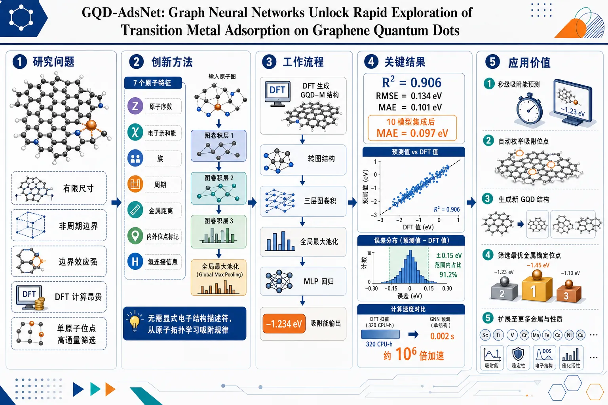
研究问题如何在有限尺寸、非周期、边界效应强烈的 graphene quantum dots 上，快速准确预测过渡金属吸附能，替代昂贵的 DFT 全构型扫描，实现单原子催化位点的高通量筛选。创新方法将 GQD–金属吸附体系表示为图结构，用仅 7 个原子级特征驱动的图卷积神经网络学习吸附规律；通过三层图卷积捕捉局域配位与边缘效应，再用 global max pooling 抽取最强局域信号，形成可在新几何上快速推断的 GQD-AdsNet。Aha 点在于：不显式输入电子结构描述符，也能从原子拓扑中学到决定吸附能的关键物理。工作流程输入 DFT 生成的 GQD–M 结构；将每个体系转为无向图，节点为原子、边为化学连接，去掉氢原子并保留原子序数、电子亲和能、族、周期、金属距离、内外位点标记和氢连接信息；经三层图卷积提取局域环境；通过全局最大池化得到图级表示；再经 MLP 回归输出吸附能；最后可用于固定 GQD 的位点全扫描或自动生成新 GQD 后的快速筛选。关键结果在 491 个 DFT 标注样本上，测试集达到 R²=0.906、RMSE=0.134 eV、MAE=0.101 eV；10 模型集成后 MAE 进一步降至 0.097 eV。误差大多集中在 ±0.15 eV 内，整体无明显系统偏差。相较 DFT，单个构型推断时间从约 320 CPU-h 压缩到约 0.002 s，速度提升约 10⁶ 倍。应用价值为碳基单原子催化剂的设计提供秒级吸附能预测器，可自动枚举吸附位点、生成新 GQD 结构并筛选最优金属锚定位点，大幅降低高通量材料发现的计算门槛。该框架可扩展到更多 GQD 形貌、更多金属以及其他吸附与催化性质的快速探索。第一部分：核心概览 (Overview)
这篇工作把有限尺寸 graphene quantum dots (GQDs) 上的过渡金属吸附能预测问题，转化为图神经网络 (GNN) 学习任务，构建了 491 个 DFT 标注样本的专用数据集，并以仅 7 个原子级特征实现 R²=0.906、MAE=0.101 eV 的精度。核心贡献不在于提出新物理，而在于把高成本第一性原理筛选压缩为秒级推断，并进一步支持新 GQD 结构生成 + 吸附位点全扫描的自动化探索流程，对单原子催化材料的高通量设计具有直接方法学价值。
---
第二部分：结构化快速回顾
《GQD-AdsNet: Graph Neural Networks Unlock Rapid Exploration of Transition Metal Adsorption on Graphene Quantum Dots》（None，）
- 背景：GQD 支撑的单原子催化体系具有高活性与高原子利用率，但 DFT 扫描配置空间极其昂贵，尤其面对有限、非周期、边界效应显著的 GQD。
- 方法：构建 491 个 GQD–M 吸附体系数据集；将体系表示为图；使用 3 层 graph convolution + global max pooling + MLP 的 GCNN/GNN 预测吸附能。
- 结果：测试集上达到 R²=0.906、RMSE=0.134 eV、MAE=0.101 eV；10 模型集成后 MAE=0.097 eV、R²=0.907。
- 讨论：模型能捕捉局域配位、边缘位点、内部/外部吸附位带来的吸附趋势，并可推广到未见 GQD 几何；三角形 GQD 的泛化最弱。
- 局限：训练金属仅 Pd/Pt/Ir/Rh，结构仅覆盖 6 种 GQD 与高对称位点；对新几何的外推仍显著弱于插值情形。
- 结论：GQD-AdsNet 提供了一个把 DFT 级吸附筛选压缩为毫秒到秒级推断的可扩展框架，适合碳基单原子催化剂的快速发现。
---
第三部分：逐章节冷凝解析 (Section-by-Section Condensing)
Abstract
- 问题定义与计算瓶颈
- 单原子催化支撑在碳基结构上的设计依赖大量 DFT 计算，但“*the design and characterization of these materials through first-principles calculations are computationally expensive*”，使大规模构型探索受限。
- 关键对象是transition metals on graphene quantum dots (GQDs) 的adsorption energies。
- 核心方案
- 构建基于 graph neural networks (GNNs) 的框架，预测 GQD 上过渡金属的吸附能。
- 训练数据来自 density functional theory calculations。
- 关键性能
- 模型获得 R² = 0.906、MAE = 0.101 eV。
- 相对 DFT 的计算成本下降约 six orders of magnitude，与“*reducing computational cost by roughly six orders of magnitude relative to DFT*”一致。
- 学术定位
- 目标不是替代 DFT 物理，而是为accelerated screening 与rational design 提供低成本工具。
---
Introduction
- 能源与催化背景
- 电化学能源系统，包括fuel cells、water electrolysis、rechargeable metal–air batteries，被定位为清洁能量转换/存储的重要候选。
- 这些技术的性能高度依赖高活性、稳定、经济的电催化剂。
- 过渡金属的优势与障碍
- 过渡金属对多种电化学反应具有优异催化活性。
- 大规模应用受限于高成本与自然丰度有限。
- 单原子催化与金属吸附体系
- 单原子催化剂与金属 adatom 体系通过“*maximize atomic utilization efficiency*”提高原子利用率，同时保持或增强活性。
- 稳定性和性能强烈依赖supporting material。
- 碳基纳米结构的优势
- 碳基支撑体具有excellent electrical conductivity、chemical stability、tunable surface chemistry。
- 能促进charge transfer、抑制aggregation, sintering, deactivation。
- GQDs 的特殊性
- GQDs 结合 graphene 的电子性质与finite-size / quantum confinement effects。
- 其large surface-to-volume ratio、tunabl e electronic structure、high density of chemically active edge sites 使金属-载体相互作用更强。
- 过渡金属锚定在 GQDs 上可提升多种能源相关反应的活性和稳定性。
- 吸附能的中心地位
- adsorption energy 直接决定stability、resistance to sintering 与电子相互作用强度，因此是筛选指标核心。
- DFT 扫描的不可扩展性
- GQD 结构多样、金属种类广、位点组合多，形成极其复杂的 configurational landscape。
- 大规模 DFT 筛选不现实。
- GNN 的方法学动机
- GNN 擅长处理graph-structured data，通过 message-passing 逐步聚合邻域信息。
- GNN 能编码local atomic environments 与long-range structural dependencies。
- 对 finite and non-periodic nanostructures 特别合适，因为这类体系缺少平移对称性且边界效应显著。
- 研究空白
- 晶体与周期材料上的 GNN 已经成熟，但对adsorption energetics on finite low-dimensional nanostructures 的研究较少。
- 目前仍缺少一个transferable graph-based framework 来系统、高效地预测 GQD 上的吸附能。
- 研究目标
- 构建 GQD-AdsNet，在保持高精度的前提下实现 GQD 金属吸附能的快速预测。
- “*The proposed approach enables efficient and low-cost exploration of complex adsorption configurations while maintaining high predictive accuracy relative to first-principles calculations.*”
---
Results and discussion
#### Systems
- 数据集规模
- 构建了一个原创数据集，共 491 个 GQD–M adsorption systems。
- 全部由当前工作中的 ab initio calculations 生成。
- 体系组成
- 过渡金属包括 Pd、Pt、Ir、Rh。
- GQD 参考体系共 6 个：
- 2x2HQD, 3x3HQD
- 3x3TQD, 5x5TQD
- 3x3RQD, 3x4RQD
- 位点覆盖
- 考察了所有高对称吸附位点：hollow (h)、bridge (b)、top (t)。
- 同时考虑internal 与 external 吸附位，以捕捉配位、对称性与边缘效应变化。
- 独立系统与参考能
- 每个 GQD–M 构型都被作为独立系统并完全弛豫。
- 输出为参考 adsorption energies (Eₐds)，形成物理一致且多样的数据集。
- 证据引述
- *"original dataset composed of 491 graphene quantum dot–metal (GQD–M) adsorption systems"*
- *"all high-symmetry adsorption sites of six graphene quantum dots (GQDs)"*
---
#### GQD-AdsNet Performance
- 模型结构
- 使用 graph convolutional neural network，包含 three graph convolutional layers。
- 之后接 global max pooling 与 MLP regressor。
- 测试集性能
- R² = 0.906
- RMSE = 0.134 eV
- MAE = 0.101 eV
- 预测值与 DFT 值高度一致，说明模型已捕捉控制吸附的局域结构与化学特征。
- 集成模型
- 构建了 10 个 cross-validation models 的平均集成预测器。
- 集成后 MAE = 0.097 eV、RMSE = 0.134 eV、R² = 0.907。
- 提升幅度很小，说明各模型收敛到相近函数，缺少足够多样性。
- 最终模型选择
- 由于性能提升有限，选择了单模型作为最终模型。
- 集成结果保留在补充材料。
- 留一组泛化
- 采用 leave-one-group-out，组按三类 GQD 几何划分。
- MAE：
- HQDs: 0.133 eV
- TQDs: 0.239 eV
- RQDs: 0.131 eV
- 三角形 GQD 的泛化最弱，说明其边缘环境和电子结构更复杂。
- 按金属拆分表现
- 各金属上精度略有差异，但总体保持稳定。
- 差异来自金属电子结构与局域配位环境不同。
- 误差分布
- 误差围绕零中心分布，系统性偏差很小。
- 大多数误差在 ±0.15 eV 内。
- 证据引述
- *"The GQD-AdsNet achieves a coefficient of determination of R² = 0.906, with a root mean squared error (RMSE) of 0.134 eV and a mean absolute error (MAE) of 0.101 eV."*
- *"The errors are centered around zero, indicating negligible systematic bias"*
---
#### Generalization and Predictive Exploration
- 两条探索策略
- (i) systematic adsorption-site exploration on fixed graphene quantum dots
- (ii) generation of new GQD structures
- 二者最终整合进统一 workflow，实现对未知系统的快速筛选。
- 意义
- 不只是在训练分布内插值，而是对新位点与新几何进行预测。
- 目标是把 DFT 的人工构型搜索转化为自动化生成 + GNN 评估。
- 证据引述
- *"Two complementary exploration strategies were considered"*
- *"combined and integrated with the final trained model into a unified workflow"*
---
#### Adsorption-site exploration on fixed GQDs
- 位点自动枚举
- 选定一个 GQD 后，自动生成全部高对称吸附构型。
- 通过 GQD-AdsNet 对每个构型直接预测吸附能。
- 示例系统
- 以 3×4RQD-Pd 为例绘制所有位点的吸附能图。
- 对称等价位点得到一致趋势，模型与文献结果吻合。
- 物理趋势捕捉
- 更负的 Eₐds 代表更强吸附。
- 外部位点通常比内部位点吸附更强，符合边缘原子lower coordination 与enhanced electronic localization 的物理图景。
- 意义
- 该模型不仅拟合数值，还保留了“外部 > 内部”的合理物理排序。
- 支持生成新的 adsorption energy maps。
- 证据引述
- *"the model consistently reproduces the expected adsorption trends"*
- *"More negative Eₐds values indicate stronger adsorption"*
---
#### Generation of new GQD structures
- 新结构自动生成
- 从预定义数量的 benzene units 自动生成全体兼容的non-linear GQD structures。
- 使之前未见过的几何和拓扑进入搜索空间。
- 完整工作流
- 自动生成 GQD
- 构建所有金属吸附位点
- 用 GQD-AdsNet 评估吸附能
- 筛选最优催化构型
- 方法学意义
- 该流程大幅扩展了适用范围。
- 无需额外 DFT 即可探索更广泛的 graphene nanostructures。
- 证据引述
- *"entirely new graphene quantum dots were automatically generated from a predefined number of benzene units"*
- *"without requiring additional DFT calculations"*
---
#### Computational cost considerations
- DFT 代价
- 单个吸附能计算通常需要several hours。
- 实际 DFT 使用 VASP，在 32-core CPU cluster 上，约需 320 CPU-h per adsorption configuration。
- GNN 代价
- GNN 推断仅需 ~0.002 s per configuration，而且只需single CPU core。
- 速度提升约 10⁶ 量级。
- 意义
- 对大构型空间，GNN 使原本不可行的穷举筛选变为可执行。
- 这也是整篇工作的最强工程价值。
- 证据引述
- *"requiring approximately 320 CPU-h per adsorption configuration"*
- *"GNN predictions required only a fraction of a second (~0.002 s) per configuration"*
---
Conclusion
- 主要结论
- 构建了一个利用structural and topological information 预测 GQD 上过渡金属吸附能的 graph neural network framework。
- 数据由 DFT 生成，并用于监督训练。
- 物理解释
- 模型无需显式输入 DFT 电子描述符，也能捕捉决定吸附的关键物理因素。
- 说明local geometry 和 graph topology 已编码了吸附所需的大部分相关电子信息。
- 自动化探索能力
- 自动生成 GQD 与吸附构型的工具，使未知体系可被低成本快速探索。
- 外延前景
- 框架适合扩展到catalytic reaction studies 与其他physicochemical properties。
- 证据引述
- *"Graph neural networks can successfully capture the key physical factors governing adsorption phenomena in finite graphene nanostructures"*
- *"local geometry and graph topology already encode a substantial portion of the relevant electronic information"*
---
Methods
#### Dataset and graph representation
- 图定义
- 每个 GQD–M 体系表示为无向图 G=(V,E)。
- nodes 对应原子，edges 对应化学键。
- 形式上，边刻画两个顶点间关系。
- Hydrogen 的处理
- hydrogen atoms 被排除在图表示之外。
- 目的：降低复杂度，聚焦于carbon lattice 与adsorbed metal atom，即主导吸附相互作用的部分。
- 节点特征
- 每个节点有 7 个描述符：
- atomic number
- electron affinity
- group
- period
- 与金属原子的 distance
- internal/external site indicator
- hydrogen-connectivity indicator
- 意义
- 特征设计兼顾化学身份、周期信息、几何关系和局域环境。
- 这也是模型能在有限纳米结构上学习吸附规律的基础。
- 证据引述
- *"Hydrogen atoms were excluded from the graph representation in order to reduce the complexity of the model"*
- *"Each node ... was characterized by seven descriptors"*
---
#### DFT calculations
- 软件与理论框架
- 使用 VASP 进行全部电子结构计算。
- 采用 plane-wave basis set，截断能 500 eV。
- 交换-相关与色散
- 使用 GGA-PBE。
- 加入 DFT-D3 长程色散修正。
- 所有计算均考虑spin polarization。
- k 点与结构优化
- 因体系有限，仅用 Γ-point。
- 原子位置用 conjugate-gradient method 优化，直到残余力低于 0.01 eV Å⁻¹。
- 吸附能定义
- 公式：
[
Eₐdₛ=EGQD₋M-EGQD-EM
]
- 其中：
- E_GQD-M：吸附体系总能
- E_GQD：孤立 GQD 平衡态能
- E_M：气相孤立金属原子能
- 物理含义
- 更负的 Eₐds 表示更强吸附、更稳定锚定。
- 证据引述
- *"The adsorption energy of a metal atom (M) on each GQD ... was computed as shown in eq. 1"*
- *"until the residual forces converged below 0.01 eV Å⁻1"*
---
#### GQD-AdsNet architecture
- 模型类型
- 基于 Graph Convolutional Neural Network (GCNN)。
- 使用 PyTorch 与 PyTorch Geometric 实现。
- 卷积机制
- 每层通过邻域聚合更新节点表示：
[
vᵢt⁺¹=Conv(vᵢ^t, vⱼ^t, u₍ᵢ,ⱼ₎)
]
- 经过 three convolutions 后，节点嵌入融合了更大的局域环境信息。
- Pooling 与图级表示
- 采用 pooling function 将所有节点特征压缩为图级向量 vₚ。
- 这里选择 global max pooling。
- 回归头
- MLP 包含 two fully connected layers，中间用 ReLU。
- 输出为标量吸附能。
- 关键思想
- 卷积负责学习局域化学环境，池化负责从节点级表征汇聚为整图性质。
- 这正适合吸附能这类全局性质预测。
- 证据引述
- *"The GQD-AdsNet is based on a Graph Convolutional Neural Network (GCNN) architecture"*
- *"global max pooling demonstrated the best predictive performance"*
---
#### Model training and evaluation
- 数据划分
- 90% 用于训练/验证，10% 用于测试。
- 采用 stratified split based on metal identity，避免某一金属过度集中于某个子集。
- 数据泄漏控制
- 特征标准化仅使用训练集统计量。
- 测试集始终独立保留，未参与训练或调参。
- 优化目标
- 监督学习，最小化 MSE。
- 优化器为 Adam。
- 使用 early stopping 防止过拟合。
- 评估指标
- RMSE
- MAE
- R²
- 证据引述
- *"The test set was held out throughout model development and was not used for training or hyperparameter optimization"*
- *"Early stopping based on validation loss was employed to prevent overfitting"*
---
#### Hyperparameter optimization
- 搜索策略
- 使用 metal-stratified K-fold cross-validation。
- 依据验证集表现选择最佳配置。
- 最优超参数
- 3 graph convolution layers
- 64 hidden features
- 初始学习率 1 × 10⁻³
- batch size 8
- 池化比较
- 比较了 max / add / mean 三种 pooling。
- global max pooling 最优。
- 证据引述
- *"The final model consists of three graph convolution layers with 64 hidden features"*
- *"Among them, global max pooling demonstrated the best predictive performance"*
---
#### Data availability / Code availability
- 数据开放
- 数据集公开于 Zenodo 与 GitHub。
- 代码开放
- 源代码公开于 GitHub，另有归档版本在 Zenodo。
- 意义
- 可复现性较强，便于后续扩展到更多金属、更多 GQD 形貌或不同吸附问题。
---
第四部分：深度理解与语言支持 (Understanding & Nuance)
1. 关键术语解析
- Transferability
- 不是“普适性”那么强的词，而是指模型在未见过的结构/组合上仍能保持合理性能。
- 这里更接近“跨几何的可迁移预测能力”，不等于对任意体系都稳健。
- Edge sites
- 不只是几何边缘，而是电子结构上更活跃的位置。
- 在 GQD 中，edge sites 往往伴随更低配位、更强局域化电子态，因此吸附更强。
- Message passing
- GNN 的信息传播机制，邻居节点特征经过多轮聚合后形成更大范围的环境表示。
- 其本质是用可学习函数近似“局域化学环境如何决定性质”。
- Global max pooling
- 不是简单平均，而是对每个特征维度取最大值。
- 对“是否存在某类强局域相互作用”特别敏感，适合吸附这种由局部强信号主导的任务。
- Leave-one-group-out
- 严格于随机划分。
- 整组几何被完全留出，更接近“新类型纳米片”外推测试。
---
2. 疑难查证与深层解释
- 为什么只用结构和拓扑特征，也能预测吸附能？
- 吸附能虽然来自电子结构，但在许多有限纳米体系中，电子行为高度受局域几何、配位数、边缘类型、原子种类控制。
- 图结构与原子描述符已经隐含了这些信息，因此模型能够学习“几何 → 电子效应 → 吸附能”的统计映射。
- 这不意味着电子信息被完全替代，而是说明在该任务上，结构表征已经足够富集。
- 为什么三角形 GQD 的外推最差？
- 三角形 GQD 通常具有更强的不对称边缘环境、不同的边缘态分布和更复杂的局域配位。
- 当训练数据对这类拓扑覆盖不足时，模型从其他几何迁移过来的误差会更大。
- 这反映的是分布偏移 (distribution shift)，不是纯粹模型容量不足。
- 为什么集成模型提升很小？
- 10 个模型来自相似训练设置，学到的函数非常接近。
- 集成只有在模型间存在足够多样性时才显著降方差；这里多样性有限，所以只带来轻微收益。
- 这也侧面说明任务本身的可学习性较强，单模型已足够稳定。
- 为什么更偏向 global max pooling 而不是 mean pooling？
- 吸附性质常由少数关键原子决定，例如金属邻域、边缘配位点。
- max pooling 更容易保留这种“尖峰型”局域信息；mean pooling 会稀释局域强信号。
- 对有限纳米结构上的吸附问题，这一点尤其重要。
---
第五部分：创新评估与关联 (Synthesis & Novelty)
1. 新颖性判断
相较近 2–5 年 的相关工作，创新点集中在三处：
- 问题对象更具体且更难
- 过去不少 GNN 工作聚焦于周期晶体性质、一般催化描述符，或吸附位点化学环境学习。
- 这里直接针对有限、非周期、边缘主导的 graphene quantum dots，难点更高，因为缺少平移对称性，泛化更脆弱。
- 从“预测”推进到“自动探索工作流”
- 不只是训练一个回归器，而是把它与新 GQD 生成器、位点自动枚举结合，形成“生成—评估—筛选”闭环。
- 这种流程比单纯的性质预测更接近真实材料发现管线。
- 对高成本 DFT 筛选的替代幅度非常大
- 单个构型从 320 CPU-h 压缩到 ~0.002 s，量级差达到约 10⁶。
- 在材料筛选层面，这不是小幅加速，而是把方法边界整体推向可规模化。
2. 解决了前人未解决的问题
- 未见体系的快速吸附能预测
- 解决了有限 GQD 构型上，金属吸附能难以跨几何迁移预测的问题。
- 边缘效应与位点效应的统一编码
- 通过节点特征中的internal/external、距离、化学身份等信息，把复杂的边缘物理纳入同一图框架。
- 高通量筛选的实际可执行性
- 使多金属、多位点、多几何的搜索从 DFT 级别不可承受，变成秒级可运行。
3. 方法学边界
- 训练集只覆盖 4 种金属 与 6 类 GQD，外推范围仍有限。
- 当前任务只做吸附能回归，尚未直接进入反应路径、过渡态、动力学层面。
- 真正跨材料家族推广时，仍需更多结构多样性与更广的化学覆盖。
---
如果需要，可以继续把这篇论文整理成：
- 一页式论文笔记
- 答辩汇报版 PPT 提纲
- “创新点—局限—可复现性” 三栏表格
- 适合投稿综述引用的英文总结
-
02
📊 含图深析
📖 展开分析 + 配图
研究问题QUBO化机器学习中的SVM，如何同时自动选择编码基数B、位深K、RBF核参数γ和等式约束惩罚ξ，避免手工调参和网格搜索在不同量子启发式退火器上表现不稳、效率低的问题？创新方法提出基于Optuna的“表述层自动调参”框架，把问题表述本身作为优化对象：外层搜索B、K、γ、ξ，内层由退火器求解生成的QUBO；用验证集准确率驱动闭环重构，并以TPE与高斯过程采样器实现跨后端、solver-agnostic的联合优化。工作流程输入训练数据与验证数据后，先将SVM对偶变量按编码基数B和位深K离散化，再结合RBF核参数γ与约束惩罚ξ生成QUBO；内层由Fixstars Amplify、SQBM+或Digital Annealer求解该QUBO；外层Optuna根据验证准确率反复重建表述并更新搜索，最终输出最优表述参数与分类器。关键结果在0–20%标签噪声的线性与非线性分类任务上，相比网格搜索，平均提升约0.8和2.1个百分点；其中非线性任务收益更明显，说明表述层自动调参能更好缓解离散化误差、惩罚失衡和后端近似优化带来的损失。应用价值为QUBO/退火式机器学习提供可迁移的自动化调参范式，减少人工设定编码与惩罚参数的成本；可在不同量子启发式退火器上复用，适合含噪、复杂边界的分类任务，也提示应把模型表述与求解后端作为联合优化对象。以下解析仅基于当前可见的标题、摘要与元数据；正文分章节内容未提供，因此第3部分只能按可见文本中的 Abstract 与标题信息做严谨拆解，不补造不存在的章节细节。
---
第一部分：核心概览
这篇工作把 QUBO-based SVM 的关键设计变量统一纳入 外层自动调参 框架：不仅调传统超参数，还同时调 编码基数 (B)、位深 (K)、RBF 核参数 (γ) 与 等式约束惩罚 (ξ)。核心贡献不在单一求解器性能，而在于提出一种solver-agnostic 的 formulation-level auto-tuning 方法，并在 Fixstars Amplify Annealing Engine、Toshiba SQBM+、Fujitsu Digital Annealer 上验证。相较网格搜索，在含噪线性与非线性任务上分别平均提升约 0.8 与 2.1 个百分点，强调问题表述质量与后端求解能力必须联合评估。
---
第二部分：结构化快速回顾
《Formulation-Level Auto-Tuning for QUBO-Based Machine Learning: A Case Study Across Multiple Quantum-Inspired Annealers》（None，）
- 背景：QUBO 化的机器学习，尤其是 annealing-based SVM，需要同时处理离散化、核参数和惩罚项；这些因素彼此耦合，传统手工调参或网格搜索成本高、效率低。
- 方法：构建基于 Optuna 的两层优化框架；内层 annealer 最小化生成的 QUBO，外层在每次 trial 中重建 formulation，并以验证集准确率驱动搜索；同时使用 TPE 和 Gaussian-process samplers。
- 结果：在 0–20% label noise 的线性与非线性分类任务上，相比 grid search 平均提升约 0.8 和 2.1 个百分点；方法可迁移到三种不同量子启发式 annealer。
- 讨论：性能提升不只来自求解器本身，也来自 formulation 质量；任务级反馈能部分抵消离散化误差、惩罚不平衡与后端近似优化误差。
- 局限：目前可见信息仅有摘要，缺少数据集规模、显著性检验、逐后端分解结果和完整消融；方法也仍停留在 SVM 这一类任务上。
- 结论：QUBO 机器学习需要把模型表述和求解后端作为一个联合优化对象；外层自动调参能显著优于静态网格搜索。
---
第三部分：逐章节冷凝解析
Title and abstract
#### Formulation-level auto-tuning is the central idea
摘要开头直接界定方法核心：*"This paper presents an Optuna-based formulation-level auto-tuning framework for support vector machines (SVMs) implemented on multiple quantum-inspired annealers."*
这里的关键信号是 formulation-level，不是只调训练超参数，而是调 QUBO 形式本身。研究对象是 SVM，实现载体是多个 quantum-inspired annealers，说明目标不是某个单一硬件，而是跨后端的统一流程。
#### QUBO 化 SVM 的关键困难来自三类耦合参数
摘要明确指出：*"In an annealing-based SVM, continuous dual variables are discretized and converted into a quadratic unconstrained binary optimization (QUBO) model."*
这一步把连续对偶变量变成二进制 QUBO，带来离散化误差与规模膨胀。紧接着摘要给出三类耦合参数：*"representation parameters-the encoding base B and bit depth K-which determine numerical range, resolution, and QUBO size; the RBF kernel parameter (γ), which determines classifier geometry; and the equality-constraint penalty (ξ), which controls feasibility and coefficient balance."*
这里的关键点是：
- (B) 与 (K) 决定数值范围、分辨率和 QUBO size
- (γ) 决定 classifier geometry
- (ξ) 控制 feasibility 与 coefficient balance
这意味着问题不是单变量调优，而是一个离散-连续混合、强耦合、黑箱式搜索问题。
#### 联合选择被形式化为混合离散-连续黑箱优化
摘要直接给出形式化方式：*"We formulate their joint selection as a mixed discrete-continuous black-box optimization problem."*
这句话很重要，因为它把 formulation tuning 从经验性操作提升为标准优化问题。其难点在于：
- 搜索空间同时包含离散变量与连续变量
- 目标函数来自完整的求解流程，不可解析
- 每次评估都要重建 QUBO 并调用 annealer，代价较高
#### 两层优化结构把“建模”和“求解”耦合起来
摘要给出框架结构：*"The framework has two optimization levels: an inner annealer minimizes the generated QUBO, while an outer Optuna loop reconstructs the formulation in every trial and maximizes validation accuracy."*
这里的技术路线非常清晰：
- 内层：annealer 负责求解当前 trial 的 QUBO
- 外层：Optuna 负责搜索 (B,K,γ,ξ)
- 评价指标：validation accuracy
关键创新不只是“用 Optuna 调参”，而是每次 trial 都重建 formulation，让外层搜索直接感知离散化与惩罚设计对最终泛化的影响。
#### 方法具备 solver-agnostic 性质
摘要写明：*"The same solver-agnostic procedure is applied to Fixstars Amplify Annealing Engine, Toshiba SQBM+, and Fujitsu Digital Annealer using TPE and Gaussian-process samplers and is compared with conventional grid search."*
这里包含三个层面的信息：
- solver-agnostic：同一流程可迁移到不同后端
- 三个后端分别是 Fixstars Amplify Annealing Engine, Toshiba SQBM+, Fujitsu Digital Annealer
- 外层采样器使用 TPE 和 Gaussian-process samplers
- 基线是 conventional grid search
这说明研究不仅比较“算法”，也比较“后端异质性”下的可迁移优化策略。
#### 在含噪任务上获得稳定收益
摘要给出结果概括：*"Experiments on linear and nonlinear classification tasks with 0-20% label noise show mean gains over grid search of approximately 0.8 and 2.1 percentage points, respectively."*
此处有两层结果：
- 线性分类任务：平均提升约 0.8 个百分点
- 非线性分类任务：平均提升约 2.1 个百分点
- 噪声强度覆盖 0–20% label noise
非线性任务收益更大，暗示 formulation-level tuning 对复杂边界问题更敏感，也更能发挥价值。
#### 核心结论是 formulation 与 backend 必须联合评估
摘要最后一句给出总判断：*"The results demonstrate that formulation quality and backend capability must be evaluated jointly and that task-level feedback can compensate for discretization, penalty imbalance, and backend-dependent approximate optimization."*
这句话包含论文的中心论断：
- formulation quality 不能脱离 backend capability 单独评估
- task-level feedback 能补偿三类误差：
- discretization
- penalty imbalance
- backend-dependent approximate optimization
这把方法贡献提升为一种更普遍的原则：在 QUBO 机器学习里，性能瓶颈不是单一求解器，而是表述-求解协同失配。
---
第四部分：深度理解与语言支持
术语解析
#### Formulation-level auto-tuning
不是普通的超参数搜索，而是对问题表述层进行自动调优。区别在于普通调参只动模型参数，如 (C)、(γ)；这里连 编码方式、位宽、惩罚结构 都纳入搜索。
#### Mixed discrete-continuous black-box optimization
表示搜索空间里同时有离散变量和连续变量，且目标函数没有显式表达式，只能通过试验评估。这里对应 (B,K) 这类离散/结构参数与 (γ,ξ) 这类连续参数混合存在。
#### Penalty
在 QUBO 中，penalty 通常不是“惩罚”这么简单，而是把约束写进目标函数的权重。太小会导致约束违背，太大又会压制主目标、造成 coefficient imbalance。
#### Feasibility
在这里不是抽象的“可行性”而已，而是指解是否满足原问题约束，尤其是 SVM 对偶变量的等式约束。与 penalty 紧密联动。
#### Backend-dependent approximate optimization
指不同 annealer 的近似求解偏差并不相同。即使 QUBO 相同，解的质量也会因后端结构、采样策略、近似机制而变化。
---
疑难查证
#### 为什么要同时调 (B) 和 (K)？
因为二进制编码不是纯实现细节，而直接决定数值表达能力。
- (B) 像“进制基底”
- (K) 像“位数/精度”
二者共同决定：
- 可表示的数值范围
- 分辨率
- QUBO 的变量数量与耦合复杂度
所以只调 (γ) 或 (ξ) 而不管编码方式，往往会把问题限制在错误的离散化尺度上。
#### 为什么外层用验证准确率，而不是直接最小化 QUBO 值？
QUBO 值只保证“当前离散表述下”的优化目标更低，不直接等价于泛化更好。
外层用 validation accuracy，等于把“是否真的有利于分类”作为最终目标，让搜索系统自动避开那些虽然 QUBO 值漂亮、但分类性能差的表述。
#### 为什么非线性任务收益更大？
非线性任务对 RBF kernel 和离散化精度更敏感。
当决策边界更复杂时，(γ)、(B)、(K)、(ξ) 的耦合影响更强，formulation-level tuning 的边际收益通常更高，这与摘要中 2.1 pp > 0.8 pp 的结果一致。
---
第五部分：创新评估与关联
创新性判断
相对于近 2–5 年 QUBO / quantum-inspired annealing / annealing-based ML 的常见路线，这项工作的新颖性主要体现在四点：
- 从“调求解器”推进到“调问题表述”
过去很多工作聚焦于 annealer 参数、embedding、QUBO 构造或单一超参数；这里把 encoding base (B)、bit depth (K)、(γ)、(ξ) 统一作为联合决策变量，直接把表述质量变成优化对象。
- 把 formulation search 变成任务驱动的外层闭环优化
外层以 validation accuracy 为目标，每个 trial 重建 formulation，形成“评估—重构—再评估”的闭环。这比静态网格搜索更接近真正的 AutoML。
- 跨多个 quantum-inspired annealers 的 solver-agnostic 验证
同一套流程覆盖 Amplify、SQBM+、Digital Annealer，说明方法不是绑死某个后端，而是在异构近似求解器上寻找稳健表述。
- 把 label noise 纳入系统性评估
在 0–20% label noise 下仍报告稳定增益，说明方法不仅适合理想数据，也面对现实扰动。非线性任务平均提升 2.1 pp，显示对复杂边界场景的实际价值更高。
它解决了前人没解决的问题
- QUBO 机器学习中的手工表述依赖：用自动化搜索替代经验设定。
- 离散化与惩罚权重失配：通过任务级反馈缓解。
- 单后端结论外推困难：通过多 annealer 统一框架提高可迁移性。
- “求解得好”不等于“分类得好”：把最终评价从 QUBO 层推进到任务层。
---
如果需要，我可以继续做两件事之一：
- 把这篇工作整理成论文答辩式提纲；或
- 基于这个摘要，进一步构造一个可能的完整论文逻辑框架（Introduction / Method / Experiments / Ablation / Discussion）。
-
03
📊 含图深析
📖 展开分析 + 配图
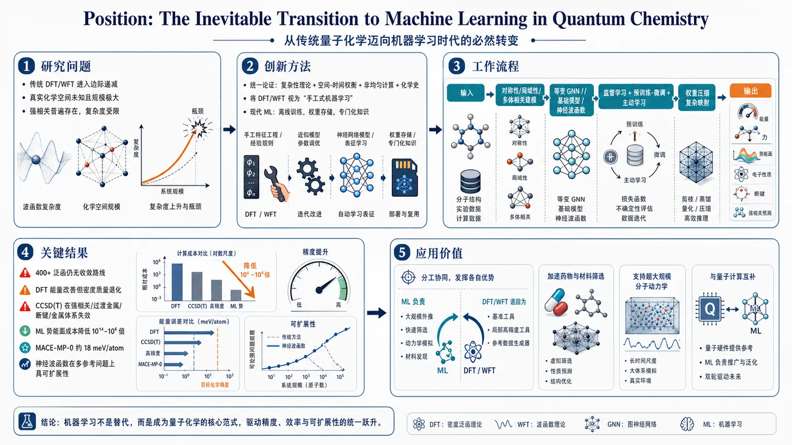
研究问题量子化学中的电子结构问题为何在传统 DFT/WFT 框架下逐渐陷入边际递减与复杂度瓶颈？在真实化学空间未知、问题规模极大且强相关普遍存在的情况下，机器学习是否应成为下一阶段新近似方法的首要方向？创新方法论文的“Aha!”点不是新算法，而是用一条统一论证链把复杂性理论、空间-时间权衡、非均匀计算与量子化学史连接起来：把传统 DFT/WFT 重解释为“手工式机器学习”，即人类在小特征空间里做特征工程、架构设计和参数拟合；再把现代 ML 视为把昂贵的在线计算转成离线训练后权重存储的专门化知识，从而论证 ML 在不确定复杂度下仍是最稳健的战略选择。工作流程输入是电子结构问题及其高通量参考数据：小分子、材料、构型轨迹、量子化学基准和部分量子计算参考。先通过物理对称性、局域性和多体相关构建等变 GNN、基础模型或神经波函数；再用监督学习、预训练-微调和主动学习不断吸收新参考点；训练后的模型把复杂的波函数/能量映射压缩进参数权重，最后输出分子能量、力、势能面、电子性质、断键与强相关体系预测，并可在大规模构型空间中外推。关键结果论文汇总的证据显示：传统方法已出现明显瓶颈，超过 400 个泛函未形成收敛路线，DFT 在能量指标改善的同时电子密度质量反而退化；强相关、过渡金属、断键和金属体系让 CCSD(T) 等 WFT 方法失效；相比之下，ML 势能面可在接近 DFT 精度下把计算成本降低 10⁴–10⁶ 倍，基础模型如 MACE-MP-0 可达到约 18 meV/atom 精度，神经波函数也开始在多参考问题上展示可扩展性。应用价值为量子化学研究路线提供明确优先级：让 ML 负责大规模外推、快速筛选、动力学与材料发现，让传统 DFT/WFT 退回为基准、局部工具和参考数据生成器。实际意义包括加速药物与材料筛选、支持超大规模分子动力学、提高强相关体系建模能力，并与量子计算形成分工互补，由量子硬件提供高质量参考点，ML 承担全空间推广。第一部分：核心概览 (Overview)
这是一篇面向量子化学方法论转向的立场论文，核心贡献不在新算法，而在于把量子化学中的传统方法、机器学习、计算复杂性理论、空间-时间权衡、非均匀计算统一到同一框架下，系统论证机器学习是下一阶段最具战略优先级的路径。论文把 DFT/WFT 的长期进展解释为“手工式机器学习”的边际递减，并把高通量数据、等变神经网络、基础模型与神经波函数视为已经成熟的技术拐点。领域地位上，它属于将 AI for Science 从工具层面推进到范式层面的综合性宣言。
---
第二部分：结构化快速回顾
《Position: The Inevitable Transition to Machine Learning in Quantum Chemistry》（None，）
- 背景：电子结构问题的精确求解具有QMA-hard/QMA-complete性质，传统 DFT/WFT 依赖人为设计的近似，长期进展显著放缓。
- 方法：用计算复杂性理论、空间-时间权衡、P/poly 非均匀计算、以及对传统方法史的重解释，构建“ML 是理性选择”的论证链。
- 结果：高通量数据库、等变 GNN、基础模型、神经网络波函数 已展示出跨体系泛化、显著降本和强相关问题处理能力。
- 讨论：ML 不只是替代传统方法，而是把传统“手工设计”升级为数据驱动的自动特化；可解释性与准确性之间存在结构性权衡。
- 局限：没有提出新理论证明，也没有新实验；对复杂性最坏情形向真实化学子空间的外推仍是决策论式而非严格证明。
- 结论：量子化学的下一阶段应把ML 置于优先位置，传统方法保留为基准、参考数据与局部工具；量子计算更适合作为高质量参考源，ML 负责外推到大规模构型空间。
---
第三部分：逐章节冷凝解析 (Section-by-Section Condensing)
1 Introduction
- 战略优先级明确指向 ML
量子化学的新近似开发应把机器学习作为主方向，传统方法保留为“日常计算工具”和“参考数据生成器”。关键表述是 *"Machine learning should be the primary direction for developing new quantum chemistry approximations."* 这里的重点不是替代实践中的 DFT/WFT，而是重新排序研究资源的优先级。
- 传统近似已进入边际递减
“手工构造”新的泛函与波函数 ansatz 已出现明显的收益递减。对应表述为 *"the hand-crafted development of new functionals and wavefunction ansatze has reached diminishing returns."* 这为后续所有论证设定了总前提。
- 整篇结构被组织为五个互锁命题
论证被拆成 Positions 1–5，分别对应：复杂性与空间-时间权衡、传统方法瓶颈、可解释性、技术催化因素、以及量子计算协同。核心设计是把“为什么是 ML”拆成多个可检验层次，而不是单一口号。
---
2 The Intractable Quantum Challenge
#### 2.0 The central electronic-structure problem
- 核心方程是薛定谔方程
电子结构问题的中心目标是求解 *"the time-independent Schrödinger equation: H^ Ψ = E Ψ"*。其中 Hamiltonian、energy、wavefunction 分别对应 ( hat H )、(E)、(Ψ)。
- 维度灾难来自 Hilbert 空间指数增长
多电子波函数处在维度随电子数 N 指数增长的 Hilbert 空间中，直接求解对几个原子以上的体系就变得不可行。原文用 *"curse of dimensionality"* 概括这一点。
#### 2.1 The Limits of Hardware and Universal Algorithms
- 硬件提升无法击穿指数或高阶多项式复杂度
FCI 的代价随相关电子和轨道数呈组合爆炸，CCSD(T) 仍然是 (O(N⁷⁾)。直接结论是 *"Exponential or high-order polynomial complexity cannot be defeated by polynomial improvements in hardware."* 这否定了“继续堆算力即可解决”的直觉。
- 电子结构的最坏情况复杂度达到 QMA-complete
基态能量求解在一般量子系统中是 QMA-complete；QMA 被解释为量子版 NP。对应原文：*"Finding the ground state energy of a general quantum system is QMA-complete."*
- 多个相关问题同样困难
N-representability 也是 QMA-complete；全局 Hartree-Fock minimum 是 NP-hard。这些结果把困难性扩展到密度矩阵与平均场优化层面，不只限于基态能量。
- 量子计算也未必能精确解决一般电子结构
即便是容错量子计算机，对一般电子结构问题也可能无法高效精确求解。难点不只是经典计算资源，而是问题本身的结构复杂性。
- 谱隙问题甚至可判定性都可能失败
对某类二维平移不变晶格模型，谱隙问题是不可判定的。关键句是 *"the question is provably undecidable"*，强化了“通用精确算法不存在”的结论。
#### 2.2 The Space-Time Tradeoff and Specialization
- 空间-时间权衡是核心方法论
计算时间可以通过增加存储空间来换取，反之亦然。这里借用 Hellman 的时间-内存权衡作为经典例子：预计算表替代穷举搜索。
- FCI 位于“无 chemistry-specific knowledge”的极端
FCI 不存储特定化学知识，每个新体系都要从头重算。原文说 *"store no chemistry-specific knowledge and must recompute everything from first principles for every new system."* 这把传统第一性原理方法刻画成空间使用极少、时间成本极高的一端。
- ML 被定义为大规模专门化知识的存储
神经网络训练得到的权重被视作 P/poly 意义下的 “advice”。关键句是 *"A trained neural network is precisely such a circuit: the training process discovers specialized knowledge, and the resulting network weights constitute the stored advice."* 这是全文最重要的理论桥梁之一。
- 化学空间与参数空间的压缩比极端巨大
药物样化学空间估计为 (10³³–10⁶⁰) 个分子，而现代 ML potentials 仅用 (10⁶–10⁷) 个参数即可达到实用精度。给出的压缩比为 (10²⁶–10⁵³)。这不是记忆整个化学空间，而是学习可泛化结构。
- 结构性使压缩成为可能
可压缩性的来源是局域性、平滑性、物理对称性。原文强调 *"The model does not memorize chemical space; it learns generalizable patterns"*，把 ML 的作用定义为结构学习而非表格记忆。
#### 2.3 The Decision-Theoretic Case for ML
- 从最坏情况到真实化学子空间的外推存在不确定性
QMA-hardness 是最坏情况结果；真实化学可能是更结构化的子集。这里明确承认：不能先验断言真实化学继承了通用困难性。
- ML 的优势在于“无论难易都能工作”
若真实问题同样困难，ML 是必要的；若更容易但缺乏简洁解析式，ML 仍可发现专门近似；若存在简单解析式，ML 也能辅助搜索。对应原句：*"ML-based approaches degrade gracefully."*
- AlphaFold 被用作强类比
蛋白折叠是 NP-hard；AlphaFold2 用约 93 million parameters，并训练于 PDB 截至 2018-04-30 的结构集，解决了长期难题。该例子表明：结构化子集可能需要学习型专门化，而不是简单物理定律。
- 训练信号规模终于出现
量子化学相关高通量数据库已达到 (10⁵–10⁶) 配置量级，足以支撑大模型学习。原文关键句：*"the analogous training signal—absent for decades—is now available."*
- 传统泛函开发已达 400+
超过 400 个泛函并未导向收敛。这里将其类比为穷尽了人类直觉能触及的假设空间。
- Position 1
核心判断是：在真实复杂度不明时，空间-时间权衡 + ML 是理性路径；传统方法已显示停滞。
#### 2.4 The Approximation Workarounds and Their Limits
- DFT 的优势与瓶颈同时成立
Hohenberg–Kohn 定理把问题压缩到电子密度 ( h̊o(mathbf r) )，比波函数的 (3N) 维空间更易处理，但精确 exchange-correlation functional (Eₓc[h̊o]) 仍未知。
- WFT 只是把难点转移
WFT 通过对 FCI 展开截断近似真实波函数，但没有消除复杂性。
- 精确 Hohenberg-Kohn 泛函本身是 QMA-hard
原文明确指出：*"Computing the exact universal Hohenberg-Kohn functional is itself QMA-hard."* 困难性被移入 (Eₓc)，不是消失。
- 传统近似是人类手工实现的专门化
DFT/WFT 的进步体现为对空间-时间权衡的“手工实现”，但受限于人类设计能力。
---
3 Quantum Chemistry as Hand-Crafted ML
#### 3.1 Manual Feature Engineering
- 传统方法等价于手工特征工程
选择函数形式和物理成分，本质上是 manual feature engineering。原句 *"In machine learning terms, this process constitutes manual feature engineering."* 直接把传统化学方法翻译为 ML 术语。
- Jacobs’s Ladder 是特征工程分层
LDA 只用局域密度，GGA 加入梯度，meta-GGA 加入动能密度 ( τ(mathbf r) )。每一层都是人类手动决定输入特征的结果。
- WFT 的 ansatz 选择等价于架构设计
CCSD(T)、DMRG 都是在手工设定波函数结构。对应句：*"This manual selection of ansatz structure is directly analogous to choosing model architecture in machine learning."*
- LCAO 是一种强结构偏置
方程 ( ψᵢ = sumⱼ Cᵢⱼφⱼ ) 把分子表示为原子轨道线性组合。原文将其比作 LLM 的 tokenization。
- 局域原子基并非物理必然
电子相互作用的“near-sightedness”支持局域表示，但物理并未强制要求必须采用原子中心基组。强加这种表示可能限制最优数学表示空间。
#### 3.2 Data-Driven Parameterization
- B3LYP 是早期监督学习范式
Becke 的三参数混合形式用 116 个 G1 数据点做线性最小二乘拟合。直接表述是 *"its three mixing parameters were determined by linear least-squares regression against 116 data points"*。这在现代术语中就是固定形式下的小样本监督学习。
- 近期算法进步主要提升效率，不改近似本质
DLPNO-CCSD(T) 降低了耦合簇计算成本，但只是改善了已有 ansatz 的实现效率，并未克服手工 ansatz 的结构局限。
#### 3.3 Empirical Evidence for Diminishing Returns
- DFT 泛函几十年发展出现“性质漂移”
Medvedev et al. 2017 分析了 128 个历史与现代泛函。能量指标持续改善，但电子密度在约 2000 年 达到峰值后反而恶化。
- 核心病理是过拟合与 Goodhart 效应
原文用 *"overfitting"* 与 *"Goodhart’s Law"* 描述：优化基准能量，牺牲理论上更根本的密度。
- 400+ 泛函没有收敛到统一方向
综合基准研究覆盖 200 个泛函，ωB97M-V 虽较均衡，但主要短板仍是自相互作用/离域误差和强相关。
- 现代 DFT 仍缺乏明确收敛路线
引述 *"DFT methods still do not offer a clear road map for convergence to the exact electronic energy"* 表明，该领域缺的不是单个更好泛函，而是通向“精确泛函”的系统路线。
- WFT 在强相关上存在硬墙
CCSD(T) 只对单参考体系可靠；对过渡金属、断键、激发态、金属体系都明显失效。三维金属中的扰动三重项会在红外极限发散，开放壳层更不稳定。
- 这里给出的具体问题包括：
- CCSD(T) 对开放壳层“*much more erratic*”
- 三维金属中 triples correction 发散
- 单个过渡金属络合物都常需专门的随机活性空间方法
- Position 2
核心判断是：ML 是发现大规模专门近似的系统框架；DFT 显示碎片化，WFT 遇到规模与强相关硬墙。
---
4 Interpretability and Chemical Intuition
#### 4.1 Reframing interpretability
- “可解释性”需要拆分为构造可解释与参数可解释
传统方法的公式物理意义清晰，但参数往往不透明。B3LYP 就是典型：形式可解释，参数与预测之间更多依赖误差抵消。
- 复杂问题未必存在简单可解释的全局答案
若精确解本身 QMA-hard，则简单、统一、可直观理解的解释很可能根本不存在。关键句：*"the most accurate models may inherently be the least interpretable by construction."*
#### 4.2 ML as instrument for insight
- XAI 提供后验解释，但仍属探索阶段
SHAP 被点名为可解释工具之一，但在量子化学中的应用仍处于探索性阶段。
- 更深层的 insight 来自架构即假说
网络结构把物理假设编码进模型，性能直接检验这些假设。这个视角把 ML 从“黑箱预测器”升级为“可测试的物理假说机器”。
- 等变性、局域性、多体效应都得到定量验证
- E(3)-equivariant 架构在相同参数预算下显著优于 invariant 架构。
- 5–6 Å 的 message passing cutoff 能广泛成功，支持电子相互作用近邻性。
- higher body-order correlations in MACE 优于 pair potentials，说明多体效应重要。
- 离子体系中的局域模型失效，反过来界定了局域假设的边界。
- DM21 提供了“约束驱动 insight”的例子
训练目标显式包含fractional electron numbers 的正确行为，验证了分数电子行为是泛函质量的重要检验。原文表述为 *"fractional electron behavior is a fundamental test of functional quality."*
- Position 3
核心判断是：ML 的洞见来自架构验证而非仅仅解释；成功确认物理原则，失败暴露原则边界。
---
5 The Catalysts for the ML Revolution
- 革命发生在数据与架构同时成熟的时点
两个催化剂共同出现：高通量量化学数据爆发与具有物理归纳偏置的神经网络架构。
- 三类关键数据集提供训练信号
- QM9：134,000 个有机分子
- Materials Project：数十万无机材料
- MPtrj：1.58 million configurations，覆盖除稀有气体和锕系外的几乎所有化学类型
- GNN 与等变架构改变数据效率
Graph Neural Networks 通过图结构处理分子；NequIP, MACE, PaiNN, Allegro, eSCN 等把旋转/平移等变性内建进网络。
- 物理对称性不只是约束，更是效率来源
对称性嵌入使模型更省数据、泛化更稳。核心句：*"By building in the constraint that predictions should not change when a molecule is rotated or translated, these architectures can learn from smaller datasets and generalize more reliably."*
- 人类与 ML 的协作边界清晰
人类负责识别对称性，ML 负责学习其余结构。这是“human intuition + machine learning”的最佳分工。
---
6 Machine Learning as Automated Specialization
#### 6.1 Dynamic specialization
- ML 让近似随构型动态适应
在 active learning molecular dynamics 中，模型可评估不确定性并主动请求新参考数据。原句 *"models estimate uncertainty and automatically request new reference data when entering novel configurations."* 说明近似从静态变为动态。
#### 6.2 Hybrid approaches
- 机器学习势能面已达到 DFT 级精度、成本低 4–6 个数量级
这些势函数的计算开销比传统方法低 (10⁴–10⁶) 倍，且可达近 DFT 精度。
- Allegro 扩展到超大规模分子动力学
严格局域版本可支持 1 亿以上原子 的模拟，显示 ML 不仅可小体系高精度，也可大体系高吞吐。
- 混合物理-ML 框架已用于激子与光学性质
Ren et al. 2025 将 Frenkel exciton model 与 ML 预测的 Hamiltonian 元件结合，处理 50-monomer aggregates 的光学性质。
#### 6.3 Foundation models
- 基础模型把“专门近似”提升到跨体系预训练
MACE-MP-0 基于 1.58 million MPtrj 构型训练，在无需系统特定微调的情况下达到 18 meV/atom 的能量精度。
- 基础模型开始覆盖电子性质
PET-MAD-DOS 可预测从小分子到复杂材料的 Density of States。
- 预训练-微调范式显著提高数据效率
小规模微调即可达到或超过从头训练的大模型性能，说明“先学通用结构，再学局部特例”是可扩展路线。
- 神经波函数也开始走向基础模型
Orbformer 预训练于 22,000 个平衡与断键结构，能处理多参考问题，正好命中传统波函数方法最困难的区域。
- 神经波函数存在可预测的 scaling laws
Jiang et al. 2025 的 scaling laws 表明，扩大模型规模能系统提升精度。结论很直接：与其期待 ansatz 观念突破，不如投入更大模型。
#### 6.4 Overcoming the Medvedev paradox
- Medvedev paradox 的本质是无约束拟合导致的伪优化
传统泛函开发在 benchmark 能量上进步，却破坏密度质量；这正是“优化代理指标”而牺牲目标本身。
- DM21 是有约束学习的代表
DM21 用严格数学条件训练，特别是fractional electron numbers 与 fractional spin 行为，避免了无约束拟合的病态解。
- DM21 的未广泛采用是工程障碍，不是理论障碍
具体障碍包括：
- SCF convergence failures，尤其过渡金属
- 几何优化缺少 analytic gradients
- 计算开销有时比 CCSD(T) 还高
- 仅在 PySCF 可用，而非 Gaussian/VASP 等主流软件
这些被明确归类为工程问题。
- B3LYP 的成功更多来自软件生态而非理论完胜
其 dominance 源自多年集成与信任积累，而不是本征更优。
#### 6.5 The wavefunction frontier
- FermiNet 打破 LCAO 约束
FermiNet 在连续实空间中建模，直接满足费米反对称，不依赖原子中心基组展开。
- PauliNet 是更保守的变体
保留 Hartree-Fock baseline 以换取效率。
- 可迁移神经轨道正在出现
Scherbela et al. 2024 将神经轨道跨化合物和几何迁移；Gerard et al. 2025 在固体中实现 50-fold reductions in optimization cost。
- Orbformer 把断键多参考问题纳入可迁移框架
对 22,000 结构的预训练让转移型神经波函数更接近通用模型。
- 神经波函数的发展路径与势能面一致
从 per-system training 走向 foundation model。核心判断：更高精度的路径是扩大模型规模。
---
7 The Quantum Computing Frontier
- 量子计算不会使 AI 过时
容错量子计算与 AI 的关系是互补而非替代。核心句：*"AI will become an indispensable partner to quantum computing."*
- QMA-hardness 同样约束量子计算
即使理想量子硬件，也无法对任意系统高效精确求解。
- 近端量子算法面临实际困难
VQE 面对 barren plateaus 与噪声误差。
- 量子资源不适合逐构型全覆盖
实际应用需要在数百万构型上计算能量；量子计算更适合作为少量高质量参考点的生成器。
- Position 5
分工模式是：量子计算提供困难系统的参考数据，AI 负责外推到动力学、热力学与材料发现所需的大尺度构型空间。
---
8 The ML-Driven Paradigm Shift in Action
- 当前领域轨迹已经支持范式转移
这一节的可见内容指向：ML 不只是渐进改进，而是在解锁传统方法无法进入的能力空间。原文开头为 *"ML is unlocking capabilities that were intractable with traditional approaches"*。
- 节末内容在提供文本中截断
提供内容止于 *"well past incremental improvement of existing me"*，后续论证缺失，因此只能确认本节在强调：ML 的影响已超越既有方法的增量优化，进入能力层面的跃迁。
---
第四部分：深度理解与语言支持 (Understanding & Nuance)
1. QMA-hard / QMA-complete
- 语境含义：不是“计算量大”这么简单，而是指问题在复杂性理论中达到量子版最困难层级之一。
- 微妙差别：
- QMA-complete：问题既在 QMA 中，又是 QMA 中最难的代表。
- QMA-hard：至少和 QMA 中最难问题一样难，未必属于 QMA。
- 学术含义：把电子结构的某些精确形式提升到“通用高效算法几乎不可能存在”的层次。
2. Space-Time Tradeoff
- 语境含义：用更多存储减少计算时间，或相反。
- 微妙差别：这里不是一般工程优化，而是把训练后的参数理解为“存储的专业知识”。
- 学术含义：ML 的核心优势是把昂贵的在线计算转成一次性离线学习。
3. Non-uniform computation / P/poly
- 语境含义：不是一个统一算法处理所有输入，而是一族针对不同规模或子类的电路加上“advice”。
- 微妙差别：普通算法强调普适性；P/poly 强调可随输入规模变化的家族化设计。
- 学术含义：神经网络权重可被视为一种压缩后的“经验知识库”。
4. Hand-crafted machine learning
- 语境含义：传统 DFT/WFT 发展并非完全无学习，而是在小 hypothesis space 里靠人为调参和选特征进行拟合。
- 微妙差别：与现代 ML 的差别不在“是否学习”，而在搜索空间大小、约束方式、自动化程度。
- 学术含义：把传统方法重新定义为“低维、人工约束、手工搜索的学习过程”。
5. Goodhart’s Law
- 语境含义：当一个指标成为优化目标时，它会失去作为目标代理的可靠性。
- 在这里的作用：DFT 优化能量却损害密度，正是指标代理失效。
- 学术含义：解释了为什么只盯 benchmark 可能导致“看似变好、实则偏离物理目标”。
---
第五部分：创新评估与关联 (Synthesis & Novelty)
1. 创新性判断
相较于近 2–5 年 的相关工作，这篇论文的新颖性主要不在单点技术，而在范式整合方式：
- 把量子化学的 ML 转向上升为决策论问题
不是简单说“ML 效果更好”，而是提出：在真实复杂度未知时，ML 在所有情形下都更稳健，因而是理性选择。这种表述比单纯性能比较更强。
- 用复杂性理论统一解释 DFT、WFT 与 ML
将 QMA-hardness、NP-hardness、P/poly、space-time tradeoff 串联起来，给出一条从理论不可解性到模型设计偏好的连贯链条。近年相关工作多聚焦具体模型，较少把这些理论工具作为主论证框架。
- 把传统量化学史重写为“hand-crafted ML”
这一步很关键：
- Jacobs’s Ladder 变成手工特征工程；
- B3LYP 变成监督学习；
- CCSD(T)/DMRG 变成架构手工设计。
这不是修辞，而是把传统方法置于 ML 语境下重新分类，凸显其局限来自搜索空间狭窄。
- 把“可解释性”从遮蔽问题变成分工问题
近年的 many-body ML、equivariant networks、foundation models 大多强调精度或泛化；这里进一步把架构验证定义为新的物理洞见来源。
- 把基础模型与神经波函数并列为同一演化轨迹
近两年的主流工作多聚焦势能面基础模型或波函数方法单线推进；这里把二者统一为“自动专门化”的两个分支，强化了 ML 作为通用学习框架的地位。
2. 过去工作的真正未解问题
- DFT 端：大量泛函优化并未给出通向 exact functional 的收敛路线，benchmark 进步与物理质量脱钩。
- WFT 端：强相关、断键、金属、开放壳层仍缺统一可扩展方案。
- ML 端：已有强性能，但缺少一种把“为什么现在必须转向 ML”说清楚的统一理论叙事。
- 这篇论文填补的空白：把这些断裂拼成一条战略选择逻辑，并把“ML 可行”推进为“ML 具有范式优先级”。
3. 需要保留的谨慎态度
- 全文几乎完全是论证性与综合性，不是新实验论文。
- 复杂性最坏情况并不能严格推出真实化学子空间的必然困难。
- 许多 ML 成功案例集中在势能面、局部性质、近邻结构，对真正普适的电子结构预测仍未完全闭环。
- 因此，这篇论文的强项是战略判断，不是终局证明。
---
如果需要，可以继续把这篇论文进一步拆成两种形式之一：
- “论点—证据—反驳—再论证”辩证图谱；
- “适合汇报PPT的12页提纲版”。
-
04
📊 含图深析
📖 展开分析 + 配图
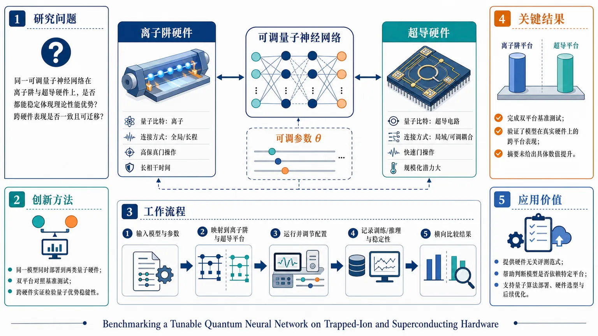
研究问题可调量子神经网络在离子阱与超导两类量子硬件上，是否都能稳定表现出理论上的性能优势？其性能是否具有跨硬件平台的一致性与可迁移性？创新方法将同一个可调量子神经网络同时部署到离子阱和超导量子硬件上，采用双平台对照基准测试框架，直接比较同一模型在不同硬件上的行为，用跨硬件实证方式检验“量子优势”是否真正稳健。工作流程输入同一可调量子神经网络模型及其参数设置；分别映射到离子阱与超导硬件；在两类平台上运行并调节模型配置；记录训练/推理表现与稳定性；横向比较两平台结果，评估可迁移性与理论优势兑现情况。关键结果完成了可调量子神经网络在离子阱和超导硬件上的双平台基准测试；核心发现是该研究验证了模型在真实硬件上的跨平台表现，但摘要未给出具体数值提升、优劣排序或明确的定量结论。应用价值为量子神经网络提供硬件无关的评测范式，帮助判断某一模型的效果是否依赖特定平台；可为量子算法部署、硬件选型和后续优化提供依据，推动量子机器学习从理论走向可验证的工程实践。核心概览
本文聚焦可调量子神经网络（tunable QNN）在离子阱与超导量子硬件上的基准测试，比较同一模型在不同平台上的表现，属于量子机器学习/量子硬件性能评估方向。
方法要点
- 在离子阱与超导两类量子硬件上实现同一可调量子神经网络模型。
- 采用基准测试（benchmarking）框架，比较模型跨平台行为。
- 通过调节模型相关设置，考察其在不同硬件上的可迁移性与稳定性。
- 重点评估该模型是否能稳定兑现理论优势。
关键结果
- 摘要明确指出：研究完成了双硬件平台上的对比基准测试。
- 研究目标是检验该模型能否在真实硬件上保持理论优势。
- 具体比较结果、优劣结论及数值表现，摘要未详述。
创新性判断
- 可能的新颖点在于：不是只验证单一量子硬件上的 QNN，而是跨两种主流量子硬件平台做同模型对照，更直接检验量子神经网络优势是否具有硬件无关的稳定性。
- 另一潜在创新是强调“可调”QNN，说明作者可能关注模型参数/结构可控性对性能的影响。
- 以上判断基于摘要，具体创新程度仍需全文确认。
-
05
📊 含图深析
📖 展开分析 + 配图
研究问题高熵电催化剂配方复杂、局域位点环境多变，如何利用微观位点信息，反推出可行的整体组成，并据此快速筛选候选材料？创新方法提出“分层位点到组成”机器学习框架：先抓取局域活性位点特征，再通过分层映射上推到材料整体组成层面，把微观结构信息直接转化为配方筛选依据。工作流程输入局域位点特征 → 分层机器学习建模 → 位点级信息映射到组成级描述 → 输出候选高熵电催化剂配方 → 用于筛选与设计。关键结果实现了从局域位点到材料组成的有效映射，能够支持高熵电催化剂候选配方筛选；摘要未给出具体数值提升，但明确展示了设计辅助能力。应用价值为多组元高熵电催化材料提供更系统的计算筛选路径，减少试错式配方搜索，加速催化剂设计与候选材料发现。核心概览
提出一种用于高熵电催化剂设计的分层位点到组成机器学习框架，属于材料信息学/电催化材料设计方向，核心是把局域位点信息映射到整体材料组成，用于筛选候选配方。
方法要点
- 采用分层（hierarchical）机器学习框架，组织位点与组成两级信息。
- 将局域位点特征作为输入，建立到整体组成描述的映射关系。
- 强调从微观位点尺度向材料配方尺度的上推筛选。
- 面向高熵电催化剂这一多组元体系进行设计辅助。
关键结果
- 摘要明确指出，该框架可用于高熵电催化剂设计。
- 其主要作用是实现从局域位点到材料组成的筛选与映射。
- 摘要未详述具体预测性能、对比基线、实验验证或定量提升。
创新性判断
- 可能的新颖点在于：不是仅做“组成→性能”预测，而是引入“位点→组成”的分层建模路径，更贴近高熵催化剂中复杂局域结构对整体配方的影响。
- 对同方向工作而言，这种把微观活性位信息显式上升到配方层面的思路，可能有助于更系统地做候选材料筛选。
- 但由于摘要过短，模型结构是否真正分层、位点信息如何定义、是否优于现有方法等，摘要未详述，创新性强弱仍需全文确认。
-
06
📊 含图深析
📖 展开分析 + 配图
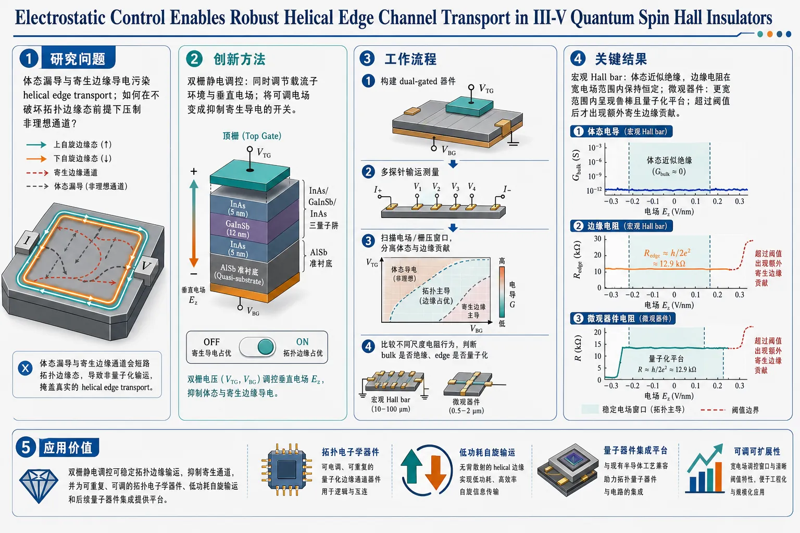
研究问题在 III-V 量子自旋霍尔绝缘体中，体态漏导和寄生边缘导电会污染 helical edge transport，导致边缘态难以被稳定、清晰地分离出来；核心问题是如何通过外部调控在不破坏拓扑边缘态的前提下，压制这些非理想通道。创新方法提出双栅静电调控策略，在 AlSb quasi-substrates 上的 InAs/GaInSb/InAs 三层量子阱中同时调节载流子环境与垂直电场；关键 Aha！点是把“可调电场”变成“抑制寄生导电的开关”，让边缘输运在宽电场窗口内保持稳定，并在超过阈值前维持量子化特征。工作流程首先构建 dual-gated 的 InAs/GaInSb/InAs 三层量子阱器件；随后通过多探针输运测量分别考察宏观 Hall bar 与微观器件；再扫描电场/栅压窗口，分离体态与边缘贡献；最终比较不同尺度下的电阻行为，判断 bulk 是否绝缘、edge 是否保持稳健量子化。关键结果宏观 Hall bar 中观察到体态近似绝缘，而边缘电阻在宽电场范围内保持恒定；微观器件中边缘电阻在更宽范围内表现出鲁棒且量子化的输运平台；只有当电场超过阈值后，才出现额外寄生边缘贡献，说明 helical edge channels 对静电扰动具有较强韧性。应用价值证明双栅静电调控可以作为 III-V 量子自旋霍尔器件的可靠工程手段，用于稳定拓扑边缘输运、抑制寄生通道，并为可重复、可调的拓扑电子学器件、低功耗自旋输运和后续量子器件集成提供平台。当前可见文本仅含标题、作者、摘要与元信息，未包含正文各章节，因此无法可靠完成“按原始章节标题逐章解析”，也无法提取正文中的样本量、图表数值、P 值和更多直接引述。下面先基于已提供文本做严格限定解析；若补充 PDF，可继续做完整章节级精读。
---
第一部分：核心概览 (Overview)
这项工作聚焦 III-V 量子自旋霍尔绝缘体中长期存在的两大障碍：体态寄生导电与边缘寄生导电。核心贡献是证明：在 dual-gated InAs/GaInSb/InAs trilayer quantum wells 中，通过静电调控可以同时抑制体态漏导并稳定 helical edge channels。在宏观 Hall bar 中，边缘电阻在宽电场范围保持常数；在微观器件中，边缘电阻在相当宽的场区间内保持鲁棒且量子化。这把“可调”与“可重复”的边缘输运真正连接起来，为 III-V 平台中的拓扑输运提供了更接近器件化的控制方案。
---
第二部分：结构化快速回顾
《Electrostatic Control Enables Robust Helical Edge Channel Transport in III-V Quantum Spin Hall Insulators》（None，）
背景：
InAs/GaInSb 基二维拓扑绝缘体中的 quantum spin Hall transport 容易被parasitic bulk and edge contributions干扰，导致边缘输运难以稳定呈现。
方法：
采用 dual-gated 的 InAs/GaInSb/InAs trilayer quantum wells，生长于 AlSb quasi-substrates；结合多探针分析比较宏观 Hall bar 与微观器件中的输运行为。
结果：
宏观器件中观察到insulating bulk与宽电场范围内constant edge resistance；微观器件中边缘电阻在广泛场区间内保持robust and quantized，仅在超过阈值后出现寄生边缘贡献。
讨论：
electrostatic control 显著压制了体态与边缘的非理想通道，说明 helical edge channels 对电场扰动具有内禀韧性，但这种韧性存在阈值边界。
局限：
摘要未给出样本量、具体电阻值、阈值数值、温度范围、磁场条件、P 值及器件几何参数，无法评估统计强度与普适边界。
结论：
dual gating 是抑制寄生导电、稳定 helical edge transport 的可靠策略，可作为 III-V 量子自旋霍尔系统中可调拓扑输运的平台。
---
第三部分：逐章节冷凝解析
由于未提供正文，原始章节标题不可见
只能对摘要中的每个关键判断做逐点冷凝解析。若提供 PDF，可严格按真实章节标题重做。
---
1. Problem definition: parasitic channels limit QSH transport
- 核心问题：III-V quantum spin Hall insulators 中的输运并不总是纯粹由边缘态主导，parasitic bulk and edge contributions 会显著污染信号，削弱拓扑输运的可解释性与可重复性。
- 关键表述：*"Quantum spin Hall transport in InAs/GaInSb-based two-dimensional topological insulators can be limited by parasitic bulk and edge contributions."*
- 学术含义：这里的重点不是“是否存在 QSH 效应”，而是“是否能把理想 helical edge transport 从背景电导里干净分离出来”。这直接决定器件能否用于后续量子输运与拓扑电子学。
- 硬核细节：摘要未提供具体寄生电导比例、温度窗或器件统计数，仅明确问题来源是bulk与edge两类寄生通道并存。
2. Electrostatic design: dual gating in trilayer quantum wells
- 解决路径：通过 electrostatic control 进行调节，器件结构为 dual-gated InAs/GaInSb/InAs trilayer quantum wells grown on AlSb quasi-substrates。
- 关键表述：*"We demonstrate that these limitations are effectively mitigated through electrostatic control in dual-gated InAs/GaInSb/InAs trilayer quantum wells grown on AlSb quasi-substrates."*
- 结构意义：
- InAs/GaInSb/InAs trilayer 暗示电子-空穴层耦合被精细设计。
- dual-gated 表示可独立调控载流子密度与电场环境。
- AlSb quasi-substrates 指向更适合 III-V 外延与应变/晶格匹配的支撑平台。
- 硬核细节：摘要未给出栅压范围、栅介电层厚度、迁移率或能隙大小，但明确“dual gating”是实现抑制寄生导电的核心手段。
3. Macroscopic regime: insulating bulk and stable edge resistance
- 测量场景：在宏观 Hall bars中，器件尺寸超过相干长度，输运不再是完全相位相干的单通道干涉问题，而更接近多段边缘与体态的组合输运。
- 关键表述：*"In macroscopic Hall bars exceeding the phase coherence length, a multi-probe analysis reveals an insulating bulk and a constant edge resistance over a wide electric-field range."*
- 结果内涵：
- multi-probe analysis 用于区分体态与边缘贡献。
- insulating bulk 说明体态被有效压低，至少在测量尺度上不再主导电导。
- constant edge resistance 表明边缘输运对电场变化具有明显稳定性。
- 硬核细节：
- 尺度判断以 phase coherence length 为分界。
- 摘要未给出边缘电阻具体数值、器件长度或探针配置数量，无法量化“constant”的误差范围。
4. Microscopic regime: quantized and resilient helical edge transport
- 测量场景：在微观器件中，边缘长度低于相干长度，输运进入更强的相干控制区。
- 关键表述：*"In microscopic devices with edge lengths below the phase coherence lengths, the edge resistance remains robust and quantized accross a broad field range."*
- 结果内涵：
- robust and quantized 是 QSH 边缘态最关键的证据链。
- 这表明边缘输运不仅稳定，而且接近理想量子化行为。
- “across a broad field range” 说明不是单点调参才成立，而是跨较宽静电窗口保持。
- 硬核细节：摘要未给出量子化对应的理论值、偏离百分比、温度与噪声水平；但“quantized”已明确表明边缘电阻满足离散化特征，而非普通欧姆导电。
5. Threshold physics: parasitic edge channels emerge only at extreme tuning
- 核心发现：电场并非简单地破坏拓扑边缘态，而是在一定范围内维持其稳定；只有超过阈值后，才出现额外的边缘寄生通道。
- 关键表述：*"Only beyond a threshold value, parasitic edge contributions emerge."*
- 学术含义：
- helical edge channels 对外场具有显著韧性。
- 失稳并非渐进、无门槛地发生，而是存在threshold。
- 这说明器件设计存在一个可操作窗口：在阈值内可获得理想边缘输运，越过阈值则被非理想通道污染。
- 硬核细节：摘要未给出阈值数值、对应栅压或电场单位，因此无法判断阈值是窄窗还是宽窗。
6. General implication: dual gating as a platform strategy
- 总体结论：双栅不是单纯的调参工具，而是能系统性压制寄生导电、稳定边缘输运的平台级方案。
- 关键表述：*"These results establish dual gating as a reliable strategy to suppress parasitic conduction while stabilizing helical edge transport, providing a versatile and reproducible platform for tunable topological transport in III-V quantum spin Hall systems."*
- 学术含义：
- reliable strategy 强调方法学稳健性。
- versatile and reproducible platform 指向器件可重复制备与可调控性。
- 该结论把“拓扑边缘态观测”推进到“可工程化控制”层面。
- 硬核细节：摘要中没有统计重复次数、不同器件间一致性分布、工艺良率等信息，无法进一步验证“reproducible”的严格程度。
---
第四部分：深度理解与语言支持
1. 术语解析
(1) Helical edge channels
指量子自旋霍尔绝缘体边界上的自旋-动量锁定一维通道。右行与左行电子携带相反自旋，理想情况下对非磁性无序具备强鲁棒性。这里的“helical”强调的是螺旋式自旋纹理，不是普通边缘导电。
(2) Parasitic bulk and edge contributions
“Parasitic”不是“次要”那么简单，而是指会污染主信号、导致误判拓扑输运来源的非理想电导。
- bulk contributions：体态漏导。
- edge contributions：非理想边缘导电，如杂散通道、并行边缘、残余金属性边界。
这类术语在拓扑输运里非常关键，因为很多“看起来像边缘态”的信号其实来自寄生通道。
(3) Phase coherence length
相干长度。当器件长度大于它时，电子相位信息在传播中丢失，输运更像经典叠加；小于它时，相位关系保留，干涉与量子化更容易显现。这里用它区分宏观与微观器件，决定分析框架完全不同。
(4) Multi-probe analysis
多探针分析。不是单一两端电导测量，而是通过多个电压/电流端口分离不同输运路径，尤其适合从复杂网络中辨认边缘与体态的分量。
(5) Dual gating
双栅调控。通常意味着上栅与下栅可独立施加电压，从而分别或联合调节化学势与垂直电场。这里的学术重点在于：它不仅调载流子浓度，还能调能带对齐、边缘电势与寄生通道开启条件。
2. 疑难查证与概念澄清
“Constant edge resistance” 与 “quantized” 是否矛盾？
不矛盾。
- constant 强调在某个调控区间内电阻变化很小。
- quantized 强调其数值接近离散理论值。
一个是稳定性描述，一个是绝对值性质描述。
所以完整含义是：边缘电阻既稳定，又接近期望的量子化平台。
“Exceeding the phase coherence length” 为什么重要？
因为这决定测到的是“局域边缘输运的平均行为”还是“完整相干的量子干涉行为”。
宏观 Hall bar 超过相干长度后，很多细节会被平均掉；若此时仍能观察到稳定的边缘电阻，说明边缘通道不是偶然共振，而是更稳健的输运机制。
“Quasi-substrates” 的含义为何敏感？
“quasi-substrates” 往往暗示并非理想标准衬底，而是通过缓冲层、虚拟衬底或近似晶格环境实现高质量外延。这里的学术价值在于：高质量 III-V 拓扑量子阱的可实现性往往受制于外延平台。
---
第五部分：创新评估与关联
1. 创新性判断
相较于近 2–5 年的相关工作，这项工作的新意主要集中在三点：
第一，问题从“观察边缘态”推进到“稳定边缘态”。
过往 III-V 量子自旋霍尔体系的关键瓶颈通常不是是否存在边缘输运，而是体态漏导、寄生边缘和器件间不一致使结果难以稳定复现。这里把重点放在electrostatic control 对寄生通道的系统压制上。
第二，双栅成为“可操作窗口”的工具，而非简单调参。
近年的工作常停留在电场调节能带位置、寻找某个边缘导电平台；这里进一步指出：在宽电场范围内可保持 constant / quantized edge resistance，并且只有超过阈值才失稳。这意味着可用性更接近器件工程标准。
第三，宏观与微观两个尺度同时被打通。
宏观 Hall bar 中能看到insulating bulk 与稳定边缘电阻，微观器件中能看到robust and quantized 行为。两种尺度同时成立，说明方法不是依赖某一特殊几何或偶然样品，而是更接近平台级规律。
2. 解决了前人未充分解决的问题
- 抑制体态寄生导电：让 bulk 近似绝缘。
- 抑制边缘寄生导电：避免把非理想边界误判为 helical edge。
- 提高电场调控的可重复性：不是只在窄参数窗出现效果。
- 建立可量化的平台：为后续研究自旋输运、拓扑器件和电场可调边缘态提供更稳定的基础。
3. 仍待进一步确认的问题
- 量子化偏差的具体数值。
- 样本量与器件间统计分布。
- 温度、磁场、偏压窗口。
- 阈值的精确物理来源：是能带重构、局域化增强、还是额外边缘亚带开启。
- 寄生 edge contribution 的微观机制。
---
如果需要，我可以在你补充 PDF/全文 后，继续按真实章节做：
1) 逐节标题解析，
2) 图表级证据提取，
3) 公式与参数推导，
4) 与近五年代表性文献的对照表。
-
07
📊 含图深析
📖 展开分析 + 配图
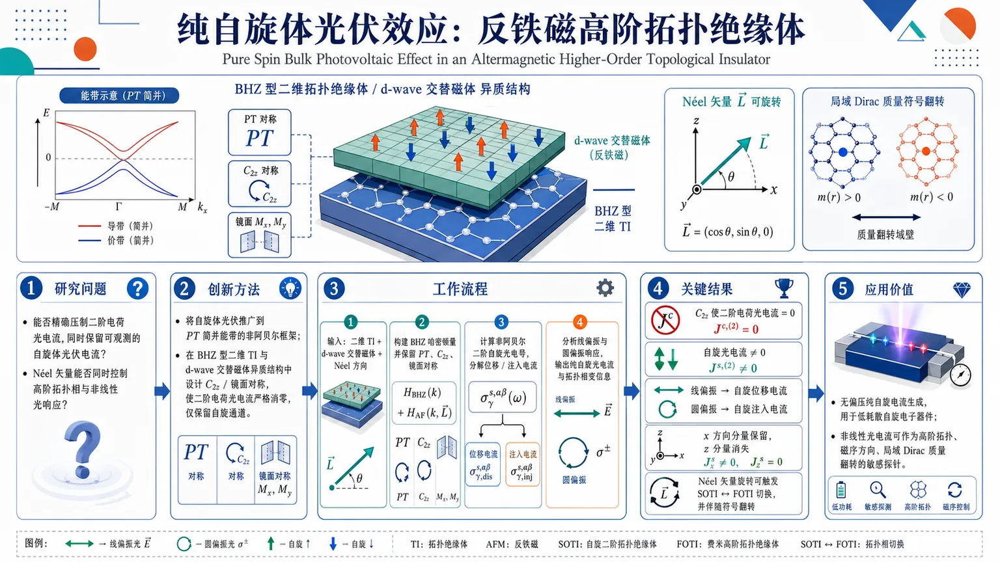
研究问题在 PT 对称的交替磁性高阶拓扑绝缘体中，能否通过对称性精确压制二阶电荷光电流，同时保留可观测的自旋体光伏电流？进一步地，Néel 矢量方向能否同时控制高阶拓扑相与非线性光响应类型？创新方法将自旋体光伏效应推广到 PT 简并能带的非阿贝尔框架，在 BHZ 型二维 TI 与 d-wave 交替磁体异质结构中进行对称性设计；利用 C2z 与镜面对称把所有二阶电荷光电流严格消零，只留下自旋通道，实现真正的“纯自旋”体光伏效应。工作流程输入二维 TI + d-wave 交替磁体异质结构与 Néel 矢量方向；构建 BHZ 型哈密顿量并保留 PT、C2z、镜面对称；在简并子空间中计算非阿贝尔二阶自旋光电导，分解为位移电流与注入电流；分别分析线偏振与圆偏振驱动下的自旋响应，输出纯自旋光电流及拓扑相变信息。关键结果C2z 使所有二阶电荷光电流严格为零，但自旋光电流仍非零，得到纯自旋光伏效应；线偏振光主要激发自旋位移电流，圆偏振光主要激发自旋注入电流；x 方向自旋响应被保留，而 z 方向分量全部消失；Néel 矢量旋转可触发 SOTI 与 FOTI 之间切换，并伴随响应符号翻转。应用价值为无偏压纯自旋电流生成提供理论方案，可用于低耗散自旋电子器件；同时把非线性光电流变成高阶拓扑与磁对称性的敏感探针，可用于识别 SOTI/FOTI 相变、磁序方向以及局域 Dirac 质量翻转。第一部分：核心概览
这篇工作把 PT 对称二维d-wave altermagnet / 2D topological insulator 异质结构中的 bulk photovoltaic effect 推广到非阿贝尔简并能带框架，证明在 C2z 与镜面对称共同约束下，电荷二阶光电流可被完全压制，而纯自旋光电流仍可存在。更重要的是，Néel 矢量方向同时控制拓扑相与非线性光响应：面内时形成 C4zT 保护的 SOTI，出平面时转为 FOTI 并出现电荷/自旋共存，因而把非线性自旋输运提升为辨识高阶拓扑与磁对称的敏感探针。
---
第二部分：结构化快速回顾
《Pure Spin Bulk Photovoltaic Effect in an Altermagnetic Higher-Order Topological Insulator》（None，）
背景：BPVE 是无偏压下由单色光驱动的二阶直流响应；在拓扑材料、磁性材料和 altermagnets 中，非线性光电流可编码能带几何、对称性与拓扑信息。
方法：建立一个 2D TI + d-wave AM 的 PT 对称异质结构，采用 BHZ 型哈密顿量，并把传统单带自旋 BPVE 推广到 PT 简并流形的非阿贝尔形式。
结果：在面内 Néel 矢量下，C2z 使所有二阶电荷光电流严格为零，但允许有限自旋光电流，形成纯自旋光伏效应；线偏振光激发自旋位移电流，圆偏振光激发自旋注入电流。
讨论：SOTI/FOTI 的切换由 Néel 矢量旋转触发，非线性自旋响应与局域 Dirac 质量符号翻转直接关联，因此可作为拓扑相变与磁对称的灵敏读出。
局限：理论基于理想化晶格模型与对称性约束；自旋流算符采用常规定义，且可见文本只展示到部分数值结果说明。
结论：PT 对称 altermagnetic 高阶拓扑异质结构是实现、调控并识别纯自旋光电流的有力平台。
---
第三部分：逐章节冷凝解析
Abstract
非阿贝尔自旋 BPVE 框架的建立
核心突破是把自旋 BPVE 从孤立非简并能带推广到 PT 简并流形。关键句是 *"we develop a non-Abelian formulation of the spin BPVE, extending the conventional theory from isolated nondegenerate bands to PT-degenerate manifolds."* 这意味着响应函数不再是标量带之间的普通求和，而要在每个双重简并子空间内处理 N×N 矩阵与 U(N) 协变导数。这里的实质不是形式装饰，而是为 PT 强制简并提供合法的二阶非线性输运理论。
Néel 矢量控制拓扑相与响应类型
Néel 矢量方向同时决定拓扑阶段与非线性光响应。摘要中直接给出 *"the orientation of the Néel vector controls both the topological phase and the character of the nonlinear optical response."* 面内时系统进入由 C4zT 保护的 SOTI；出平面时则转向 FOTI，并出现电荷与自旋光电流共存。这不是简单的参数微调，而是磁序方向引发的相变与响应重构。
纯自旋光伏效应由 C2z 严格筛除电荷响应
最关键的发现是 *"the system also retains C2z symmetry, which completely suppresses second-order charge photocurrents while allowing finite spin photocurrents."* 由于二维体系中空间指标只取 x/y，C2z 让所有二阶电荷张量分量变号，从而强制其为零；但自旋指标与空间指标变换不同，因此自旋二阶张量可保留非零项。于是 BPVE 变成 *"an intrinsically pure spin photovoltaic effect, generating a dc spin current without an accompanying charge current."*
LPL 与 CPL 分别驱动自旋位移电流和自旋注入电流
摘要明确区分两种光学通道：*"linearly polarized light drives a spin shift current, whereas circularly polarized light generates a spin injection current."* 前者是几何型、与弛豫时间无关；后者是动力学型、与散射寿命相关。两者在局域 Dirac 质量变号时都发生 *"a sign reversal whenever the local Dirac mass changes sign"*，把拓扑质量符号与可观测光电流方向直接绑定。
---
I Introduction
BPVE 作为无偏压二阶直流光电流机制
BPVE 被定义为 *"the generation of a second-order nonlinear dc current in a material illuminated by monochromatic light in the absence of an external bias."* 其物理意义是：不依赖传统 p-n 结内建电场，仅凭材料体相的对称性破缺即可产生直流光电流。与常规光伏不同，BPVE 是体相效应，尤其适合探测晶体对称性和量子几何。
Shift current 与 injection current 的微观差别
文中把二阶直流响应拆成两类：shift current 与 injection current。关键表述是 *"The shift current is an intrinsic, relaxation time-independent contribution..."*，而 *"The injection current is a ballistic response... and is therefore sensitive to scattering processes."* 前者反映光学跃迁时波包在实空间的位移，核心量是 shift vector；后者来自动量空间中不对称的光激发载流子分布，幅值随 τ 线性增大，清洁极限下更强。
对称性决定电荷 BPVE 的允许通道
对电荷光电流，反演对称破缺是必要条件；在 T 对称体系中允许的是线性位移电流和圆偏振注入电流，而在 PT 对称体系中允许的是圆偏振位移电流（gyration current）和线性注入电流。原文给出 *"the symmetry of the system determines which second-order photocurrent responses can be generated under linearly polarized light or circularly polarized light."* 这里的重点是：哪种偏振对应哪种张量分量，完全由时间反演/联合反演的约束决定。
镜面对称可进一步消灭电荷光电流
即使无反演，对称性仍可能更强地压制电荷 BPVE。原句是 *"additional crystalline symmetries, such as mirror symmetries, can further restrict the nonlinear conductivity tensor and may completely suppress the charge photocurrent."* 这为后文的“纯自旋”结论埋下逻辑前提：只要电荷通道被晶体对称性封死，而自旋张量仍有允许项，纯自旋光伏效应就会出现。
自旋光电流与电荷光电流的对偶分类
自旋光电流的分类与电荷光电流正好互补。文中写道 *"In PT-symmetric systems, linearly polarized light can give rise to a spin shift current, whereas circularly polarized light can generate a spin injection current."* 也就是说，在 PT 对称体系里，自旋响应的 LPL/CPL 分配与电荷体系不同，后文会出现“交换”式选择规则。
拓扑材料把 BPVE 提升为几何探针
BPVE 不只是能量转换机制，也是一种拓扑探针。文本强调 *"nonlinear optical responses are governed by geometric quantities such as Berry curvature, quantum metric, and related geometric tensors."* 这使 BPVE 与 Berry 曲率、量子度规、拓扑边界态直接挂钩。近年来在 Weyl 半金属、拓扑相变与 altermagnets 中的增强效应，构成了本工作进入高阶拓扑语境的背景。
研究动机指向高阶拓扑中的 BPVE
研究空白在于：*"it remains unclear how they are affected by the emergence of higher-order topology."* 更具体地说，尚不清楚 BPVE 是否能直接区分平庸相与二阶拓扑相。因此选择 d-wave AM + TI 异质结构，利用 PT 简并与高阶拓扑并存的设定，寻找“只剩自旋、不剩电荷”的极端响应。
方法论定位为 PT 简并系统的推广
文中明确指出先前理论只处理了 charge conductivity 和 spin conductivity 的非简并情形，而这里要处理 *"PT-symmetric degenerate bands"*。同时还指出同样形式可推广到 orbital currents，只需把自旋流算符替换成轨道流算符即可。这表明非阿贝尔框架是更一般的二阶输运模板，而不仅限于自旋。
---
II Model
BHZ 型双层异质结构与哈密顿量分解
系统由二维 TI 与 d-wave AM 组成，哈密顿量写成 *"H(k)=H₀(k)+J(k)"*。其中 H0 由 SOC 项和质量项组成，J 是 altermagnetic 交换场。关键物理分工很清楚：H0 提供第一类拓扑绝缘体背景，J 通过动量依赖的交换劈裂引入 altermagnetic 特征与高阶拓扑所需的边缘质量反转。
模型参数的物理含义
四个控制量分别是 A、t、B、Jₐ。文本明确说明：*“A and t determine the strengths of SOC and nearest-neighbor hopping, while B controls the bare Dirac mass.”* 也就是说，B 是驱动拓扑转变的主旋钮，A 和 t 定义低能带结构刚度，Jₐ 则决定 altermagnetic 交换强度与边缘开隙规模。
基底变换把模型映射到标准 BHZ 形式
系统先在特殊四组基底上写出，再通过 *"a unitary transformation U"* 映射到标准 BHZ 基底 (|Ep̆arrowångle, |Edownarrowångle, |Hp̆arrowångle, |Hdownarrowångle)。变换后得到
[
H₀=m(k)κ_zσ₀₊Asin kₓ κₓσ_z+Asin k_yκ_yσ₀,
]
[
J(k)=Jₐ₍ₖ₎κₓσₓ.
]
这一步的意义是把抽象的异质结构落回到熟悉的 BHZ 拓扑框架，便于讨论边缘态、角态和对称性。
有限 altermagnetic 交换把 FOTI 推向 SOTI
在 Jₐ₌₀ 时，(H₀) 是支持 helical edge states 的 FOTI。当 (Jₐ₌₀.8t) 且参数取 (B=-1.2t, A=2t, t=1) 时，开放边界下边缘模被开隙，只剩 *"four zero-energy corner states"*。图 2(b) 的物理图像是：altermagnetic 交换在 x/y 边上诱导相反符号的质量项，形成 Jackiw–Rebbi mass-domain walls，角点态于是被局域化出来。
拓扑相变由 B 参数控制并伴随高对称点闭隙
文本给出完整相图逻辑：当 (Bin[-8t,0]) 时处于非平庸区间；在 (Jₐ₌₀) 下，三个临界点分别是 (B=0) 于 (Γ(0,0))、(B=-4t) 于 (X(π,0)) 和 (Y(0,π))、(B=-8t) 于 (M(π,π))。每次闭隙都伴随带反转并改变拓扑不变量。尤其是 (B=-4t) 还改变了 helical edge states 的动量中心：从 (kₓ₌₀) 移到 (kₓ₌π)。
C4zT 保护 SOTI，T 破缺但 PT 保留
altermagnetic 项破坏 T，但保持 C4zT。文本写得很明确：*“The altermagnetic term breaks time-reversal symmetry ... However, it preserves the C4zT.”* 这使得边缘态虽然被开隙，但角态由 C4zT 保护而稳定存在。与此同时，PT 也保持，故全布里渊区 Bloch 态维持双重简并。
镜面对称与二重旋转约束晶体响应
模型还保留 Mx、My，以及由它们组合得到的 C2z = Mx My。对应关系分别是
*"mathsfMₓH(kₓ,ky)mathsfMₓ⁻¹=H(-kₓ,k_y)"*，
*"mathsfMyH(kₓ,ky)mathsfMy⁻¹=H(kₓ,-k_y)"*，
以及
*"C₄zTH(kₓ,k_y)(C₄zT)⁻¹=H(k_y,-kₓ₎"*。
这些对称性共同决定后续非线性张量的允许分量。
表 1 显示 H0 与 J 的对称性互补
表中关键信息是：H0 对 P、T、PT、C4z、C4zT、Mx、My、C2z 都是偶的；而 J(k) 对 T、P 是奇的，但对 PT、C4zT、Mx、My、C2z 是偶的。正因为这种互补结构，才会出现“体相保简并、边缘开隙、角点局域”的组合。
Néel 矢量作为拓扑和响应的旋钮
交换项可写成 *"(J(k)=-Jₐ₍ₒ̧s kₓ₋ₒ̧s k_y)(κₓøtimes(hat nₛḑotěcσ)))"*，说明 Néel 矢量方向不仅决定磁序朝向，也决定交换项在自旋空间的投影。后文正是借助这一自由度，把 SOTI、FOTI 与纯自旋/混合电荷-自旋响应串成一条连续轨迹。
---
III Second order Bulk Photovoltaic conductivity
C2z 直接禁掉所有二阶电荷光电流
这里最硬的对称性结论是：*"σμ;νłambdaxrightarrowC₂z-σμ;νłambda"*，因此 *"invariance of C2z requires σμ;νłambda=0."* 由于体系严格二维，(μ,ν,łambdainx,y)，二阶电荷张量在 C2z 下整体变号，只能全部为零。这就是“纯自旋”出现的根本原因。
PT 简并流形迫使采用非阿贝尔形式
自旋响应不能直接套用非简并带理论。文中指出 *"the conventional band-resolved spin BPVE formalism ... requires a non-Abelian generalization"*，因为每个 Bloch 态都构成双重简并子空间，能量分母中的 (ǎrepsilonₐb) 在简并带内会失去定义。于是需要把算符写成 N×N 矩阵，并把普通动量导数替换成 U(N) covariant derivatives。
Spin BPVE 分解为 shift 与 injection 两部分
二阶自旋光电流满足
[
Js,μ₍₂₎=sumνłₐₘbdₐσs,μ;νłambdaE^ν Ełambda*,
]
且
[
σs,μ;νłambda=σs,μ;νłambdaₛₕᵢfₜ+σs,μ;νłambdaᵢₙⱼ.
]
两部分物理来源不同：shift 是几何型、与弛豫时间无关；injection 是非平衡粒子数不对称导致的弹道响应，随 (τ) 增强并在清洁极限发散。
#### III.1 Spin Shift Conductivity
非阿贝尔自旋位移电导的核心公式
自旋位移电导被写成
[
σs,μ;νłambdaₛₕᵢfₜ=-fraciπ q³2int fracd^dk(2π)^dsumₐ≠ bfracfₐbǎrepsilonₐb²Ms,μ;νłambdaₐbδ(ǎrepsilonₐb-Ømega).
]
这里的重点是两层结构：
1) 外层是对所有不同简并流形 (a≠ b) 的积分；
2) 内层 (M) 是由 spin current operator、速度算符及其协变导数组合成的矩阵迹。
这正是把常规 shift current 推广到简并系统后的非阿贝尔版本。
(M) 的构成反映了协变几何
[
Ms,μ;νłambdaₐb=Tr[Ws,μ;νₐbv^łambdabₐ-Ws,μ;łambdabₐv^νₐb],
]
[
Ws,μ;νₐb=Ss,μ;νₐb-fracSs,μₐbΔ^νₐbǎrepsilonₐb.
]
其中 (Δ^νₐb=v^νₐₐ-v^νbb)。这一结构把自旋流矩阵元、带内速度差和带间跃迁同时纳入，保证在简并流形下的规范协变性。
为何使用常规自旋流算符
自旋流算符取 (hat Js,μ=frac12hat S^s,hat v^μ)。文中承认自旋在 SOC 下并不守恒：*“spin is generally not a conserved quantity, and therefore the definition of spin current is not unique.”* 但仍选择常规定义，因为一方面其非守恒对应的是可测物理效应，另一方面与守恒定义的数值差异通常只有 *"approximately 10-20%"*。这使理论既标准又可操作。
PT 使 shift 电导必为实数
在 PT 作用下，相关矩阵满足 *"Mₐbs,μ;νłambda is purely imaginary"*，而公式前有整体因子 (-i)，于是 *"the spin shift conductivity is purely real"*。这说明线偏振驱动的自旋位移电流没有虚部歧义，直接对应可观测的直流响应。
镜面对称给出精确选择规则
由 Mx、My 变换可导出张量奇偶性，记
[
n_α=δₛα+δμα+δνα+δłₐₘbdₐα.
]
若 (n_α) 为偶，则该分量消失；要非零，必须在 Mx 与 My 下同时满足奇偶要求。由此得到：
- (s=x) 时允许：(σx,y;yy)、(σx,y;xx)、(σx,x;yx)、(σx,x;xy)；
- (s=y) 时允许：(σy,x;xx)、(σy,x;yy)、(σy,y;xy)、(σy,y;yx)；
- (s=z) 时全部消失。
z 极化自旋响应整体为零
关键推理是：二维体系里空间指标只有 x/y，而 (s=z) 不贡献到 (nₓ,n_y)，于是 *"nₓ₊ₙ_y=3"*，不可能同时满足两种镜面对称的奇偶要求。结论是 *"all z-polarized spin-conductivity components vanish identically throughout the Brillouin zone."* 这是一条非常强的选择定则，不依赖数值细节。
Chiral symmetry 进一步保护 x 向纯自旋响应
系统还具有 *"Sₓ=κₓσ_y"* 这种手性对称。其结果是 *"chiral and mirror symmetries protect the existence of the pure spin photovoltaic response along x direction, while suppressing the components along the y and z directions."* 这说明 x 向纯自旋响应不是偶然数值现象，而是被多重晶体对称共同锁定的结果。
LPL 和 CPL 在自旋 shift 电导中的对应方式互换
把 shift 电导拆成实部和虚部：
[
σₛₕᵢfₜ=σ_L+iσ_C,
]
其中 实部对应线偏振光，虚部对应圆偏振光。但在这个 PT 简并系统中，由于自旋张量的对称性质，LPL/CPL 的作用与电荷 BPVE 呈现“互换”逻辑。原文指出 *"the symmetry constraints on spin photocurrents are complementary to those governing charge photocurrents, resulting in an interchange of the responses to LPL and CPL."*
#### III.2 Spin Injection Conductivity
自旋注入电导与弛豫时间成正比
自旋注入电导写成
[
σs,μ;νłambdaᵢₙⱼ=frac-π q³hbarγintfracd^dk(2π)^dsumₐ≠ bIs,μ;νłambdaₐbδ(hbarØmega-ǎrepsilonbₐ)fₐb,
]
其中 (τ=1/γ)。因此注入电流是典型的弹道型非平衡响应：弛豫越慢，累计越大。与 shift current 的几何本质不同，这一项直接受散射控制。
(I) 把自旋流不对称写成规范协变形式
[
Is,μ;νłambdaₐb=TrBig[(Ss,μₐₐA^łambdaₐb-A^łambdaₐbSs,μbb)A^νbₐBig],
]
其中 (A^łambdaₐb=vₐb/iǎrepsilonₐb) 是带间 Berry 连接。结构上它是“带内自旋流 × 带间连接”的非对易组合，描述的是光激发后不同简并流形上的自旋流失衡。
PT 使注入张量纯虚，因而只剩反对称部分
在 PT 对称下，(I) 变为纯虚，因此注入电导也纯虚。于是只有交换 (νłeftrightarrowłambda) 后的反对称部分保留。由于反对称张量只与 CPL 耦合，结论是 *"the spin injection response is intrinsically a CPL-driven effect."*
镜面对称只允许两个独立分量
镜面对称与手性对称把大部分分量全部删掉，最后只剩
[
σx,x;yxᵢₙⱼ,quad σx,x;xyᵢₙⱼ,
]
且满足
[
σx,x;yxᵢₙⱼ=-σx,x;xyᵢₙⱼ.
]
这说明圆偏振驱动的自旋注入电流在该体系中不仅有选择性，而且符号完全成对相反。
---
IV Numerical computation and Results
图 3 比较了拓扑相与平庸相的能带和 JDOS
可见部分只给出图 3 说明。能带沿 (Γ-X-M-Γ) 路径比较两种参数：拓扑相 (B=-1.2t)（红实线）与平庸相 (B=0.4t)（蓝虚线），两者的最小带隙都在 (Γ) 点。对应的 JDOS 在 (Ømega/t) 上出现明显峰值，来源被标注为 *"the logarithmic Van Hove singularities from the saddle points at the symmetry-equivalent corners X or Y"*。这说明后续二阶光学响应会在这些带间共振频率附近增强。
---
第四部分：深度理解与语言支持
1. PT-degenerate manifolds
不是简单的“能带简并”四个字，而是指每个 (k) 点上的 Bloch 态都因 PT 对称而形成一整套双重简并子空间。学术差别在于：普通简并可在局域点上处理，PT 简并要求整个流形内的基底选择具有规范自由度，因此响应理论必须是 matrix-valued 的。
2. Non-Abelian covariant derivative
“Non-Abelian”强调矩阵不对易。这里不是普通 (partialₖ) 对波函数求导，而是在简并子空间中把 Berry 连接一起纳入，避免不同基底选择导致的假信号。直观上，它是在“带空间”里做规范场论，而不是做标量微积分。
3. Shift current vs injection current
Shift current 是“几何位移”，不依赖寿命，常对应线偏振通道；injection current 是“动量分布不对称”，依赖散射寿命，常对应圆偏振通道。一个看波包在实空间挪了多少，另一个看光激发后有多少载流子被偏向某一方向加速。
4. Higher-order topological insulator
高阶拓扑不是“更强的普通拓扑”，而是边界层级更高：体和边都可以是绝缘的，保护态出现在角点。这里的角态来自不同边上的质量项符号相反，形成 Jackiw–Rebbi 域墙。这个概念与普通 FOTI 的 helical edge states 形成鲜明对比。
5. Pure spin photovoltaic effect
“纯自旋”不是“只有自旋参与”这么弱，而是直流自旋流存在、直流电荷流被对称性完全禁止。关键是自旋指标和空间指标在镜面、旋转、PT 下的变换规则不同，因此能把电荷通道彻底清零，却保留自旋通道。
---
第五部分：创新评估与关联
新颖性主要在四点：
- 把 spin BPVE 推广到 PT 简并流形的非阿贝尔理论
过去 2–5 年相关工作多处理非简并能带或普通 BPVE，这里直接把二阶自旋输运写成 U(2) 规范协变形式，解决了 PT 强制双重简并下响应函数失定义的问题。
- 构造出“电荷全禁、纯自旋保留”的对称性平台
不是一般地增强光电流，而是通过 C2z + mirrors + PT 精确删除所有二阶电荷张量，同时保留自旋张量，得到真正意义上的 pure spin photovoltaic effect。这比“电荷和自旋同时存在”的体系更极端，也更干净。
- 把高阶拓扑与非线性自旋光学直接绑定
过去 BPVE 更多用来探测 Weyl 节点、普通拓扑相变或反演破缺，这里把它推进到 SOTI：边缘开隙、角态出现、非线性自旋响应却增强。核心新意是把 角态拓扑转译为二阶自旋光电流选择规则。
- 用 Néel 矢量旋转实现“拓扑相 + 响应类型”的双重调控
同一模型中，Néel 矢量从面内转到出平面，就能让 SOTI → FOTI，并使响应从“纯自旋”走向“电荷+自旋共存”。这种一体化可调控性，在近年的 altermagnet 光电研究里相对少见。
解决的前人问题
- 解决了 PT 简并系统中自旋 BPVE 理论不完备的问题；
- 解决了 如何在拓扑材料中实现纯自旋而无电荷的 BPVE的问题；
- 解决了 高阶拓扑是否能通过非线性光响应被直接识别的问题。
更深层的贡献
把非线性光响应从“测量工具”提升为“对称性与拓扑的判别器”：电荷通道的消失、自旋通道的保留、LPL/CPL 的选择规则、以及随 Dirac 质量符号翻转的响应反号，全部指向同一个结论——非线性自旋输运是拓扑和磁对称的高灵敏指纹。
-
08
📊 含图深析
📖 展开分析 + 配图
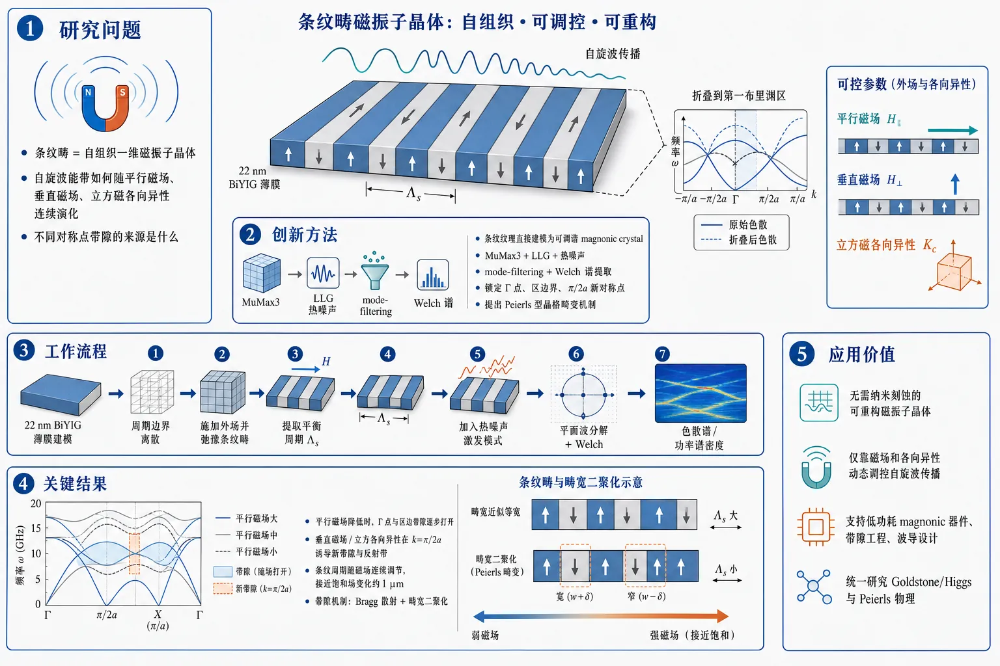
研究问题铁磁薄膜中的条纹畴作为自组织一维磁振子晶体时，自旋波能带如何随平行磁场、垂直磁场和立方磁各向异性连续演化；不同对称点上的带隙究竟由什么机制产生。创新方法把条纹纹理直接建模为可连续调谐的 magnonic crystal，结合 MuMax3 微磁模拟、LLG 方程加热噪声、mode-filtering 与 Welch 谱提取，系统锁定 Γ 点、布里渊区边界和 π/2a 新对称点的带隙来源，并提出由上下畴宽不对称触发的 Peierls 型晶格畸变机制。工作流程建立 22 nm BiYIG 薄膜模型并离散成周期边界网格；施加外场生成并弛豫条纹畴；通过总能量最小化提取平衡条纹周期 Λs；加入热噪声激发全部自旋波模式；对磁化涨落做平面波分解，结合 mode-filtering 和 Welch 估计得到色散谱与功率谱密度；比较不同磁场与各向异性下的折叠带、镜像带和带隙演化。关键结果平行磁场降低时，Goldstone 模与 Higgs 模分离明显增强，Γ 点和区边带隙逐步打开；垂直磁场或立方各向异性会在 k=π/2a 处诱导新带隙与反射带；条纹周期可随磁场连续调节，接近饱和场时变化量约 1 μm；所有非平庸带隙都可归因于域壁阵列的 Bragg 散射与畴宽二聚化。应用价值为无需纳米刻蚀的可重构磁振子晶体提供天然平台，可仅靠磁场和各向异性动态调控自旋波传播，支持低功耗 magnonic 器件、带隙工程与波导设计，同时为研究 Goldstone/Higgs 模式及 Peierls 物理提供统一的磁学模型。第一部分：核心概览 (Overview)
这篇研究把铁磁薄膜中的条纹畴视作可连续调谐的一维magnonic crystal，用微磁模拟系统揭示了自组织磁纹理中自旋波能带如何随外加磁场与立方磁各向异性演化。核心贡献在于：明确区分了Γ点、布里渊区边界以及π/2a 新对称点处的带隙起源，提出由“up/down”畴不对称引发的Peierls 型晶格畸变机制，并把条纹相的 Goldstone/Higgs 模式与磁振子晶体带结构直接对应起来。
---
第二部分：结构化快速回顾
《Magnonic crystalline properties of stripe textures in thin ferromagnetic films》（None，）
- 背景：条纹畴是自然形成的一维周期磁结构，周期可由磁场连续调节，适合研究无需纳米刻蚀的可重构magnonics。
- 方法：对 22 nm 厚 BiYIG 薄膜进行 MuMax3 微磁模拟，采用 LLG 方程 + 热噪声，并用mode-filtering + Welch 方法提取色散谱。
- 结果：在平行磁场下降低时，Goldstone/Higgs 两支的分离增强，Γ点和区边带隙演化明显；在垂直磁场或立方各向异性作用下，出现 k=π/2a 的新带隙与反射带。
- 讨论：带隙来自域壁阵列的 Bragg 散射；当上下畴宽不等时，晶格等效翻倍，产生Peierls-type distortion。
- 局限：全篇为数值模拟，未含实验样本量、统计检验或缺陷/无序效应；传播方向也主要限制在 x 方向。
- 结论：条纹纹理不仅是可调 magnonic crystal，还是研究Higgs/Goldstone 模式与Peierls 物理的统一平台。
---
第三部分：逐章节冷凝解析 (Section-by-Section Condensing)
I Introduction
条纹纹理是自组织的一维磁振子晶体
- 条纹畴在铁磁薄膜中由交换相互作用与偶极相互作用竞争自发形成，构成沿单一方向周期排列的磁结构。其核心表述是：*"Ordered stripe domains in ferromagnetic thin films form a natural one-dimensional crystal for propagating spin waves."*
- 与人工图案化晶体不同，这里的晶格常数不由光刻决定，而由磁能平衡决定：*"the characteristic length scales are not defined by lithography but arise from the competition between the different aforementioned magnetic interactions."*
- 这类结构可把domain walls、spin spirals、skyrmion lattices 等有序纹理转化为自组织周期势场，适合做reconfigurable magnonics。
已有工作证明纹理能重塑磁振子谱，但机制更复杂
- 过去 2–5 年中，纹理型 magnonic crystals 已显示出folded bands、mode hybridization、band gaps 等现象；相关表述包括：*"Several studies have shown that periodic magnetic textures can modify spin-wave spectra, leading to folded bands, mode hybridization, and, in some cases, band gaps."*
- 但纹理体系的难点在于：周期和内部结构会随外场、场强、材料参数变化，导致带折叠、杂化与带隙不再像纳米图案化晶体那样“几何固定”。对应原文：*"the band structures are less straightforward to understand than those of their nanopatterned counterparts."*
研究问题被定义为“条纹纹理中的能带可调性”
- 研究对象是有序条纹畴阵列中自旋波传播的数值研究，重点放在外场和立方磁各向异性如何改变带结构。
- 条纹相出现的条件被明确给出：当有效磁化 (Mₑff=Mₛ₋₂Kᵤ/μ₀Mₛ) 接近 0，或等价地 quality factor (Q=2Kᵤ/μ₀Mₛ²) 使体系接近/略高于条纹稳定区时，易形成条纹相。原文表述为：*"systems with Q ≲ 1 readily support stripe phases even in zero applied field."*
- 研究目的不是单纯展示条纹，而是把条纹当作可连续调谐的一维 magnonic crystal：*"their period, orientation, or even topology may be modified by magnetic fields"*
---
II Model and method
材料与几何：BiYIG 薄膜、22 nm 厚、近无限大平面
- 采用Bi-doped yttrium iron garnet (BiYIG) 薄膜模型，厚度 22 nm，面内尺寸 L×L≈16 μm × 16 μm。
- 网格为 1024 × 1024 × 1 finite-difference cells，并在 x、y 方向施加周期边界条件，用来模拟无限薄膜。
- 材料参数固定为：
- Exchange constant (A=3.6) pJ/m
- Saturation magnetization (Mₛ₌₁₁₆) kA/m
- Uniaxial anisotropy (Kᵤ₌₈₈₁₆) J/m³
- Cubic anisotropy (K_c=-464) J/m³
- Gilbert damping (α=0.001)
- 文中给出的物理定位是：BiYIG 适合 magnonics，因为可制备sub-100 nm 厚且保持低阻尼与强磁光响应：*"high-quality, sub-100 nm thick films can now be readily grown with perpendicular magnetic anisotropy while preserving low Gilbert damping and a strong magnetooptical response."*
动力学方程采用 LLG + 热噪声，温度取 1 K
- 时间演化由Landau-Lifshitz-Gilbert 方程描述，外加stochastic thermal field：*"The time evolution is described by the Landau-Lifshitz equation with Gilbert damping"*
- 热噪声满足高斯白噪声统计，协方差写成 (łangle hₜₕ,ᵢ(mathbf r,t)hₜₕ,ⱼ(mathbf r,t')ångle = 2α k_BT/(μ₀V)δᵢⱼδ(mathbf r-mathbf r')δ(t-t'))。
- 模拟温度固定为 T = 1 K，其作用只是“填充所有自旋波模式”：*"The role of the stochastic field is to populate all spin wave modes."*
条纹周期通过能量最小化逐场求解
- 先以名义宽度 L* = 16 μm 初始化不同条纹数的条纹图样，再在外场下弛豫。
- 通过“总微磁能—条纹数”曲线在极小值附近做quadratic fit，提取平衡条纹周期 (Łambdaₛ₍H₀₎)。
- 再设定系统尺寸 (L=NₛŁambdaₛ₍H₀₎)，使其尽量接近 16 μm。
- 关键结果：当 (μ₀H₀) 接近饱和场 (μ₀H₀,capprox 15.3) mT 时，(Łambdaₛ) 在全范围内变化接近 1 μm；这一量级变化是后续“可调磁振子晶体”的基础。
自旋波谱用 mode-filtering + Welch 谱估计提取
- 把磁化写成静态态加涨落：(mathbf m₀₍mathbf r,t)=mathbf m₀₍mathbf r)+δmathbf m(mathbf r,t))。
- 仅分析沿 x 传播的波：*"we restrict our analysis to waves propagating along this direction"*
- 对 (δ mₓ₍mathbf r,t)) 作平面波展开：(δ mₓ₌sumₖ cₖ₍ₜ₎ₑⁱkx)，直接得到复振幅 (cₖ₍ₜ₎)。
- 频谱采用 1 μs 记录时长、100 ns 半重叠 Hann 窗、Welch 平均法计算：*"We record a time trace over 1 μs, divide it into half-overlapping 100-ns Hann windows"*
- 这套流程的目的很明确：尽量少后处理地获得每个 (k) 的功率谱密度（PSD）。
---
III Role of applied fields
#### III.1 In-plane field H0
饱和态到条纹态的转变对应 DE 模式软化
- 在 (Hₚₑᵣₚ₌₀₎ 下，先忽略立方各向异性，只研究交换、偶极、Zeeman、单轴各向异性。
- 当 (μ₀H₀ > μ₀H_capprox 15.3) mT 时，体系为均匀磁化态；接近饱和时，Damon–Eshbach 色散出现明显backward-volume-like 特征，即 (kapprox0) 附近负斜率。
- 采用薄膜极限的 dipole-exchange 公式：
[
ømega²⁼⁽ømegaₖ₊γ₀NₖMₛ₎₍ømegaₖ₊γ₀₍₁₋Nₖ₎Mₛ₋γ₀H_K)
]
其中 (ømegaₖ₌γ₀H₀₊₍₂γ A/Mₛ₎ₖ²)，(H_K=2Kᵤ/μ₀Mₛ)。
- 随 (H₀) 降低，色散最低点不断加深；在饱和场处该最低频率降为 0，对应条纹周期的临界波矢：*"the critical wave vector (k_c=2π/Łambdaₛ)"*
- 这个软模就是Goldstone mode；条纹相中的第二条有限频支则被定义为Higgs-like mode。
条纹相内，低场会放大 Higgs/Goldstone 的分离，并增加带隙数目
- 随 (μ₀H₀) 从饱和场往下减小：
- Goldstone 与 Higgs 的频率间隔增大；
- Goldstone 软化点沿 (k) 轴出现得更频繁，直接反映 (Łambdaₛ) 变长；
- Higgs 支中的带隙数目显著增加，这是“magnonic crystalline nature”的核心证据。
- 这种演化在 IBZ 表示下更清楚。这里的晶格常数定义为
[
a=Łambdaₛ/2
]
说明晶体结构由domain walls 的周期阵列决定，而不是由 domain 本身决定。
- 高场时，Higgs 支只是普通的折叠带；随着场降低，(k=0) 处首先开隙，随后 (k=π/a) 区边也出现新隙。
- 在 (μ₀H₀₌₀) 时，最低 Higgs 带几乎变成dispersionless mode，高频支之间则由明显带隙隔开。
Γ点与区边的 PSD 显示出不同的临界场
- 在 (k=0) 处：
- 第一条 Higgs 带在约 11 mT 左右开隙；
- 该隙随场减小持续增宽；
- 第二条 Higgs 带也开隙，但对应场值不同。
- 在 (k=π/a) 处：
- Goldstone 模始终保持在 0 频；
- 第一条 Higgs 带在整个场范围保持无隙；
- 第二条 Higgs 带在 (μ₀H₀ łesssim 7) mT 后出现带隙。
- 这说明同一条纹结构的不同对称点，对外场的响应强烈非对称。
#### III.2 Perpendicular field H⊥
垂直场打破上下畴对称，诱发有效晶格翻倍
- 当 (Hₚₑᵣₚ>0) 时，“up”畴扩展、“down”畴收缩，以减少额外 Zeeman 能：*"it is energetically favorable for the “up” domain to expand while the “down” domain contracts"*
- 定义：
- (Łambda_d⁺)：(m_z>0) 的“up”畴宽度
- (Łambda_d⁻)：(m_z<0) 的“down”畴宽度
- (Łambda_d⁺⁺Łambda_d⁻⁼Łambdaₛ)
- 虽然 (Łambdaₛ) 对 (Hₚₑᵣₚ₎ 也有弱依赖，但主分析在 IBZ 中完成，因此对周期的微小变化是隐式吸收的。
新对称点 (k=π/2a) 出现，反映 Peierls 型二聚化
- 垂直场使色散在 (k=π/2a) 附近出现反射带和带隙，并且强度随 (Hₚₑᵣₚ₎ 增大而增强。
- 这等价于有效晶格常数翻倍：
[
a'=Łambdaₛ
]
因为此时 (Łambda_d⁺≠ Łambda_d⁻)，即“短—长”周期交替。
- 在 (k=0) 处，Goldstone 模被折叠到原点附近，低频两条几乎水平的线清楚可见；第一条 Higgs 带开隙，且伴随更高阶交叉。
- 在 (k=π/2a=π/Łambdaₛ) 这一新对称点，Goldstone 与 Higgs 轨道都能开隙。
- 这组结果把畴宽不对称直接连到晶格二聚化/Peierls distortion。
---
IV Role of cubic anisotropy
立方各向异性的作用等价于一个角度依赖的有效垂直场
- 立方各向异性只改变主轴相对条纹方向的取向，固定 (K_c) 不变。
- 定义 (θ) 为 [100] 轴投影与 x 轴的夹角。
- 对 (m_z=±1) 的均匀态，立方项的垂直有效场分量 (μ₀HKc,z) 基本与 (θ) 无关，约为 ±5.3 mT，相当于重新标定垂直各向异性。
- 对 (m_y=1) 时，(μ₀HKc,z) 呈 (sin(3θ)) 依赖，振幅约 2 mT，周期 120°；对 (mₓ₌₁) 时则为 (o̧s(3θ))。
- 这说明立方项对条纹中的动态响应具有明显的三重对称性。
在零场与有限场下，立方各向异性都能诱导镜像带与新带隙
- (θ=0ⁱ̧rc) 时，色散几乎复现纯单轴膜的零场结果。
- 当 (θ) 增至 15°、30°，次级镜像带逐渐出现，且关于 (k=π/2a) 反射；到 30° 最强，60° 再次消失。
- 全角度扫描满足 (π/3) 周期性，即 (θ) 每 60° 重复一次，说明决定因素是 (|HKc,z|)，不是符号。
- 在 (μ₀H₀₌₆) mT 时，这种效应显著增强：镜像支与原始谱在 (k=π/2a=π/Łambdaₛ) 处相交并开新隙。
- 最强带隙出现在最低 Higgs 支；同时 (k=0) 处原有隙会减小。
畴宽的不对称随角度变化，与带隙强弱一一对应
- (Łambda_d⁺/Łambdaₛ) 与 (Łambda_d⁻/Łambdaₛ) 在 (θ=0ⁱ̧rc) 和 (60ⁱ̧rc) 时相等，(θ=30ⁱ̧rc) 时不对称最大。
- 当 (60ⁱ̧rc<θ<120ⁱ̧rc) 时，(μ₀HKc,z) 号改变，导致“down”畴相对增大；但由于反演对称性，带结构变化与 (0ⁱ̧rcłeθłe60ⁱ̧rc) 等价。
- 外场越大，立方轴取向的影响越强，因为更强的 (H₀) 使磁化更倾向 y 方向，从而放大 (HKc,z) 的贡献。
---
V Discussion and concluding remarks
带隙本质上来自域壁阵列的 Bragg 散射
- 条纹纹理中的非平庸带结构来自周期势中的Bragg reflections：*"arise from Bragg reflections due to scattering off the regular array of domain walls."*
- 即使外场把磁化拉向膜面，带隙仍然存在，说明现象对强条纹与弱条纹都稳健。
- 最显著的带隙出现在无外场且忽略立方各向异性时的理想 180° Bloch walls 阵列。
“反射无关”Bloch 壁不再无隙，因为出现了非局域相互作用
- 经典 Winter 结论表明：Bloch wall 对自旋波是reflectionless potentials，对应一维中的 Pöschl–Teller potential。
- 因而在“只有交换 + 局域各向异性”时，波应无 Bragg 反射，色散应像自由粒子。
- 这里出现带隙并不矛盾，原因是加入了dipolar 或 Dzyaloshinskii–Moriya interactions (DMI) 这类非局域各向异性项后，Winter magnons 会产生有限散射。
- 结论被概括为：*"non-trivial band structures are inevitable for ferromagnetic stripe textures, since dipolar interactions stabilize these configurations in the first place."*
(k=π/2a) 的带隙对应 Peierls 型畸变
- 当 (Hₚₑᵣₚ₎ 或 (HKc,z) 使“up/down”畴宽不等时，域壁间距交替变化，形成类似一维晶体中的短—长键交替。
- 这相当于晶格二聚化，因此在 (k=±π/2a) 打开带隙。
- 这类现象把条纹磁纹理与Peierls-driven metal–insulator physics 类比起来，尽管对象是磁振子而非电子。
- 因而，条纹纹理不仅可用于研究Higgs/Goldstone 模式，也可作为探索Peierls 机制的磁振子平台。
---
第四部分：深度理解与语言支持 (Understanding & Nuance)
术语解析
- Magnonic crystal
- 含义：对磁振子传播呈周期调制的结构，相当于光子晶体之于光。
- 细微差别：这里不是人工刻蚀晶格，而是自组织磁纹理本身形成晶格，属于“self-organized magnonic crystal”。
- Goldstone mode
- 含义：由连续对称性自发破缺产生的无质量模。
- 语境中：条纹相沿 x 的平移对称性被破缺，因此出现随 (k) 软化到 0 的模式。
- Higgs-like mode
- 含义：对应有序参数幅度涨落的有限频模式。
- 语境中：条纹畴的“幅值”变化，而不是相位/位置变化；与 Goldstone 模形成互补。
- Brillouin-zone folding
- 含义：当周期势存在时，自由色散按新晶格常数折叠进缩小的布里渊区。
- 差别：folding 本身不等于开隙；只有在不同支发生耦合、对称性被破缺时才会产生真正的 band gap。
- Peierls-type distortion
- 含义：一维系统通过交替长短间距来降低能量，伴随带隙打开。
- 语境中：不是原子链，而是域壁链发生“畴宽二聚化”，所以在 (k=π/2a) 产生新隙。
疑难查证：为什么“反射无关”的 Bloch 壁还会开带隙？
- 关键点在于 Winter 的 reflectionless potential 只适用于交换相互作用 + 局域各向异性主导的理想一维模型。
- 真实条纹膜里，dipolar interaction 是非局域的，会把波在不同域壁之间重新散射；如果再加入 DMI 或垂直/立方各向异性引起的畴宽不对称，原本的“透明势”就被破坏。
- 因此，出现带隙不是对 Winter 理论的否定，而是说明：真实条纹纹理不是单一局域势，而是含有非局域耦合和对称性破缺的周期介质。
- 直观上可类比为：单个域壁可能近似“透明”，但域壁阵列不透明；周期散射一旦满足 Bragg 条件，带隙就不可避免。
---
第五部分：创新评估与关联 (Synthesis & Novelty)
创新性判断
- 相比近 2–5 年的纹理型 magnonics 工作，这篇研究的增量不在“又发现了纹理能改色散”，而在于把条纹纹理的带隙来源拆成了三个层次，并逐一锁定：
- 外加平行场控制 (Łambdaₛ) 与 Goldstone/Higgs 分裂；
- 垂直场打破上下畴对称，诱发 (k=π/2a) 的Peierls 型二聚化；
- 立方各向异性通过 (sin(3θ))/(o̧s(3θ)) 的三重对称性，提供与垂直场类似但可旋转调控的带隙工程手段。
- 过去工作多停留在“纹理导致 folded bands / hybridization / band gaps”的现象层面，这里进一步给出：
- 条纹周期的连续可调性；
- Γ点、X点、新对称点的系统比较；
- Higgs/Goldstone 模式与 magnonic bands 的对应关系；
- 由畴宽不对称触发的有效晶格翻倍。
解决了前人未充分解决的问题
- 问题 1：纹理型 magnonic crystal 的晶格常数不是固定几何量，如何理解其能带？
解决方式：把条纹周期 ( Łambdaₛ₍H₀₎) 明确纳入IBZ 框架，用 field-dependent (a=Łambdaₛ/2) 追踪带结构。
- 问题 2：为什么某些条纹体系在区边出现带隙，某些却近似无隙？
解决方式：指出非局域偶极相互作用与DMI/各向异性破坏理想反射无关条件，因此真实条纹几乎必然开隙。
- 问题 3：(k=π/2a) 的新带隙从何而来？
解决方式：给出Peierls-type distortion 解释，把“上下畴宽不等”与“晶格二聚化”严格对应起来。
与领域地位的关系
- 这篇工作把条纹畴从“磁畴形貌问题”推进为“可重构一维磁振子晶体”问题。
- 在磁振子晶体研究中，它提供的是一种无纳米加工、仅靠磁场和各向异性即可调控的天然晶格平台。
- 更重要的是，它把相变临界模态、能带工程与Peierls 物理并置到同一个体系中，形成了较少见的跨概念统一框架。
-
09
📊 含图深析
📖 展开分析 + 配图
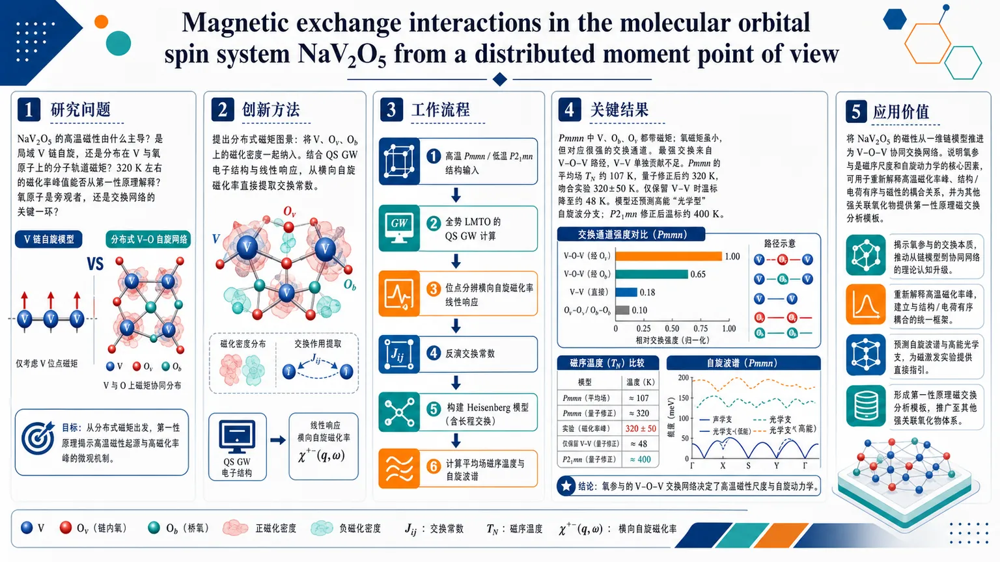
研究问题NaV2O5 的高温磁性到底由什么主导：是传统的局域 V 链自旋，还是分布在 V 与氧原子上的分子轨道磁矩？特别是，320 K 左右的磁化率峰值能否从第一性原理出发解释，并判断氧原子是否只是“旁观者”还是交换网络的关键一环。创新方法提出“分布式磁矩”图景：不把自旋局限在单个 V 上，而是把 V、Oᵥ、O_b 上的磁化密度一起纳入。结合 QS GW 电子结构与线性响应，直接从横向自旋磁化率提取交换常数，Aha 的点是氧上虽只有很小的诱导磁矩，却能产生与甚至强于 V–V 的磁交换。工作流程输入高温 Pmmn 和低温 P2₁ₘₙ 晶体结构 → 用全势 LMTO 的 QS GW 计算准粒子能带 → 通过位点分辨的横向自旋磁化率做线性响应 → 反演得到各原子位点及其间的交换常数 → 构建经典 Heisenberg 模型 → 计算平均场磁序温度与自旋波谱，输出磁性尺度和激发分支。关键结果在 Pmmn 相中，V、O_b、Oᵥ 都带有磁矩，但氧的磁矩虽小却对应很强的交换通道；最强交换出现在氧参与的 V–O–V 路径上，V–V 单独贡献不足。Pmmn 的平均场 T_N 约 107 K，乘以量子修正后约 320 K，和实验磁化率峰值 320±50 K 高度接近；若只保留 V–V 交换，温标会降到约 48 K。模型还预测了高能“光学型”自旋波分支；低温 P2₁ₘₙ 的修正后温标约 400 K。应用价值把 NaV2O5 的磁性理解从简单的一维链模型推进为 V–O–V 协同交换网络，说明氧参与是决定磁序尺度和自旋动力学的核心因素。该结果可用于重新解释高温磁化率峰、结构/电荷有序与磁性的耦合关系，并为其他强关联氧化物的第一性原理磁交换分析提供方法模板。第一部分：核心概览（Overview）
这篇工作用 QS GW 电子结构结合 线性响应，把 NaV2O5 的磁性从“局域链模型”改写为“分布式磁矩”图景：V、Oᵥ、O_b 都参与交换作用，且氧上的交换甚至强于 V–V 交换。由此得到的 Heisenberg 参数能把高温磁化率峰值对应的尺度推到约 320 K，接近实验 Tₘₐₓ ≈ 320 ± 50 K，同时预测出高能“光学型”自旋波分支。领域地位上，它把 NaV2O5 的磁性理解从单纯 ladder/chain 模型推进到包含氧介导交换的第一性原理定量框架。
---
第二部分：结构化快速回顾
《Magnetic exchange interactions in the molecular orbital spin system NaV2O5 from a distributed moment point of view》（None，）
- 背景：NaV2O5 长期围绕 34 K 结构/电荷有序转变、320 K 磁化率峰值以及“自旋-Peierls vs. 反铁磁/电荷无序”争议展开。高温 Pmmn 相中所有 V 等价，单电子被认为形成分布在两 V 及邻近氧上的 S=1/2 分子轨道磁矩。
- 方法：采用 QS GW 能带与 Kotani–van Schilfgaarde 线性响应，从原子位点的横向自旋磁化率矩阵提取交换常数，直接构建经典 Heisenberg 模型；同时处理 Pmmn 与低温 P2₁mn 两种结构。
- 结果：Oᵥ 与 O_b 上的诱导磁矩虽仅 0.042–0.065 μB，其交换常数却与甚至超过 V–V 交换；Pmmn 中 T_N^MF=107 K，加入 (S+1)/S=3 后约 320 K；P2₁mn 中修正后约 400 K。
- 讨论：高温磁化率峰值可解释为 Néel 尺度；V 之间的单纯一维最近邻链模型不足，必须纳入氧与跨桥交换；分布式磁矩图景解释了为何高温相可视为随机电荷有序结构的时间平均。
- 局限：平均场会高估临界温度；经典 Heisenberg 与极小氧磁矩对应的自旋波只作示意；低温 34 K 结构下的实验中子散射结果不适用这里的高温模型。
- 结论：NaV2O5 的磁交换本质上是 V–O–V 网络协同作用，而非孤立链；氧交换对磁序尺度和自旋动力学至关重要。
---
第三部分：逐章节冷凝解析（Section-by-Section Condensing）
Abstract
分子轨道型磁性来源明确
NaV2O5 的磁性来源于 V2O5 的窄分裂导带经 Na 电子掺杂后半充满，并形成 Mott-insulating splitting。原文直述：*"The magnetism in NaV 2 O 5 results from doping of the narrow split-off conduction band of V 2 O 5 , which becomes half-filled and leads to a Mott-insulating splitting of spin resolved bands"*。核心含义是：磁性并非来自传统意义上每个 V 上独立局域的单电子，而是由分子轨道式电子态触发的自旋分裂。
高温相是均匀分布磁矩，而非单一局域自旋
在 Pmmn 结构中，S=1/2 自旋“均分”在两个 V 上，并伴随氧上的诱导磁矩。原文关键词是：*"the spin of this S = 1 / 2 system is equally shared between two vanadium atoms, residing in a molecular orbital type state"*。这直接奠定“distributed moment”而非“localized rung spin”的分析框架。
氧交换与 V–V 交换同量级甚至更强
最关键结论之一是：*"the exchange interactions between the small magnetic moments induced on the vanadyl and bridge oxygen sites [are] of the same order of magnitude and even larger than the exchange interactions between vanadium atoms"*。这意味着氧不是旁观者，而是主导磁交换网络的一部分。
高能光学型自旋波出现
从抽出的经典 Heisenberg 哈密顿量得到的自旋波谱包含高能“光学型”集体激发。原文表述为：*"contains unusual optic spin wave type collective excitations of high energy"*。这种现象与小磁矩位点可独立进动有关。
---
Introduction
历史争议从自旋-Peierls到电荷有序
1996 年 Isobe 和 Ueda 将 α′-NaV2O5 视作 34 K 的 spin-Peierls 候选体。随后围绕 320 K 磁化率峰值、链模型、以及低温电荷分离展开大量讨论。原文明确写出：*"Since the claim by Isobe and Ueda [1] in 1996 that α′-NaV2O5 undergoes a spin-Peierls transition at 34 K, it became the subject of intense study."*
早期链模型给出错误简化
最初基于 V4+/V5+ 交替链的解释，把磁性视作 b 方向上孤立反铁磁链，并用 Bonner-Fisher 模拟估计最近邻交换约 −24 meV。这套图景后来被更高质量衍射结果推翻。
Pmmn 高温结构推翻“局域电荷分离”假设
1998 年 XRD 结果表明室温结构是 Pmmn，所有 V 通过镜面对称等价，名义价态 4.5+。原文指出：*"This appeared to invalidate the spin-Peierls claim as the chains were now no longer isolated and also made the existence of a band gap puzzling."*
这一步把问题从“链上单自旋”改成“为何等价 V 网络仍有能隙与磁化率峰值”。
分子轨道与电荷有序重解释
后来共识转向：Na 电子占据位于 rung 上、以桥氧 O_b 为中心的分子轨道。34 K 转变则被重解释为更复杂的 zigzag charge disproportionation，并有 2×2×4 超胞、NMR 与异常 X 射线散射支持。原文给出：*"the electron donated by Na resides in a molecular type orbital on the rungs of the ladder centered on the bridge oxygen O b between two equal V."*
高温磁性仍未被充分解释
最重要的未解问题被明确点出：*"much less attention has been devoted to understand the magnetic behavior above the charge disproportionation temperature"*，尤其是 320 ± 50 K 的磁化率峰值是否就是 Néel 温度，以及能否被第一性原理定量复现。
---
Results and discussion
#### Distributed moment picture and electronic structure
局域自旋被拆成多个原子位点磁矩
研究策略是把磁矩“装进”单个原子位点，包括氧上的小诱导磁矩。原文明确：*"we take a distributed moment approach in terms of the spin density lumped into individual atomic magnetic sites, including the small induced moments on the oxygen atoms."*
这与把电子完全锁定在 ladder rung 上的传统图景不同。
QS GW + 线性响应是交换参数来源
交换常数并非拟合得出，而是由 QS GW 能带上的横向自旋磁化率线性响应直接导出。原文说：*"we use the linear response approach of Kotani and van Schilfgaarde"*，并强调它“不先验假设交换范围”。
方法学上，这一点非常关键：交换范围、长程项、氧介导项都可自然出现。
从横向磁化率到 Heisenberg 哈密顿量
线性响应通过位点分辨的 D⁺⁻ₐb(q,ω)，在静态近似 ω=0 下映射到经典 Heisenberg 模型。原文表述：*"Inverting this matrix and taking the static approximation ω = 0 was shown in [21] to map the problem to a classical Heisenberg type model"*。
这使得交换常数可直接做反傅里叶变换，不必先拟合自旋波。
#### Magnetic moments and exchange constants in Pmmn
V 与 O 上的磁矩大小差一个量级
Pmmn 相中的磁矩分别为：V = 0.424 μB, O_b = 0.065 μB, Oᵥ = 0.042 μB, O_c 与 Na 可忽略。原文写得很清楚：*"The magnetic moment on the V atoms is 0.424 μ B, 0.065 μ B on O b and 0.042 μ B on O v and negligible on O c and Na."*
氧磁矩虽小，却不能忽略，因为它们参与交换强度排序。
最强交换不是 V–V，而是氧参与的键
Pmmn 的表 1 中，关键交换常数为：
- Jᵥ = −7.67 meV
- J_b = −4.61 meV
- J₁ = −2.01 meV
- J₂ = 2.11 meV
- J₃ = −0.70 meV
- J₄ = −0.74 meV
- J₅ = 0.17 meV
- J₆ = 0.11 meV
- J₇ = −0.78 meV
原文总结为：*"the largest negative interaction is between O v and V, followed by that of the O b, J 1 between V along the chain and J 2 between V across a bridge."*
这说明 Oᵥ–V 和 O_b–V 的交换在能量尺度上压过 V–V。
长程交换虽小但并非全无
J₅、J₆、J₇ 尺度较小，但仍被保留，因为它们跨单胞并影响 a 方向色散。原文指出：*"J 5 and J 6 are indicated here only because they also occur between neighboring cells in the a direction and can thus give rise to spin wave dispersion in that direction."*
说明模型不是简单最近邻截断，而是基于计算自然给出所有可观项。
#### Mean-field ordering temperature
Pmmn 的平均场 TN 为 107 K，主导项足以解释其量级
由矩阵 Jₐb(q) 在 q=0 的最大本征值 jₘₐₓ 得到
[
T_NMF = frac23k_B jₘₐₓ
]
Pmmn 结构的数值是 107 K。仅保留主要项时，
[
jₘₐₓapprox frac12łeft[-2J₁₊J₂₊sqrt(-2J₁₊J₂₎²⁺⁸J_b²⁺⁴Jᵥ²i̊ght]
]
得到 105 K，已经接近完整结果。
原文还给出：只保留 V–V 交换时，结果降到 48 K。这直接证明氧交换对温度尺度的贡献不可替代。
量子修正把 107 K 推到约 320 K
对整体 S=1/2 系统乘以 (S+1)/S = 3，得到约 320 K。原文写道：*"our estimated mean field temperature for the Pmmn structure is 320 K, which is remarkably close to the experimental Tₘₐₓ"*。
这使 磁化率峰值 有了一个近似 Néel 温度的解释。
Pmmn 与 P2₁mn 的物理差别
低温 P2₁mn 中发生 charge disproportionation，磁矩变为：
- V4+ = 0.683 μB
- V5+ = 0.174 μB
- Oᵥ（绑在 V4+ 上）= 0.064 μB
- 绑在 V5+ 上的 Oᵥ 几乎为零
- O_b = 0.048 μB
原文指出：*"The ratio of the small to large moment is only 0.25."*
因此电荷不均并非完全极化，而是部分分离。
P2₁mn 的结构畸变带有极化子特征
O 被推离 V4+，Na 被吸向并偏离镜面对称面。原文说：*"This indicates that the charge disproportionation is polaronic in origin and related to the displacement of the atoms around it."*
这说明电荷有序并非纯电子效应，而是电子-晶格耦合参与的 polaronic 失稳。
P2₁mn 的 TN 估计更高
P2₁mn 中 Jᵥ 几乎翻倍，修正后的平均场温度约 400 K。原文写：*"The T_N^MF corrected by the same factor 3 now becomes 400K."*
同时指出该结构总能量更低，且是早期实验报告的结构。
高温 Pmmn 可视为时间平均态
由于 P2₁mn 现在不被视作真正高温基态，高温 XRD 的 Pmmn 可以看成随机涨落电荷分离结构的时间平均。原文给出：*"One may think of the XRD determined Pmmn structure as representing the time average of a randomly fluctuating charge disproportionated structure."*
这在概念上把“无电荷不均的平均结构”与“瞬时局域不均”统一起来。
#### Spin-wave spectrum and physical interpretation
最低支呈反铁磁线性色散
自旋波色散图中最低支在 q=0 附近呈线性反铁磁特征，在 Y 点达到约 34 meV。原文写：*"The lowest branch here shows the expected linear behavior near q = 0 of an antiferromagnet. It has its maximum value of about 34 meV at Y."*
双链耦合导致第二支
由于一个单胞内存在两个弱耦合的双锯齿链，最低支上方还有第二支。原文说明：*"Because there are two weakly interacting double zigzag chains per unit cell, we see a second mode just above it."*
这反映晶体层内并非单一链，而是多链耦合系统。
ΓX 方向色散来自链间和层间耦合
原文指出：*"a weak dispersion along Γ X resulting from smaller exchange interactions between the chains and between the layers."*
说明模型中的小交换虽不主导能量尺度，却决定方向性传播。
ΓZ 方向出现虚频表明参考态不稳定
沿 ΓZ 的本征值变成虚数，意味着假设的层间平行排列不是基态。原文明确：*"the spin wave eigenvalue becomes imaginary which implies that the reference system is unstable towards spin waves propagating in this direction."*
这指向层间更可能是反铁磁排列。
百 meV 以上的高能支是“光学型”磁振子
在 100 meV 以上出现两支高度色散的模，来自同一 rung 上两 V 自旋的反对称进动。原文写：*"These correspond to antisymmetric spin eigenvector components on the two V across a rung."*
这类模与小磁矩位点的独立进动相关，被类比为 optical phonon modes。
氧位点的独立进动对应近乎平坦高能模
原文说：*"the other almost dispersion-less branches correspond to spin wave excitations in which the small moment O v and O b precess independently"*。
物理上，小磁矩越小，约束越弱，对应模的能量越高。
经典自旋波理论的适用性有限
原文直接警告：*"We caution that the applicability of the classical Heisenberg model with such extremely small magnetic moments is somewhat uncertain."*
因此这些高能模更适合作为模型结果示意，而不是已被实验确认的真实谱线。
实验中子散射只覆盖低温结构
现有 inelastic neutron scattering 只在 34 K 以下的低温相测量过，观测到两支不同自旋隙分支；这里的高温 Pmmn 自旋波不适用于那一结构。原文明确排除了直接比较。
---
Methods
全势 LMTO 与 Questaal 实现
计算基于 Full-Potential Linearized Muffin-Tin Orbital 方法，使用 Questaal 套件。原文写：*"The calculations were performed using the Full-Potential Linearized Muffin-Tin Orbital basis set as implemented in the Questaal-suite of codes"*。
方法链条包括 DFT、QS GW 和线性响应自旋磁化率。
标准收敛参数，未展开额外超参数扫描
原文只说：*"The calculations used standard settings of the convergence parameters which were well tested."*
这意味着文中没有给出新的数值收敛基准、样本量或统计显著性检验；全篇是确定性第一性原理计算，不是统计实验研究。
---
Acknowledgments
资助与算力来源
项目受 DOE-BES DE-SC0008933 资助，算力来自 Case Western Reserve HPC、Ohio Supercomputer Center、NERSC。
这部分不包含学术结论，但说明计算强度较高，依赖大规模并行资源。
---
第四部分：深度理解与语言支持（Understanding & Nuance）
1) 术语解析
Distributed moment approach
不是把一个 S=1/2 电子固定在某个 V 原子上，而是把磁化密度分配到多个原子位点上，尤其包含氧上的诱导磁矩。语境里它强调“磁矩分布”而不是“电子局域”。
Quasiparticle self-consistent GW (QS GW)
比普通 DFT 更接近准粒子能带，且通过自洽优化 G 与 W 提高能隙和磁性描述的可靠性。这里的关键不是“更高级”这么简单，而是它给出的带结构足够可信，能作为交换积分提取的输入。
Rigid spin approximation
假设每个位点磁矩的模长基本固定，只考虑方向变化。对大磁矩系统常可用，但这里氧磁矩非常小，因此它的适用性被作者自己明确保留意见。
Mean-field critical temperature
这是忽略涨落后的估计温度，通常偏高。这里用它并不是宣称精确临界温度，而是用来比较交换网络给出的能量尺度是否与实验磁化率峰值一致。
Optical spin waves
不是光学本身，而是类比光学声子：多个子晶格中反相或相对进动的高能模。与 acoustic 分支相比，它们通常更高频、更平坦。
2) 疑难查证：几个容易混淆的概念
为什么氧磁矩比 V 小得多，交换反而更强？
交换强度不只由磁矩大小决定，还由轨道重叠、杂化路径和超交换几何决定。Oᵥ 和 O_b 位于关键的 V–O–V 通道上，哪怕诱导磁矩只有 0.042–0.065 μB，仍可能通过更强的交换路径把体系的磁序尺度显著抬高。
为什么 320 K 的磁化率峰值可能是 Néel 温度？
一维反铁磁链也会出现宽磁化率峰，但这里的交换网络不是纯 1D：链间、跨桥、氧介导、层间耦合都存在。平均场把这些耦合加总后，温标自然接近 300 K。因此峰值可以理解为三维关联开始增强的温度，而不必是简单链模型中的短程最大值。
为什么高温结构是 Pmmn，却又能“看作”随机电荷有序平均？
XRD 看的是时间平均结构。若局域上存在快速涨落的电荷不均和晶格畸变，平均后仍可能恢复镜面对称的 Pmmn。这正是“平均结构对称、瞬时局域低对称”的典型情形。
为什么虚频代表不稳定？
在自旋波方程中，本征频率平方若为负，就对应虚频，说明围绕所选参考态的小幅扰动会降低能量，系统倾向于朝别的磁序重排。这里沿 ΓZ 的虚频意味着层间平行自旋排列不是最低能配置。
---
第五部分：创新评估与关联（Synthesis & Novelty）
1) 创新性判断
相对近年相关工作的新颖性主要有三点：
- 从局域 ladder 模型转向分布式磁矩模型
近年关于 NaV2O5 的研究多围绕 quarter-filled ladder, t–J–V, DMFT, 或电荷有序超结构展开，核心关注点仍是 V 轨道与 rung 电子。这里直接把 Oᵥ、O_b 纳入磁交换网络，且证明它们的交换强度与 V–V 同量级甚至更强，显著推进了磁性机制的层次。
- 用 QS GW 线性响应定量抽取交换常数
不是从实验拟合一个模型，而是从第一性原理能带和横向自旋磁化率直接得到 J。这比仅凭经验超交换路径或半经验 Heisenberg 拟合更有约束力，也更能处理长程、跨层、跨桥项。
- 把 320 K 磁化率峰值与氧介导交换建立定量联系
过去常把 320 K 峰值解释为一维链短程有序或其他间接效应。这里给出的关键进展是：只要去掉 O–V 交换，平均场温度就从 107 K 降到 48 K，乘上量子修正后才接近实验峰值。也就是说，氧交换不是修饰项，而是决定性项。
2) 解决了什么前人没解决的问题
- 为什么高温相仍有强磁关联，而不是简单的一维链行为：答案落在 V–O–V 网络而非孤立链。
- 为什么等价 V 的 Pmmn 结构仍能承载磁序尺度：因为磁矩分布在多个原子位点，氧上的诱导磁矩参与了交换。
- 为什么磁化率峰值能接近 320 K：因为主要交换项加总后本身就在百 K 量级，量子修正后自然落到实验附近。
- 为什么自旋波会出现高能“光学型”分支：因为分布式磁矩允许氧和两侧 V 的相对独立进动，这是局域单自旋模型里看不到的。
如果需要，还可以继续把 Table 1 的每个交换常数按“几何路径—符号—物理含义”逐项展开，或者把 Fig. 1 / Fig. 2 的图意单独拆成可视化解读。
-
10
📖 展开分析 + 配图
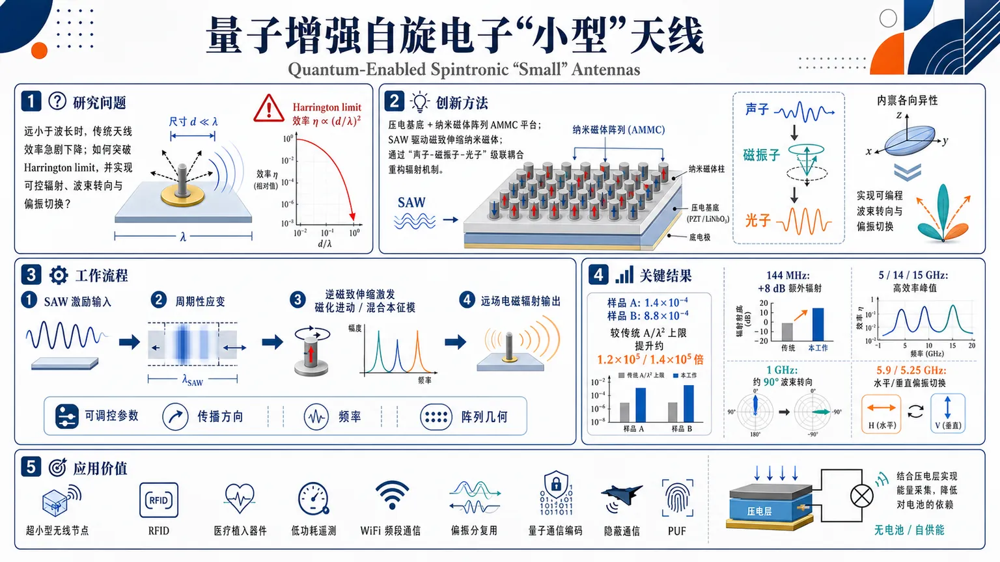
研究问题如何在远小于波长的尺寸下，突破传统天线受 Harrington limit 约束的效率崩塌问题，同时实现可控辐射、波束转向与偏振切换，支撑嵌入式和隐蔽无线通信。创新方法提出基于压电基底上的纳米磁体阵列 AMMC 平台，用表面声波（SAW）驱动磁致伸缩纳米磁体，借助“声子-磁振子-光子”级联耦合，把原本受经典电磁尺度限制的小天线，改造成可编程的亚波长辐射器。关键 Aha！在于用声学波长和本征混合模重构辐射机制，并利用内部各向异性实现单元级波束转向与偏振切换。工作流程输入为压电基底上的 SAW 激励；SAW 在纳米磁体中产生周期性应变；应变通过逆磁致伸缩激发磁化进动，形成混合磁动力学本征模；这些模态把声子能量转成磁振子，再辐射为远场电磁波；通过改变 SAW 传播方向、频率和阵列几何，控制辐射效率、主瓣方向与输出偏振。关键结果在极端亚波长条件下，样品 A 和 B 的估计辐射效率分别达到 1.4×10⁻⁴ 和 8.8×10⁻⁴，较传统 A/λ² 上限提升约 1.2×10⁵ 和 1.4×10⁵ 倍；144 MHz 下观测到真实样品相对对照样品 8 dB 的额外辐射；在 5、14、15 GHz 出现高效率峰值；1 GHz 时可随 SAW 方向旋转实现约 90° 波束转向；5.9 GHz 和 5.25 GHz 条件下可在水平/垂直偏振间切换。应用价值为超小型无线节点、RFID、医疗植入器件、低功耗遥测、WiFi 频段通信、偏振分复用、量子通信相关编码、隐蔽通信和物理不可克隆函数（PUF）提供了可集成的天线方案，并有望结合压电层实现能量采集，降低对电池的依赖。第一部分：核心概览
这篇论文把超小天线从经典电磁学的效率瓶颈中解放出来，系统串联了磁弹性纳米磁体阵列、声表面波驱动的磁振子—声子—光子耦合、波束转向与偏振切换四种能力。核心贡献不在于单一器件，而在于把长期受 Harrington limit 约束的亚波长辐射问题，转化为可由非经典耦合机制重构的器件设计范式。其学术地位更接近一篇面向领域方向的综合性前沿综述与路线图。
---
第二部分：结构化快速回顾
《Quantum-Enabled Spintronic “Small” Antennas》（None，）
- 背景：经典天线在尺寸远小于波长时辐射效率急剧下降，长期受 Harrington limit 约束。
- 方法：利用磁致伸缩纳米磁体阵列与表面声波（SAW）耦合，构建 AMMC 平台，实现声子—磁振子—光子的级联转换。
- 结果：在极端亚波长条件下，实测效率可达 1.4×10⁻⁴ 与 8.8×10⁻⁴，并可在特定频率实现波束转向与偏振切换。
- 讨论：效率峰值由固有模（intrinsic modes）主导，强烈依赖纳米磁体几何、阵列方向与 SAW 传播方向。
- 局限：性能高度频率选择性；部分频点仅表现为 SAW 吸收增强而非辐射增强；波束旋转会带来图样畸变。
- 结论：纳米磁体—压电耦合平台可实现远小于波长的高效辐射，并支持嵌入式通信、偏振复用与隐蔽通信。
---
第三部分：逐章节冷凝解析
Abstract
- 经典小天线的根本困境
- 经典天线的微型化会导致辐射效率陡降，关键原因是尺寸缩小后无法有效形成电偶极辐射。
- 原文关键句：*"Miniaturizing them, however, is challenging since the radiation efficiencies of all traditional antennas... plummet when their dimensions are shrunk to tiny fractions of the radiated wavelength."*
- 学术含义：亚波长尺寸并不只是“缩小体积”，而是直接削弱可辐射模式的形成能力。
- 非经典原理带来的突破
- 新一代天线依赖非经典原理，可绕开传统效率崩塌问题。
- 原文关键句：*"a new generation of antennas whose operations are underpinned by non-classical principles have been demonstrated"*
- 这类器件的学术价值在于把“尺寸—效率”之间的经典负相关关系部分解耦。
- 系统级功能扩展
- 除高效辐射外，还可实现单元级波束转向，不再依赖大型相控阵。
- 原文关键句：*"beam steering... can now be accomplished with a single element much smaller than the wavelength."*
- 进一步的功能包括stealth attributes，服务于安全与隐蔽通信。
- 原文关键句：*"Some of these antennas also have stealth attributes for secure and covert communication"*
- 技术指向：从“能发射”升级到“能定向、能编码、能隐蔽”。
---
1 Introduction
- 辐射效率的基本定义
- 辐射效率定义为 η = Rrad / (Rrad + Rloss)。
- 原文关键句：*"The radiation efficiency of an antenna is given by the expression η = Rᵣₐd/(Rᵣₐd + Rₗₒₛₛ₎"*
- 物理含义：效率由辐射电阻与损耗电阻的竞争决定；微型化时通常是 Rloss 主导。
- 短偶极子的标度律
- 短偶极子的辐射电阻满足 Rrad = 20π²(A/λ)² ohms。
- 原文关键句：*"The radiation resistance of a short dipole antenna... is given by Rᵣₐd = 20π²(A/λ)² ohms"*
- 直接推论：辐射效率随 (A/λ)² 下降，尺寸越小越差。
- Harrington limit 的核心约束
- 经典亚波长天线的最大辐射效率被限制在约 (A/λ)²。
- 原文关键句：*"came to be known as the 'Harrington limit' ... limited to ∼(A/λ)²"*
- 学术地位：这是传统电磁天线微型化几十年难以突破的核心上限。
- 直观机制：电偶极缺失
- 经典辐射依赖涨落电荷或电偶极子；尺寸太小时无法形成稳定电偶极。
- 原文关键句：*"electric dipoles cannot form in the antenna"*
- 若采用磁性材料，虽可形成磁偶极，但辐射效率更低。
- 原文关键句：*"magnetic dipoles can also form in them, which radiate but much less effectively than fluctuating electric dipoles."*
- 这一步解释了为什么“更小”在经典框架里几乎等于“更差”。
---
2 Classical magneto-elastic antennas
- 用声学共振替代电磁共振
- 早期突破路径是磁弹性（acoustic）天线：在压电基底上沉积体磁致伸缩磁体，再激发 SAW 或体声波。
- 原文关键句：*"a bulk magnetostrictive magnet is deposited on a piezoelectric substrate and a surface or bulk acoustic wave is launched in the piezoelectric."*
- 声波引起周期性应变，经逆磁致伸缩 / Villari effect 诱导磁化进动并辐射电磁波。
- 原文关键句：*"causes its magnetization to precess... because of the inverse magnetostriction (or Villari) effect."*
- 为何能超越经典上限
- 这里的关键不是电磁波长，而是声学波长。
- 原文关键句：*"That will make the wavelength λ in the Harrington expression become the acoustic (or SAW) wavelength"*
- 因声学波长通常比电磁波长小约 5 个数量级，上限可抬升约 10 个数量级。
- 但实际效率仍受eddy current losses 与 Gilbert damping 严重限制。
- 原文关键句：*"severely reduce the radiation efficiency, such as eddy current losses... and Gilbert damping"*
- 结论：理论上可行，工程上仍显著受损。
#### 2.1 Replacing bulk magnets with nanomagnets
- 纳米磁体阵列抑制涡流
- 将体磁体替换为二维周期 nanomagnets，可显著减少涡流环路。
- 原文关键句：*"replacing bulk magnets with a two-dimensional periodic array of 'nanomagnets' which suppress the formation of eddy current loops"*
- 直接效果是降低 Rloss，提升 η。
- 样品 A / B 的具体结构
- Sample A：55,000 个纳米磁体，面积 5×10⁻⁹ m²。
- Sample B：275,000 个纳米磁体，面积 2.5×10⁻⁸ m²。
- 原文关键句：*"Sample A ... had 55,000 nanomagnets and an area of 5 × 10⁻⁹ m² while sample B had 275,000 nanomagnets and an area of 2.5 × 10⁻⁸ m²."*
- 纳米磁体几何：椭圆形，长轴约 360 nm，短轴约 330 nm，厚度 6 nm；间距沿长轴约 65 nm，沿短轴约 42 nm。
- 原文关键句：*"major axis ∼360 nm, minor axis ∼330 nm... thickness ... 6 nm."*
- 实验测量设置
- 电磁辐射用偶极天线在远场接收，探测器置于距样品 超过四个电磁波长 处，以确保测得远场辐射。
- 原文关键句：*"placed more than four electromagnetic wavelengths away from the sample to ensure that only the far-field radiation is measured."*
- 频率选择为 144 MHz 与 900 MHz，源于探测器校准频段。
- 原文关键句：*"The detector was calibrated for 144 MHz and 900 MHz"*
- 144 MHz 有效、900 MHz 无效
- 在 144 MHz 下能检测到辐射，在 900 MHz 下无法分辨。
- 原文关键句：*"Electromagnetic emission was detected when the exciting SAW frequency was 144 MHz, but not when it was 900 MHz."*
- 解释指向高频下磁化无法跟上快速变化应变，导致大角度进动受阻。
- 原文关键句：*"the magnetization could not keep pace with the rapidly varying strain generated by the high-frequency SAW."*
- 真实样品与对照样品的 8 dB 差异
- 为排除电极、线缆等杂散辐射，使用real sample 与 control sample 成对比较。
- 原文关键句：*"one contained nanomagnets and the other did not. The former was termed the 'real sample' and the latter the 'control sample'."*
- 在 144 MHz 输入下，真实样品接收功率 -73 dBm，对照样品 -81 dBm，差值 8 dB，约 6.3 倍。
- 原文关键句：*"The received power at the detector is -73 dbm... -81 dbm... This difference of 8 db strongly suggests that the nanomagnets are radiating."*
- 但精确辐射功率仍无法由该测量准确确定。
- 原文关键句：*"although the exact radiated power cannot be determined accurately from this measurement."*
- 效率突破 Harrington 约束
- Sample A 的估计效率：1.4×10⁻⁴；Sample B：8.8×10⁻⁴。
- 原文关键句：*"the estimated radiation efficiency in sample A was 1.4 × 10⁻⁴ and in sample B it was 8.8 × 10⁻⁴"*
- 这分别比 A/λEM² 高 1.2×10⁵ 与 1.4×10⁵ 倍。
- 原文关键句：*"These exceeded the A/λ_EM² ratio by 1.2 × 10⁵ and 1.4 × 10⁵"*
- 结论层级：不仅超越，而且是五个数量级以上地打破传统上限。
- 应用场景指向嵌入式与医疗器件
- 适用频段与 RFID、访问控制、报警、医疗植入、遥测等场景高度相关。
- 原文关键句：*"One possible application area... RFID"*
- 医疗植入的关键需求是低频、长波长、小尺寸、低侵入。
- 原文关键句：*"medically implanted devices... do not prefer high frequencies above 1 GHz to avoid tissue damage."*
- 同时压电层还可能承担能量采集角色，减少电池依赖。
- 原文关键句：*"the piezoelectric component may serve a dual role... harvesting energy... eliminate the need for a battery."*
---
3 Antennas based on tripartite phonon-magnon-photon coupling in artificial multiferroic magnonic crystals (AMMC)
- AMMC 的本质
- 人工多铁性磁振子晶体（AMMC） 是二维纳米磁体周期阵列叠加在压电基底上的结构。
- 原文关键句：*"We call the two-dimensional periodic array of nanomagnets on a piezoelectric substrate an 'artificial multiferroic magnonic crystal' (AMMC)."*
- “magnonic crystal” 来自周期性边界条件；“multiferroic” 来自磁致伸缩相与压电相的耦合。
- 原文关键句：*"the periodicity... mimics a two-dimensional 'crystal'... the coupling between the magnetostrictive phase and the piezoelectric phase mimics a multiferroic."*
- 混合磁动力学模的来源
- SAW 激发的是hybrid magneto-dynamical modes，并非纯磁振子。
- 原文关键句：*"These are not pure spin waves but rather hybrid magneto-dynamical modes"*
- 其本质是phonon-magnon coupling，同时具有声学波与自旋波的混合特征。
- 原文关键句：*"they are born of coupling between a phonon in the SAW and a magnon in the spin wave."*
- 固有模由几何与传播方向共同决定
- 固有模频率与尺寸、形状、材料、几何、阵列 pitch 有关。
- 原文关键句：*"The size, shape, material and geometry of the nanomagnets, as well as the array pitch, determine the so-called 'intrinsic' hybrid magneto-dynamical modes."*
- 若阵列缺乏旋转对称性，SAW 传播方向也改变固有模。
- 原文关键句：*"If the array does not have rotational symmetry... the direction of SAW propagation also affects the intrinsic modes."*
- 共振激发与非共振激发
- 当 SAW 频率匹配固有模频率时，发生resonant excitation，功率转移高效。
- 原文关键句：*"When the SAW frequency matches an intrinsic mode frequency, the excitation becomes 'resonant' and very efficient transfer of power... can take place."*
- 不匹配时则为non-resonant，可能只激发外显频率模式（extrinsic mode）和少数接近的固有模。
- 原文关键句：*"the SAW will excite a mode at its own frequency (which we call an extrinsic mode)"*
- 这解释了为何某些频点辐射强，某些频点弱。
- 实验中的高效率频点
- 参考 [23] 的阵列在 5、14、15 GHz 处出现异常高效率，且依赖 SAW 传播方向。
- 原文关键句：*"exceptionally high radiation efficiencies at three distinct SAW frequencies of 5, 14 and 15 GHz"*
- Table 1 的代表数值：
- 5 GHz：Orientation 1 = 0.356，Orientation 2 = 0.116
- 14 GHz：Orientation 1 = 0.544
- 15 GHz：Orientation 1 = 0.149，Orientation 2 = 0.121
- 对应的 A/λEM² 仅在 10⁻⁶–10⁻⁴ 量级。
- 原文关键句：*"The A/λ_EM² ratio is also plotted at each frequency"*
- S11 谱支持能量耦合增强
- S11 在 5、14、30、35 GHz 附近出现明显凹陷，表示输入 SAW 能量被强吸收。
- 原文关键句：*"pronounced dips or troughs at 5, 14, 30 and 35 GHz"*
- 但高辐射效率只在 5 和 14 GHz，说明“吸收 SAW”与“高效辐射电磁波”不是同一件事。
- 原文关键句：*"While the former coupling may be efficient at 30 and 35 GHz ... the latter may not be."*
- 这里分离出了两个步骤：phonon→magnon 与 magnon→photon。
- 5 GHz 的工程吸引力
- 5 GHz 落在常见 WiFi 频段，应用吸引力明显。
- 原文关键句：*"As a happy coincidence, the frequency of 5 GHz happens to be a popular WiFi frequency"*
#### 3.1 More on phonon-magnon coupling in artificial multiferroic magnonic crystals
- SAW 充当等效时变磁场
- SAW 通过磁弹耦合在纳米磁体中形成等效time-varying magnetic field。
- 原文关键句：*"one can think of the SAW... as producing an effective time-varying magnetic field within a magnetostrictive nanomagnet"*
- 该场方向沿 SAW 传播方向，幅值通常为几十 Oe。
- 原文关键句：*"Typically, the amplitude is a few tens of Oersted"*
- 模拟与方向依赖性
- 使用 Landau-Lifshitz-Gilbert equations 计算磁化振荡波形、功率谱与相位图。
- 原文关键句：*"calculated ... using the Landau-Lifshitz-Gilbert equations."*
- 由于有效场方向与阵列各向异性，磁化波形和模式结构对 SAW 传播方向敏感。
- 原文关键句：*"all quantities depend on the direction of SAW propagation"*
- 频谱中出现额外分量
- FFT 后除驱动频率外，还出现非整数倍频率分量。
- 原文关键句：*"there are also other frequencies that are not necessarily integral multiples of the excitation frequency."*
- 这些被解释为被off-resonantly excited 的固有模。
- 原文关键句：*"These are probably the frequencies of the intrinsic modes that are off-resonantly excited by the SAW."*
- 辐射频谱也随方向而变
- 改变 SAW 传播方向，不仅改磁化频谱，也改电磁辐射频谱。
- 原文关键句：*"the spectrum of the emitted electromagnetic radiation also depend on the direction of SAW propagation"*
- 这是一种相当少见的“源结构—方向—谱线”联动效应。
- 原文关键句：*"This is an unusual and intriguing property."*
- 该方向的研究价值
- AMMC 中的 phonon-magnon 耦合已是活跃领域，但无线通信应用相对缺乏。
- 原文关键句：*"its application has been lacking. The antenna application is one of the first, if not the first."*
- 这使天线成为一个新的应用入口，而不仅仅是磁振子学内部问题。
---
4 Beam steering with directed surface acoustic wave in the extreme sub-wavelength AMMC antenna
- 传统波束转向需要相控阵
- 经典 beam steering 依赖多个大于波长的天线单元组成的phased array。
- 原文关键句：*"Beam steering... usually requires a phased array comprising multiple antenna elements, each much larger than the wavelength."*
- 这类系统体积大，难以植入。
- 亚波长单元为何也能转向
- 这里的关键是internal anisotropy：虽然器件接近“点源”，但辐射并非各向同性。
- 原文关键句：*"the AMMC antenna does not radiate omnidirectionally or isotropically... because of its 'internal anisotropy'"*
- 各向异性来源于磁化振荡对 SAW 方向的依赖。
- 原文关键句：*"accruing from the dependence of the magnetization oscillation waveforms on the direction of SAW propagation"*
- 方向改变会改变辐射图样
- 方向性辐射图样在平面内可通过改变 SAW 传播方向而改变。
- 原文关键句：*"the radiation pattern in any plane... also depends on the direction of SAW propagation"*
- 这相当于用单个极小单元实现了“图样可编程”。
- 实验图样测量条件
- 远场图样在消声室中用polarization-sensitive horn antenna 测量。
- 原文关键句：*"These far-field patterns were measured in an anechoic chamber with a polarization-sensitive horn antenna"*
- 记录了 horizontal 与 vertical 两种正交偏振。
- 具体转向现象
- 在 1 GHz，将 SAW 传播方向旋转 90°，水平偏振图样大约旋转 90°，垂直偏振图样约 300° 反向旋转。
- 原文关键句：*"at 1 GHz, if we rotate the direction of SAW propagation by 90°, the radiation pattern also rotates..."*
- 高频下图样更接近各向同性，因此转向效果减弱。
- 原文关键句：*"at higher frequencies, the radiation pattern becomes more isotropic and hence this feature gets subdued"*
- 连续扫描的工程设想
- 通过多相时钟顺序激活周围相邻电极对，可使主瓣在整个平面中连续扫描 360°。
- 原文关键句：*"sequentially activating different adjacent (SAW-launching) electrode pairs... steer the main lobe... continuously over an entire plane"*
- 主要缺点是图样会失真。
- 原文关键句：*"the radiation pattern does not remain intact and gets somewhat distorted during the rotation"*
- 结论：这是单单元版本的 AESA-like 功能。
---
5 Polarization switching ultra-sub-wavelength stealthy antenna for polarization division multiplexing and secure or covert communication
- 偏振切换的通信动机
- 偏振编码可用于quantum communication、polarization encoded secret sharing 和 polarization division multiplexing。
- 原文关键句：*"encoding information in the polarization... offers some advantages... polarization division multiplexing"*
- 对无线数据传输而言，0/1 可映射为近似水平/垂直偏振。
- 原文关键句：*"switch the polarization of the emitted wave from approximately horizontal ... to approximately vertical"*
- 微波偏振开关的稀缺性
- 现有微波偏振开关通常比波长大得多，难以芯片集成。
- 原文关键句：*"Microwave polarization switches... are rare since they are usually much larger than the microwave wavelength"*
- 光频更易集成，但微波段实现更困难，因此这里的亚波长化意义更大。
- AMMC 兼具多重功能
- 同一平台既能突破 Harrington limit，又能转向，还能作为polarization switch。
- 原文关键句：*"it can also work as a microwave polarization switch antenna that is orders of magnitude smaller than the operating wavelength."*
- 应用面包括quantum computing、remote sensing、超紧凑偏振复用发射机、secure communication、stealthy antennas 与 PUF。
- 原文关键句：*"multiple applications, such as in quantum computing... secure or covert communication... physical unclonable functions (PUF)"*
- 偏振角的定义
- 设水平分量为 h，垂直分量为 v，偏振角定义为 θ = tan⁻¹(v/h)。
- 原文关键句：*"We define a polarization angle θ... as θ = tan⁻¹(v/h)."*
- θ = 0 表示纯水平偏振，θ = π/2 表示纯垂直偏振。
- 5.9 GHz 的二值偏振编码
- 在 5.9 GHz、70° 方向，orientation 2 下 θ≈π/2，orientation 1 下 θ≈0。
- 原文关键句：*"at 5.9 GHz frequency and in the 70° direction, θ is nearly π/2 ... for orientation 2 and nearly 0 ... for orientation 1."*
- 因而同一接收方向可通过切换 SAW 传播方向，在水平/垂直两种偏振间切换，完成 bit 0/1 编码。
- 原文关键句：*"we can change the polarization ... from nearly horizontal to nearly vertical and thus transmit bits 0 and 1"*
- 这类通信只在特定频率 + 特定方向成立。
- 5.25 GHz 的反向映射
- 在 5.25 GHz、275° 方向，orientation 1 对应垂直偏振，orientation 2 对应水平偏振。
- 原文关键句：*"For orientation 1, θ is very close to π/2 ... whereas ... orientation 2, θ is close to 0"*
- 说明偏振编码规则不是全局固定的，而是严格依赖几何与频率。
- MIMO 的自然延伸
- 多方向、多频率可同时发送多个比特流，形成 MIMO 功能。
- 原文关键句：*"This feature also enables mutiple-input-multiple-output (MIMO) antenna functionality."*
- 这将单单元偏振控制拓展为多路并行链路。
#### 5.1 Covert communication
- 隐蔽通信依赖精确对准
- 偏振编码仅在特定的发射机—接收机相对取向下成立，因此天然支持covert communication。
- 原文关键句：*"The fact that the point-to-point communication via polarization encoding works only for a specific alignment of the transmitter and receiver makes covert communication possible."*
- 授权发送端可根据polarization radial plot 指定接收端放置位置。
- 原文关键句：*"The authorized sender has access to the polarization radial plot and can inform the authorized receiver where to place the receiving device"*
- 这里的安全性来自空间几何约束 + 偏振选择性，而不是传统加密算法。
---
第四部分：深度理解与语言支持
1. 术语解析
- Harrington limit
- 语境含义：经典亚波长天线的效率上限。
- 微妙之处：不是“绝对不能辐射”，而是辐射效率按尺寸平方衰减，导致工程上几乎不可用。
- Hybrid magneto-dynamical modes
- 语境含义：由声波驱动的、带有声子 + 磁振子混合特征的振动态。
- 微妙之处：不是纯粹的自旋波，也不是纯粹的声波，而是两者耦合后的新本征激发。
- Tripartite phonon-magnon-photon coupling
- 语境含义：能量从 SAW（phonon）→ 磁振子（magnon）→ 电磁波（photon）的三级转换。
- 微妙之处：前半段与后半段是两个不同物理瓶颈，所以高 SAW 吸收不必然等于高 EM 辐射。
- Intrinsic vs. extrinsic modes
- 语境含义：intrinsic modes 是阵列本征模；extrinsic mode 是由外部驱动直接生成、频率跟随激励的模式。
- 微妙之处：前者决定离散的共振峰，后者更多反映驱动本身，不一定对应最强辐射。
- Internal anisotropy
- 语境含义：器件外形上很小，但内部结构和磁化动力学使其在不同方向上表现不同。
- 微妙之处：这解释了为什么“点源”不再必然各向同性。
2. 疑难查证
- 为何 30 和 35 GHz 有 S11 凹陷，却没有同等高辐射效率？
- 逻辑链条是：S11 凹陷只说明输入 SAW 能量被吸收，未必说明最终转成了可辐射电磁波。
- 更合理的分解是两步：
- phonon → magnon 可能在 30/35 GHz 很有效；
- magnon → photon 可能在这两个频点效率较差。
- 因此，强吸收不等于强辐射。这里把“耦合效率”与“辐射效率”严格区分，避免概念混淆。
- 为什么 5 GHz 特别重要？
- 5 GHz 同时具备三层优势：
- 位于常见 WiFi 频段，应用价值高；
- 在数据中对应高辐射效率峰值；
- 在某些方向上可实现清晰偏振切换。
- 这不是普适规律，而是与具体阵列几何和固有模匹配相关的“幸运频点”。
- “point source” 为什么没有必然的各向同性？
- 经典电磁学中的点源假设忽略了内部微观结构。
- 这里的器件虽然尺寸远小于波长，但内部存在方向相关的磁化动力学模式，因此远场图样仍可强烈各向异性。
- 核心是：外部尺寸小 不等于 内部物理简单。
---
第五部分：创新评估与关联
1. 创新性判断
- 真正的新意
- 近 2–5 年内，相关工作主要分别推进了三条线：
- 纳米磁体 + SAW 实现亚波长辐射；
- AMMC 中的固有模/方向依赖；
- 辐射图样与偏振 的可调控。
- 这里的创新在于把这三条线统一为一个系统平台，并把其提升到通信功能级：高效发射、波束转向、偏振复用、隐蔽通信、PUF。
- 原文中多次强调这是“disruptive technology”与“embedded applications”的基础。
- 解决的前人问题
- 解决的不是单一“能否辐射”的问题，而是：
- 亚波长尺寸下如何保持可用效率；
- 如何不靠大型相控阵实现方向控制；
- 如何把偏振作为编码自由度；
- 如何在嵌入式/医疗/隐蔽场景中保留通信能力。
- 这四个问题在经典天线框架里通常彼此独立，难以同时满足。
- 需要保持的学术克制
- 整体内容更像前沿综合与技术愿景，不是全新实验主论文。
- 所列关键效率、频点、方向性与偏振切换，多数来自已发表工作 [17], [23], [34], [41] 的整合。
- 因此，创新更偏向跨结果整合后的系统层定义，而不是单次实验的原始发现。
- 一句话判断
- 这篇论文的核心新颖性在于：把磁弹性纳米磁体阵列从“高效小天线”推进为一个可编程的亚波长无线功能平台，并首次把辐射效率、波束转向、偏振切换与隐蔽通信放在同一物理架构下统一解释。
-
11
📊 含图深析
📖 展开分析 + 配图
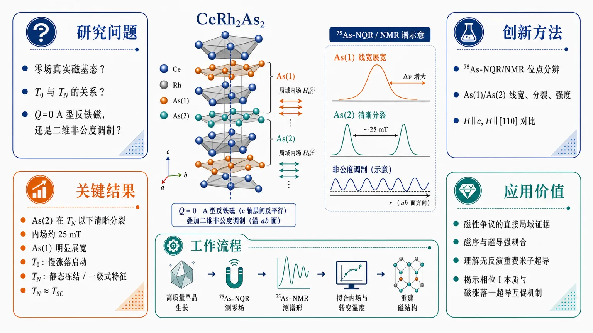
研究问题CeRh2As2 在零场下的真实磁基态是什么？相位 I（T0）与反铁磁转变（TN）之间是什么关系？磁序究竟是简单的 Q=0 A 型反铁磁，还是存在更复杂的空间调制与超导耦合？创新方法使用高质量 CeRh2As2 单晶的 75As-NQR/NMR 做位点分辨局域谱学，抓住 As(1)/As(2) 在不同温度和磁场方向下的线宽、分裂和强度差异；其 Aha 点是：不是只看“有没有磁序”，而是用 As(1) 的异常展宽反推出“Q=0 A 型骨架上叠加二维非公度调制”，同时把 T0 的强度衰减与 TN 的内场突跳拆成“慢涨落启动—静态冻结”两步。工作流程高质量单晶生长 → 75As-NQR 测零场电四极共振 → 75As-NMR 分别测 H∥c 和 H∥[110] 的谱形变化 → 比较 As(1)/As(2) 的频移、分裂、展宽与强度 I(T)T → 提取局域内场 Hᵢₙₜ 和转变温度 T0、TN → 结合谱线模拟重建磁结构，判定为 Q=0 A 型反铁磁叠加面内二维非公度调制。关键结果As(2) 在 TN 以下出现清晰分裂，对应约 25 mT 内场，比早期样品增强约 1.5 倍；As(1) 在磁序下出现明显展宽，证明不是单纯共格 A 型反铁磁，而是存在二维非公度调制；T0 处先出现 NQR 强度下降，说明磁涨落开始变慢；TN 处内场突增、拟合指数极小且伴随相共存，呈现一级式冻结特征；TN 几乎与 TSC 重合。应用价值为 CeRh2As2 的磁性争议提供最直接的局域谱学证据，明确其磁序与超导不是普通共存，而可能是超导参与诱导磁冻结的强耦合体系；这对理解无反演重费米子超导、多相超导、相位 I 的本质，以及磁涨落与超导互促机制具有重要参考价值。第一部分：核心概览
这项工作用 (⁷⁵)As NQR/NMR 在更高质量的 CeRh(₂)As(₂) 单晶中，直接重建了其零场磁序：A-type 反铁磁基态 不是简单共格结构，而是叠加了 二维非公度调制。更关键的是，(T₀) 处先出现慢涨落磁态，(T_N) 处才冻结为静态有序，并且 (T_Napprox TSC)，把超导与磁冻结的耦合关系推到中心位置。相较近年关于相位 I、局域磁性和多相超导的争论，这里给出最直接的局域谱学证据。
---
第二部分：结构化快速回顾
《Incommensurate modulation with Q=0 A-type Antiferromagnetic Order in CeRh₂As₂ revealed by NQR studies》（None，）
- 背景：CeRh(₂)As(₂) 是局域无反演重子晶体中的重费米子超导体，存在 (T₀sim0.5) K 的相位 I、(T_N) 以下的反铁磁序，以及 (TSCsim0.37) K 的超导；零场磁序类型长期存在争议。
- 方法：在更高质量单晶上进行 (⁷⁵)As-NQR 和 (⁷⁵)As-NMR，比较 As(1)/As(2) 两个位点在不同温度、不同磁场方向下的谱形、线宽、分裂和强度变化。
- 结果：As(2) 谱在磁序下清晰分裂，内场约 25 mT；As(1) 谱出现零场附近的展宽，指向 二维非公度调制。(T₀) 起 NQR 强度下降，(T_N) 处内场突变，符合先慢涨落后冻结的图景。
- 讨论：最合理磁结构是 (Q=0) A-type AFM 叠加 面内二维非公度调制。(T_N) 附近表现出 first-order-like 特征，且更像超导诱导了磁涨落冻结。
- 局限：NQR/NMR 只能约束局域内场分布，传播矢量 (q) 不能唯一确定；相分离、热脉冲加热、时间窗差异都会影响 (T₀) 与 (T_N) 的判定。
- 结论：CeRh(₂)As(₂) 的磁性不是普通“磁性与超导共存”，而是一个对无反演晶格、相位 I、超导和磁冻结强耦合的异常体系。
---
第三部分：逐章节冷凝解析
Abstract
- 高质量单晶把磁序从“模糊线宽”推进到“清晰分裂”
更高质量样品让反铁磁信号显著增强，(T_N) 上移并接近 (TSC)。关键表述是：*“the AFM transition becomes more pronounced, and (T_N) increases to nearly coincide with (TSC)”*。样品微观均匀性明显改善，As(1) 和 As(2) 的 NQR 频率分布宽度分别降到 (Δν_Q/ν_Qsim0.13%) 和 (sim0.39%)，都低于早期样品的 0.27% 和 1.0%。
- As(1) 位点证明磁序并非单纯共格 A 型反铁磁
Abstract 的核心创新点在于：*“The NQR spectra at the As(1) site imply an internal field with an incommensurate distribution”*，指向 二维非公度调制。这意味着磁结构不是只有 (Q=0) A-type AFM 一个分量，而是叠加了面内调制。
- (T₀) 与 (T_N) 分离成“涨落启动”与“静态冻结”两个步骤
关键信号是：*“a pronounced decrease in the NQR intensity at (T₀) well-above (T_N) and an abrupt increase in the internal field at (T_N)”*。对应物理图景是 (T₀) 处磁涨落开始增强并变慢，(T_N) 处冻结成静态 AFM。这个两步式演化比普通二级相变更接近 先形成短程/慢涨落有序，再一级式冻结。
- 超导与磁冻结的时序关系异常紧密
Abstract 最后把核心关系压缩为：*“(T_N) is almost identical to (TSC)”*，并提出 *“the onset of superconductivity suppresses magnetic fluctuations and induces the static order”*。这把超导从“被动共存背景”提升为可能的 磁冻结触发器。
---
I. Introduction
- CeRh(₂)As(₂) 的材料背景决定了磁超导耦合问题极不寻常
该体系是 CaBe(₂)Ge(₂)-type、空间群 P4/nmm 的局域无反演结构，存在两个不等价 As 和 Rh 位点。与局域非中心对称相关的 staggered Rashba spin-orbit coupling 被认为支撑了超导多相。原文关键句是：*“The SC multiphase is attributed to even-parity and odd-parity SC states due to a staggered Rashba spin-orbit coupling”*。
- 相位 I 的本质长期未定
(T₀sim0.5) K 以下的 phase I 被两类候选解释持续竞争：
1) *“a non-magnetic electric quadrupole density wave state”*；
2) *“a weak magnetic order”*。
这一区分直接决定后续如何理解 (T₀) 以下的 NQR 强度下降和磁场效应。
- 早期样品已经提示 AFM，但位点行为强烈不对称
早期 NQR/NMR 发现 As(2) 谱宽显著展宽，而 As(1) 没有明显变化，暗示 As(1) 位点发生内场抵消。结合磁场方向依赖，先前工作把磁序判定为 (Q=0) A-type AFM 且磁矩沿 c 轴。原文概括为：*“These results suggest the (Q=0) A-type AFM order with magnetic moment aligned to the c axis”*。
- 更高质量样品的必要性来自磁序的强烈无序敏感性
早期样品里 (T_Nsim0.25) K 低于 (TSCsim0.37) K，且 AFM 异常较弱；更高质量样品中，超导与磁序的关系更清晰。文本明确指出：*“the AFM order in CeRh2As2 possibly exhibits a unique property distinct from the magnetism that drives superconductivity in most of heavy-fermion superconductors”*。
- μSR 与微型霍尔结果把争议推向“(T₀) 启动磁性”
另一组探针在更高质量样品上给出：磁序从 (T₀) 开始而非 (T_N)。这迫使局域慢探针去区分 慢涨落 与 静态冻结 的时间尺度差异。
---
II. Experimental
- 单晶生长与样品尺度明确
更高质量 CeRh(₂)As(₂) 单晶采用 modified Bi-flux method 生长，典型尺寸为 1.5 × 1.0 × 0.5 mm(³)。样品质量的判断不靠宏观单项，而是直接靠 NQR 线宽、肩峰、超导转变锐度 三重指标。
- 超导温度由同一 NQR 线圈下的交流磁化测得
(TSC=0.37) K 来自 *“the onset temperature of the SC diamagnetic signal from the ac susceptibility measurement using an NQR coil”*。这避免了样品切换带来的温标不一致。
- 低温与 RF 加热控制是实验可信度的关键
测量在 (³)He-(⁴)He dilution refrigerator 中完成，样品浸在混合液里以减小 RF heating。这个设计对判断 (T₀) 到 (T_N) 之间的“慢涨落”尤其重要，因为极小的局域加热都会掩盖亚 0.1 K 量级的细节。
- 磁场方向控制精确到 c 轴与 [110]
NMR 使用分体超导磁体和单轴旋转器，实现 (Hparallel c) 与 (Hparallel[110])。磁场标定利用 (⁶³)Cu / (⁶⁵)Cu NMR，对应 (γ₆₃/2π=11.289) MHz/T 和 (γ₆₅/2π=12.093) MHz/T。
- 探测核参数决定了谱学敏感窗口
目标核为 (⁷⁵)As，核自旋 (I=3/2)，(γ₇₅/2π=7.290) MHz/T。零场下做 NQR，固定场下做 NMR。这种组合恰好把 局域电场梯度 与 局域磁内场 分开读出。
---
III. Results and discussion
#### 1. Sample quality improvement and normal-state spectra
- NQR 线宽显著缩小，结构无序被压低
As(1) 与 As(2) 的相对频率分布宽度分别为 0.13% 和 0.39%，不到早期样品的一半。原句是：*“indicating improved sample quality from a microscopic point of view”*。
这意味着后续看到的 AFM 线宽变化更可能来自真实磁序，而不是结构无序。
- As(2) 上的高频肩峰被显著削弱
早期样品 As(2) NQR 谱中的高频肩峰在更高质量样品中只剩 约 10.9 MHz 附近的小峰。文本把它归因于：*“This suggests that the shoulder structure is due to structural disorder.”*
- 超导转变更尖锐，表明样品更均匀
零场交流磁化曲线的超导起始温度略低，但转变明显更陡。原文表述：*“the transition is much sharper than that in the early-stage sample, indicating a more uniform SC transition.”*
#### 2. AFM spectra below (T_N)
- As(2) 从展宽变为清晰分裂，说明内场更均匀
低于 (T_N) 后，As(2) 谱不再是早期样品那种单纯展宽，而是出现清晰双峰分裂。文本给出具体分裂宽度 约 350 kHz，对应内部磁场 (μ₀Hᵢₙₜsim25) mT。这是早期样品 16 mT 的约 1.5 倍。
- As(1) 的新出现展宽要求修正磁结构
早期样品里 As(1) 几乎没变化，但高质量样品在 (T_N) 以下出现明显线宽增大。原句是：*“the higher-quality sample exhibits a linewidth broadening below (T_N)”*。
这意味着先前“As(1) 位点内场完全相消”的简单图像不再成立，必须加入额外的空间调制。
- 更大的 AFM 矩与更高 (T_N) 支持磁序本征性
文中明确把更高质量样品中的更大内场和更高 (T_N) 解释为：*“the AFM state in CeRh2As2 is intrinsic and is sensitive to disorder.”*
这把 AFM 从“杂质诱导或测不到的边缘态”推进为 体系本征序参量。
#### 3. Evolution around (T₀)
- (T₀) 处没有新的谱形，但强度开始下降
穿越 (T₀sim0.5) K 时，两个位点的谱形几乎不变，只有 NQR intensity 下降。原句：*“no changes in spectral shape were observed at either As site across (T₀) … except for a decrease in the NQR intensity.”*
- (I(T)T) 的下降说明 (T₂) 缩短或 RF 穿透深度减少
常规情况下 (I(T)T) 近似常数；这里从 (T₀) 开始下降，且 *“(T₂) gets shorter below (T₀), suggesting the enhancement of magnetic fluctuations.”*
这组证据把 (T₀) 指向 慢化的磁涨落启动点，不是静态磁序起点。
- 更强的强度下降对应更强的相位 I 异常
与早期样品相比，本样品在 (T₀) 以下的 (I(T)T) 下降更明显，和已有更强热力学异常一致。原句：*“the reduction in (I(T)T) is more pronounced than in the early-stage sample”*。
#### 4. First-order-like onset at (T_N)
- 内部磁场在 (T_N) 处跳变而不是连续长大
图 2(d) 显示 (Hᵢₙₜ) 在 (T_N) 附近陡增，随后温度依赖很弱。关键句：*“The internal field in the AFM state increases abruptly at (T_N), while it shows only small temperature dependence below (T_N).”*
这与常规二级相变的连续序参量增长不同。
- 拟合得到的临界指数极小，支持一级式特征
用 (Hᵢₙₜ(T)=Hᵢₙₜ(0)(1-T/T_N)^β) 拟合得到 (β=0.025)，远低于均场值 0.5。这个数值几乎意味着“跳变”而不是“临界增长”。
- 0.3 K 附近出现相共存，进一步支持相分离
As(2) 在 0.3 K 的谱同时包含转变上下两侧信号。原句：*“suggesting the presence of a phase separation.”*
这正是一级转变或强烈不均匀冻结的常见局域谱学指纹。
- 电子温度高于温度计读数，但仍满足 (T_Napprox TSC)
RF 脉冲会瞬时加热电子系统。相位判定给出 0.35 K < T < (TSC)，说明 0.3 K 处的电子温度实际更高。由此推回，(T_N) 与 (TSC) 几乎重合。
#### 5. NMR anisotropy and field orientation
- As(2) 在 (Hparallel c) 下清晰分裂
低温 NMR 中 As(2) 峰在 1.2 T, (Hparallel c) 下分裂约 370 kHz。这是与 NQR 估算一致的内场证据。
- As(2) 在 (Hparallel[110]) 下表现为峰位左移而非显著展宽
峰向低频侧移动约 60 kHz。解释是内场沿 c 轴，使得有效场
( Hₑff=Hₑₓₜ+Hᵢₙₜ)
从 [110] 方向发生倾斜。由此回推出的内场仍是 25 mT。
- 超导导致的 Knight shift 变化远小于磁内场效应
文中明确指出：*“The reduction of the Knight shift due to superconductivity is about one order of magnitude smaller than this shift.”*
这排除了“谱位移主要来自超导配对”这种解释。
- As(1) 的展宽方向性表明内场具有平面分量
As(1) 在 (Hparallel c) 下展宽约 35 kHz，在 (Hparallel[110]) 下展宽约 200 kHz。因为展宽在外场与内场平行时最大、垂直时最小，所以结论是：As(1) 的内场主要位于 ab 平面，而 As(2) 的内场主要沿 c 轴。
#### 6. Magnetic structure inference
- 单纯共格 A 型 AFM 无法解释 As(1) 谱
共格 AFM 会给出平顶型或更规整的分裂/展宽形状，但 As(1) 谱并不符合。原文：*“the NQR spectrum at the As(1) site did not show such broadening.”*
这排除了最简单的共格模型。
- 一维非公度调制也不匹配
对 (Hᵢₙₜpropto o̧s(qḑotr)) 的一维分布，理论上会出现 double-horn 形状；实验不支持。关键句：*“which is also inconsistent with the NQR spectrum at the As(1) sites.”*
- 二维非公度调制自然给出零场权重增强
对 (Hᵢₙₜpropto o̧s(q₁ḑotr)o̧s(q₂ḑotr)) 的二维分布，零内场权重增大，谱更像 展宽单峰。这与 As(1) 的实验谱最接近。原句：*“The NQR spectrum at the As(1) site closely resembles this shape”*。
- 最可能磁结构是 (Q=0) A-type AFM + 面内二维非公度调制
文中最终给出候选结构：*“the most plausible magnetic structure is a combination of a (Q=0) A-type AFM structure with magnetic moment along the c axis and an in-plane two-dimensional incommensurate modulation.”*
这一定义了新的磁结构层次：共格骨架 + 非公度调制。
- 模拟使用了具体传播矢量与幅度比例
计算中取
(q₁₌[0.07π,0,0])，(q₂₌[0,0.07π,0])，
面内分量约为 c 轴矩的 一半。这不是唯一解，但足以重现实验谱。
- (q) 的精确值不能由 NQR 唯一确定
文中明确承认：*“the change in propagation vector (q) has little effect on the calculation results and cannot be estimated from the NQR spectrum.”*
这属于局域探针的典型局限：能识别调制类型，但难定唯一波矢。
- ([π,π,0]) 附近的调制与实验不符
结合 ARPES 和中子散射曾提出的近 ([π,π,0]) 波矢，在这里无法重现实测 NMR。原因是那类 (q) 会使 As(1) 的 c 轴内场分量更大，与实验矛盾。原句：*“cannot reproduce observed NMR spectrum”*。
#### 7. Relation between (T₀), (T_N), and superconductivity
- (T₀) 更像磁涨落开始变慢的温度
(T₀) 以下 NQR 强度持续下降，但直到 (T_N) 才出现静态内场。原句：*“This suggests the development of magnetic fluctuations.”*
这支持 涨落先行、静态后成。
- μSR 与 NQR 的差异来自时间尺度，不是物理矛盾
μSR 的核/μ子回旋频率更高、死时间更短，能看到 NQR 看不到的准静态涨落。原文解释很直接：*“(μ)SR observes quasistatic yet fluctuating moments, while NQR or magnetization measurements do not detect them.”*
- (T_N) 处的一级式冻结可理解为“超导压低涨落”
关键判断是：*“The close proximity of (T_N) to (TSC) suggest a novel correlation between superconductivity and magnetism: the SC transition could induce the freezing of the magnetic fluctuations.”*
这使超导不再只是与磁序共存，而是可能 触发磁冻结。
- 微型霍尔探针对域壁的解释可并入冻结图景
域壁处残余内场可被解释成冻结优先发生在 domain walls。原句：*“this result is attributed to the magnetic freezing at the domain walls.”*
- 与 CeCu(₂)Si(₂) 的 A 相似，但相互作用方向相反
两者都出现 NQR 强度下降与 μSR 磁性，但 CeCu(₂)Si(₂) 中静态磁序与超导竞争，而 CeRh(₂)As(₂) 中磁态似乎在超导出现后才真正静态化。原句：*“the phase I in CeRh2As2 not only coexists with superconductivity but seems to become a static AFM order only when superconductivity sets in.”*
---
IV. Conclusion
- 更高质量样品把 CeRh(₂)As(₂) 的磁序从“弱异常”变成“可定量的静态内场”
As(2) 的 AFM 内场比早期样品大 1.5 倍，并且 (T_N) 上移到接近 (TSC)。这证明磁序不是噪声或杂质效应，而是体系本征响应。
- As(1) 的展宽是二维非公度调制的关键证据
结论句清楚指出：*“A linewidth broadening was observed even at the As(1) site … which suggests the presence of two-dimensional incommensurate modulation.”*
这一步把磁结构从单一 A 型 AFM 升级为 A 型骨架 + 非公度调制。
- (T₀) 到 (T_N) 之间没有静态 AFM 的直接证据，但有明显慢涨落证据
*“this study did not provide evidence for a static AFM order in the temperature range (T_N approx TSC<T<T₀)”*，但 NQR intensity 从 (T₀) 开始显著下降。也就是说，中间区间更像 动力学前驱态。
- (T_N) 附近的突变与相分离说明静态 AFM 的起点可能是一级式
*“the abrupt, step like onset of an internal field and evidence for phase separation just around (T_N) indicate a first-order-like onset of a static AFM order.”*
这一点是整篇最强的相变性质判断。
- 超导与磁冻结的关系提出新的强关联范式
最终判断是：*“the onset of superconductivity which suppresses magnetic fluctuations and induces the static order.”*
这比“磁性与超导共存”更进一步，变成 超导参与塑造磁基态。
---
第四部分：深度理解与语言支持
1. 术语解析
- Incommensurate modulation
指磁矩大小、方向或内场在晶格上以不能用整数倍晶格常数严格重复的方式变化。这里不是说整个磁结构完全非周期，而是 在 (Q=0) 的 A 型骨架上叠加空间调制。局域探针上常表现为 展宽、双峰、零场权重增加。
- (Q=0) A-type antiferromagnetic order
A-type AFM 通常表示层内平行、层间反平行的堆垛；(Q=0) 说明磁结构在布里渊区中心，不需要新的平移周期来描述。两者合起来的关键微妙点是：大尺度上不必出现新布拉格点，但局域内场仍可强烈不均匀。
- First-order-like phase transition
不是严格数学定义上的一级相变证明，而是指实验特征像一级：内场突跳、相共存、临界指数异常小、滞后趋势。这里 (β=0.025) 和 0.3 K 附近的相共存都指向这种行为。
- Phase separation
在同一温度下同时看到转变前后两个谱成分，说明体系不是全体同时过渡，而是存在空间上分裂的不同区域。在局域谱学里，这常与 一级转变、强无序、或冻结不均匀 相关。
- Slowly fluctuating order / fluctuation freezing
这两个表达的差别很重要：
- slowly fluctuating order：磁相关已经强到有序前驱，但还在时间上缓慢摆动；
- freezing：当涨落速度降到探针时间窗以下，就等效看成静态内场。
这里 (T₀) 更像前者起点，(T_N) 更像后者完成点。
2. 疑难查证：为什么 (T₀) 看到强度下降，却要到 (T_N) 才看到静态内场？
最容易混淆的是：NQR 强度下降 和 静态 AFM 内场出现 并不必然同步。原因在于两种量探测的是不同时间尺度：
- NQR intensity (I(T)T) 对的是弛豫时间、RF 穿透和谱线是否还能被有效激发。当磁涨落变快或弛豫变短，信号会变弱，但这不等于已经形成静态磁序。
- 谱分裂 / 线宽增大 对的是局域静态或准静态内场分布。只有当涨落慢到在测量时间窗里“冻结”，谱才会分裂或明显展宽。
- 这里的关键逻辑是：(T₀) 降低的是涨落时间尺度，(T_N) 则是涨落跨过 NQR 可见阈值的冻结点。
这也是为什么 μSR 能在更高温看到“准静态”，而 NQR 只能在更低温看到“静态”。
一句话概括：(T₀) 是“磁性开始变慢”，(T_N) 是“磁性慢到被 NQR 看成静止”。
---
第五部分：创新评估与关联
1. 创新性判断
- 新颖性不在“发现 CeRh(₂)As(₂) 有磁性”本身，而在“磁结构类型与相变动力学”
近 2–5 年相关工作已把 CeRh(₂)As(₂) 的超导多相、相位 I、局域磁性逐步摆上台面。真正新的地方在于：
1) 用更高质量样品把 As(1) 与 As(2) 的内场分布分开；
2) 证明 AFM 不是单纯共格 A 型，而是 叠加二维非公度调制；
3) 把 (T₀) 与 (T_N) 分解成“涨落启动—冻结成静态”的两步过程；
4) 提出 超导可能诱导磁冻结，而非仅仅与磁序共存。
- 解决了前人没解决的两个核心问题
第一，磁序到底是不是静态、共格、单一波矢？
早期 NQR/NMR 只能给出 As(2) 展宽和 As(1) 近乎抵消的现象，无法区分“弱磁性、局域无序、还是非公度调制”。这里通过 As(1) 的线宽变化 + As(2) 的清晰分裂 + 方向依赖 NMR，把磁结构锁定到 (Q=0) A-type AFM + 2D incommensurate modulation。
第二，(T₀) 与 (T_N) 的关系是什么？
过去可以把 (T₀) 看成相位 I，(T_N) 看成 AFM，但两者是否同一物理对象一直不清楚。这里给出的是：
- (T₀)：磁涨落开始显著增强/减速；
- (T_N)：涨落冻结为静态 AFM；
- (T_Napprox TSC)：超导可能是冻结机制的一部分。
这个“三段式”关系是最强的新意。
- 与近年工作的差异
相比 2022–2025 年关于 quadrupole density wave、odd-parity superconductivity、μSR local magnetism、field-angle phase diagram 的研究，这项工作把争论从“相位标签”推进到 局域磁结构与时间尺度。
过去的工作更像在问“有没有磁性”，这里直接回答了更深的问题：磁性以什么空间调制存在、怎样从涨落冻结、以及为何与超导同步。
如果需要，可以继续把这篇论文整理成：
- 一页式图表笔记，
- 适合汇报的 PPT 提纲，
- 按图 1–4 的逐图精读版。
-
12
📊 含图深析
📖 展开分析 + 配图
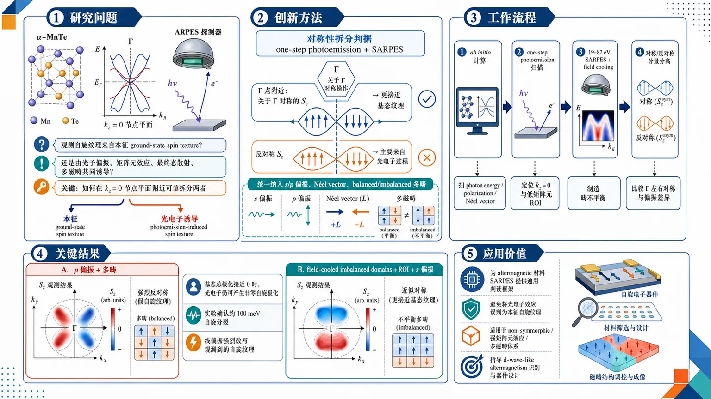
研究问题α-MnTe 的 ARPES/SARPES 中，观测到的自旋纹理究竟来自材料本征的 ground-state spin texture，还是被光子偏振、矩阵元效应、最终态散射和多磁畴共同“造出来”的 photoemission-induced spin polarization？尤其需要回答：如何在 kz=0 节点平面附近把两者可靠拆分。创新方法提出一套“对称性拆分”判据，并用 one-step photoemission calculations 联合 spin-resolved ARPES 验证：在 Γ 点附近，关于 Γ 对称的 Sz 更接近基态纹理，反对称 Sz 主要来自光电子过程；同时把 s/p 偏振、Néel vector 方向、balanced/imbalanced 多畴全部纳入同一框架，建立 MnTe 的可操作 SARPES 解释规则。工作流程先用 ab initio + one-step photoemission 计算扫描不同光子能量、偏振和 Néel vector 取向下的 Sz 纹理，定位 kz=0 与矩阵元效应最弱的 ROI；再做 19–82 eV 的 SARPES 实验，结合 field cooling 制造畴不平衡；最后通过比较 Γ 点左右对称/反对称分量、s/p 偏振差异和不同畴叠加结果，分离基态信号与光电子诱导信号。关键结果发现在 α-MnTe 中，p 偏振和多畴条件下可出现明显的 antisymmetric Sz“假纹理”，即使基态总体极化接近零，光电子仍可产生非零自旋极化；而在 field-cooled 的 imbalanced 域样品、ROI 区域和 s 偏振下，实验与计算都观察到更接近基态的 symmetric Sz 信号。实验还看到约 100 meV 的自旋分裂，并确认线偏振会强烈改写观测到的自旋纹理。应用价值为 altermagnetic 材料的 SARPES 提供通用判读框架，避免把光电子效应误判为本征自旋纹理；对 MnTe 这类 non-symmorphic、强矩阵元效应、多磁畴体系尤其重要。该方法可用于更可靠地识别 d-wave-like altermagnetism、筛查磁畴状态，并指导未来自旋电子学器件中对磁序与光场耦合的设计。第一部分：核心概览（Overview）
这项工作把 α-MnTe 中的 ground-state spin texture 与 photoemission-induced spin polarization 严格拆分，建立了可操作的 SARPES 解释规则。核心贡献在于：用 one-step photoemission calculations 结合实验，证明在 kz = 0 节点附近，对称/反对称 的 (S_z) 信号可分别对应基态纹理与光电子过程；同时揭示 线偏振光、Néel vector 取向和 多畴 会显著改写观测到的自旋纹理。该结果直接提升了 altermagnetic 材料中光电子自旋测量的可解释性，并对 MnTe 作为典型 d-wave altermagnet 的实验判读具有方法论地位。
---
第二部分：结构化快速回顾
《Discerning ground state and photoemission-induced spin textures in altermagnetic α-MnTe》（None，）
- 背景：altermagnetism 通过补偿型共线磁序打破自旋简并，α-MnTe 是典型 NiAs-type 半导体，且在 kz=0 平面存在 weak LKSD 与 d-wave-like 自旋分裂。
- 方法：采用 ab initio band-structure、one-step photoemission、spin-resolved ARPES，并比较 balanced 与 imbalanced magnetic domains；实验光子能量主要在 19–82 eV，重点取 (hν approx 78) eV。
- 结果：发现 s-polarized 与 p-polarized 光会强烈改变光电子自旋纹理；antisymmetric (S_z) 主要来自光电子过程，s-polarized 条件下的 symmetric (S_z) 更接近基态。
- 讨论：多畴、non-symmorphic screw axis、最终态对称性切换与矩阵元效应共同导致 ARPES 解释复杂化；简单的偶极选择定则不够。
- 局限：未实现单畴；常规薄膜存在约 0.1 μm 量级磁畴，信号易被域平均和最终态效应混叠。
- 结论：在 MnTe 中，对称性分析 比看绝对自旋符号更可靠；需将 ground state 与 photoemission-induced 信号分开处理。
---
第三部分：逐章节冷凝解析
I Introduction
Altermagnetism 的基本定义与位置
- altermagnetism 被定义为一种“compensated magnetic phase”，其特征是 collinear order 使电子能带自旋简并被打破，但总体磁矩仍补偿。关键表述是 *"a compensated collinear order that breaks spin degeneracy in the electronic band structure"*。
- 与铁磁不同，铁磁对应 nodeless s-wave-like spin polarization；与常规反铁磁不同，常规反铁磁的能带通常自旋简并。这里对应的关键差异是 *"distinctive nodal d-wave (g- or i-wave) spin polarization"*。
- 这套对称性语言将 real-space rotation 与 spin-space rotation 绑定，形成与超流中“非常规序参量”类似的结构。核心句是 *"spontaneously broken spin-space and real-space rotation symmetries"*。
α-MnTe 作为原型体系
- α-MnTe 是 Nickeline (NiAs-type) 结构，空间群 P6(₃)/mmc，间接带隙约 1.27–1.46 eV。
- 磁结构由两个 Mn 子晶格 A/B 反平行排列，Néel temperature = 310 K。
- 子晶格由 sixfold screw-axis 连接，且“不只是平移或反演”相关；这类 non-symmorphic 结构是后续 selection rules 和 final-state symmetry switching 的根源。原文要点是 *"These sublattices are connected by a non-symmorphic sixfold screw-axis"*。
kz = 0 节点平面与 weak LKSD
- 非相对论项导致 g-wave spin splitting，并出现三个位于 (Γ)-K-A 的节点平面；另一个 (Γ)-K-M 节点平面对应 (k_z=0)，由镜面对称保护。
- SOC 会在这些节点平面上抬升简并，而不破坏晶体反演对称。这里对应的关键机制被称为 *"weak altermagnetic LKSD"*。
- 在 (k_z=0) 平面，预测的 (S_z) 垂直于面内 Mn 磁矩，呈现 d-wave-like 形状，并且方向由 Néel vector 决定；6 个可能的 Néel 方向对应三个等价 (Γ-Mᵢ) 易轴。关键句是 *"the resulting spin polarization (Sz) is perpendicular to the axis of the in-plane manganese magnetic moments"*。
SARPES 的必要性与难点
- 只有 spin- and angle-resolved photoemission 能最直接访问这种 out-of-plane spin polarization。原文强调 *"only spin- and angle-resolved photoemission (SARPES) is able to provide the most direct access"*。
- 但 matrix element effects、光偏振、几何、最终态都会改写观测到的自旋纹理，甚至把基态纹理完全换成别的图样。关键句是 *"they may also completely change the observed spin texture with respect to the ground state"*。
- 因此，必须把 ground-state signal 与 photoemission process signal 解耦；本研究的目标正是这一点。
---
II Results and discussions
#### II.1 1-step simulation of photoemission from MnTe
一步光电子模型的用途
- 先用 one-step photoemission calculations 探查参数空间，再对照实验，可减少大规模实验扫描成本。
- 计算重点放在 (k_z=0) 节点平面、(hν approx 80) eV、以及不同 Néel vector 与 light polarization 的组合。
- 这种策略强调的是对称性和选择定则，而不是只看单条谱线。
光偏振与 Néel vector 联合作用
- 计算结果显示，光电子的 (S_z) 纹理比基态更复杂，且对 Néel vector orientation relative to the ARPES measurement geometry 极其敏感。
- 改变 s-polarized 与 p-polarized 光后，纹理变化显著，说明 photocurrent spin polarization 不是简单的基态投影。对应句子是 *"this modulation varies significantly when changing light polarization"*。
- 同一基态下，光偏振可以引入额外的 spin polarization，并改变强度对称性。
双畴时的“零基态极化”与非零光电子极化
- 对于两种相反 Néel vector 的域同时存在时，基态总极化在整个布里渊区可近似为零；但计算出的 photocurrent polarization 仍然明显非零。
- 原因在于 photoemission 过程本身引入了自旋选择性。关键句是 *"photoelectrons can posses non-zero spin polarization even if the ground state has effectively zero net polarization everywhere in the Brillouin zone"*。
- 这直接说明：光电子自旋极化 ≠ 基态自旋纹理。
ROI 的定义：用于尽量贴近基态
- 识别出一个 region-of-interest (ROI)：(k|| > 0.25) 且 (E_B < 0.5) eV，在该区域矩阵元效应最小。
- 这个 ROI 主要用于实验中提取更接近基态的信号。
- 这也是后文 field-cooled 数据的关键分析窗口。
可操作的判据：对称/反对称分量
- 形成一条实用规则：在 (hν approx 80) eV、(0001) 表面、(k_z=0) 附近，若 (S_z) 关于 (Γ) 点呈 antisymmetric，则几乎可判为 matrix element effect。
- symmetric 分量可能来自基态，也可能混有光电子过程；但在 s-polarized light 下，symmetric 部分更接近 ground-state properties。
- 原文给出的判断是 *"Any Sz spin polarization component that is antisymmetric with respect to the Γ point originates exclusively from matrix element effects."*
非对称空间群导致最终态对称性切换
- non-symmorphic 结构使最终态不再仅由波矢方向决定，而是依赖方向和长度。
- 这会引起 symmetry switching at Brillouin zone boundaries，甚至表现为表观 Brillouin zone doubling。
- 对 MnTe 的推断是：六重螺旋轴可能导致 asynchronous intensity modulation，因此解释时更应依赖 symmetry arguments 而不是自旋信号的绝对值或符号。
#### II.2 Influence of multiple domains
多畴是现实样品的常态
- 真实 MnTe 薄膜的磁畴尺度约 0.1 μm，常规同步辐射 ARPES 很可能同时测到多个畴。
- (0001) 表面有 6 种 Néel vector 取向；同一易轴下相反 Néel vector 的能带自旋相反。
- 因此定义了两种基本场景：balanced 与 imbalanced domain configuration。
#### II.2.1 Balanced domain configuration
VUV 扫描定位 (k_z=0)
- 对 non-field-cooled unpatterned films 做了 19–82 eV 的 photon-energy scan，以寻找 (k_z=0) 平面。
- 通过 constant energy slices 和与 ab-initio 及既有数据比对，定位出多个 (k_z=0) 平面。
- 最终选 (hν approx 78) eV，原因是谱权更干净、信噪比较高。
- 这一区间主要观察到沿 (k_z) 色散的带，说明主要是 bulk origin，但并不排除 surface resonance。
约 100 meV 的自旋分裂
- 在 (Γ-K) 方向可清晰看到约 100 meV 的分裂；沿 (Γ-M) 则更小、更难分辨。
- 这与先前关于 d-wave-like spin splitting 的预期一致。
- 关键数字是：100 meV 级别、(hν = 78) eV、100 meV below (E_F) 的常能面图。
线性与圆二色性并存
- 常能面上同时出现 linear dichroism 与 circular dichroism。
- 圆二色性关于散射面反对称，而散射面又与镜面对称面重合，因此主要归因于实验几何，而不是固有磁性。
- 对左右圆偏振求和可压制这部分权重调制。
- 观测到的 6 重对称 iso-surface 说明，spin-integrated ARPES 对 domain orientation 不如 spin-resolved ARPES 敏感。
线偏振下的选择性激发违反简单偶极图像
- p-polarized light 的结果不违背对 (p_z) 轨道的普通偶极规则，因为靠近 (E_F) 的 Te 态确有沿 c-axis 的主要 (p) 成分。
- 但 s-polarized light 理应在 scattering plane 内给出强度极小值，实验却相反，说明仅用标准 dipole selection rules 无法解释。
- 因而提出：线偏振光会 selectively photoexcite different Néel domains。
平衡畴时的“Rashba-like”假信号
- 计算表明，在 balanced domains + p-polarized light 下，靠近 (Γ) 点会出现明显 antisymmetric spin signal。
- 该信号不是基态，而是纯粹的 photoemission-induced。
- 实验中在 (k|| approx 0.2) Å(⁻¹)、接近 (E_F) 的区域也看到了类似结构。
- 这解释了先前 MnTe 单晶中的 Rashba-like spin signal。
大动量区域接近零极化
- 对于平衡域、(hν approx 80) eV 的条件，大动量区域的信号应接近零，因为基态总体自旋补偿。
- 这为后文区分“真实基态自旋”提供了参照。
#### II.2.2 Imbalanced domain configuration
field cooling 只改变畴占比，不会变成单畴
- 采用 field cooling：先在高于 (T_N approx 310) K 的 350 K 加热，再在 0.4 T 外磁场下冷却到 200 K，随后降到 80 K。
- 对未微加工薄膜，不预期形成单畴；只预期在相反 Néel vector 之间形成不平衡。
- 这一步的物理意义是提升基态自旋纹理在总信号中的权重。
具体畴配比与“有效磁化”
- 设定的模拟配比为：
- Ground state 1 = (24; 19; 19)%
- Ground state 2 = (10; 14; 14)%
- 对应平均域不平衡（effective “magnetization”）为 0.28。
- 这不是净铁磁，而是域统计偏置。
s-polarized light 下出现对称自旋纹理
- 在 (k|| approx 0.36) Å(⁻¹) 的 ROI，s-polarized light 下的实验 spin-resolved EDC 显示清晰 symmetric spin signal。
- 计算的 EDC 也给出同样对称性。
- 因为该区域矩阵元效应最弱，这一信号主要反映 ground-state spin texture。
- 这支持了 SOC-induced lifted Kramers spin degeneracy 在 altermagnetic MnTe 中的存在。
p-polarized light 下基态信号几乎消失
- 同样几何下改用 p-polarized light，基态相关成分几乎完全消失，只剩主要为 antisymmetric 的信号。
- 在 ROI 内该极化信号几乎不可见。
- 在 (k||=-0.36) Å(⁻¹) 的实验 EDC 中，极化度仅为几个百分点，远低于 s 偏振。
- 这说明 p 偏振更容易被 photoemission-induced 效应主导。
M-Γ-M 方向更不利于清晰判读
- 对于位于 scattering plane 内的 M-Γ-M 方向，即使使用 s-polarized light，畴叠加也很难产生清晰可辨的极化信号。
- 这里对称和反对称分量都存在，但没有稳定趋势，且幅度接近检测极限。
- 实验上也确实未检测到清楚的自旋信号。
---
III Conclusions
核心结论：对称性拆分成功
- 通过 (S)ARPES 与 1-step photoemission calculations 的联合分析，ground-state-related polarization 与 photoemission-induced polarization 被成功区分。
- 关键判据是：关于 (Γ) 点对称 的 (S_z) 更接近基态；反对称 分量主要来自光电子过程。
- 这套判据依赖 Néel vector reversal/rotation 的对称性分析，而不是单看绝对符号。
线偏振与 Néel vector 耦合
- linear dichroism 不只是普通偶极选择定则，而是与 Néel vector orientation 发生耦合。
- field-cooled 样品中，s-polarized light 能给出清晰自旋极化，而 p-polarized light 基本无极化，验证了这种耦合。
MnTe 中 SARPES 的三重复杂性
- 第一层复杂性：lifted Kramers degeneracy 的 occupied/unoccupied 带结构，引入强烈 photon-energy-dependent final-state effects。
- 第二层复杂性：spin-polarized bands 与偏振光的耦合，会调制光电子电流和自旋极化。
- 第三层复杂性：crystal orientation, Néel vector, experimental geometry 与 multiple magnetic domains 共同作用。
- 因而，photoemission-induced spin polarization 不能直接等同于基态。
更可靠的判据
- 对称性推断，比比较不同 photon energy、不同 polarization 下的绝对自旋方向更稳健。
- 这也是 MnTe 乃至更广泛 altermagnetic systems 的通用分析框架。
---
IV Methods
样品制备与冷却条件
- 薄膜厚度 30 nm，在 700 K 通过 MBE 生长于 InP(111)A 基底。
- 真空转移采用自制 vacuum suitcase，全程保持 UHV (p approx 8 × 10⁻¹¹) mbar。
- field cooling 使用 0.4 T 永磁体，磁场沿 (0001)。
- 先加热至 350 K，再冷却到 200 K，之后转移并降到 80 K。
- 薄膜为 p-type doping。
第一性原理电子结构计算
- 使用 VASP，功能泛函为 PBE，并打开 SOC。
- 电子关联用 Dudarev-type Hubbard correction。
- 参数：(8 × 8 × 5) k 点网格，能量截断 520 eV。
- 晶格常数来自 XRD。
一阶光电子计算
- 使用 one-step model of photoemission，在 SPR-KKR 中实现。
- 采用 multiple scattering theory，直接计算 Mn 终端 MnTe(0001) 半无限半空间的 photocurrent。
- 表面势用 spin-dependent Rundgren–Malmström barrier 描述。
- LSDA+U 参数：(U=4.80) eV, (J=0.80) eV。
- 最终态采用 time-reversed spin-polarized LEED state；初态由 retarded one-electron Green function 表示。
- 计算纳入实际 ARPES 几何、photon momentum, escape depth, 以及多重散射。
- 多畴模拟通过对各域信号 incoherently 相加实现。
实验 ARPES / SARPES 条件
- 在 B-branch of the BLOCH beamline 测量，光子能量范围 19–82 eV，温度 80 K。
- 光斑大小约 12.5 μm × 15.5 μm。
- 自旋分辨实验的能量分辨率 57 meV。
- 角积分为：沿分析器狭缝 1.5°，垂直方向 0.5°，对应约 0.1 Å(⁻¹) 和 0.04 Å(⁻¹)（在 (Eₖᵢₙ=73) eV 时）。
- 自旋探测器是 VLEED（Ferrum™），基于磁化 Fe 薄膜/W(001) 的交换散射。
- 所有自旋数据都测的是沿 c-axis 的 (S_z) 分量；K-Γ-K 方向与 HSA 入口狭缝对齐。
---
V Acknowledgments
资助与合作
- 瑞士 NSF Spark grant CRSK-2 228962、SNSF 项目 200021-200362、Czech QM4ST 项目、ERC Starting Grant 101165122、ERC Advanced Grant 101095925、Leverhulme Trust ECF-2023-755、EPSRC EP/V031201/1、Royal Society URF 等支持了不同作者。
- MAX IV 提供了 BLOCH beamline 机时，proposal 20231587。
- 理论讨论对象包括 Eugene Krasovskii 和 Christophe Berthod。
---
Data Availability Statement
数据获取方式
- 数据可向通讯作者请求获得。
- 没有公开仓库链接或可下载原始数据集信息。
---
Appendix A Comparison of the experimental and 1-step calculated data
自旋积分图像仍强烈依赖参数
- 这部分显示的是与 Fig. 2 类似的 spin-integrated photoelectron current，计算条件仍是 (k_z=0)、(hν=82) eV、沿 K-Γ-K 方向。
- 结果表明，photoelectron distribution 依然强烈依赖 Néel vector direction 和 light polarization。
- 但实验受限于有限的 energy and angular resolution，这种差异无法稳定地用于直接提取 domain configuration。
- 该部分在给定文本中后半截截断。
---
第四部分：深度理解与语言支持
1) 术语解析
Altermagnetism
- 不是普通反铁磁，也不是铁磁。
- 关键点在于：总磁矩补偿，但能带里出现与动量相关的自旋分裂。
- “d-wave-like”不是说轨道真的有 d 轨道，而是说动量空间中的自旋纹理呈四瓣/节点结构，类似 d 波序参量。
Lifted Kramers spin degeneracy (LKSD)
- 直译为“抬升的 Kramers 自旋简并”。
- 在这里不是指磁场破坏 Kramers 简并，而是 SOC + 非平庸磁空间群对称性 共同让原本的简并被打开。
- “strong” LKSD 指无 SOC 的非相对论分裂；“weak” LKSD 指 SOC 在节点平面上额外打开的分裂。
Matrix element effects
- 指光电子强度与自旋，不仅取决于初态能带，还取决于跃迁矩阵元。
- 结果是：实验里看到的强度/自旋纹理可能被偏振光、几何、最终态彻底改写。
- 这里最重要的微妙差别是：它不只是“强度变化”，还能造成 假自旋纹理。
Non-symmorphic
- 包含 screw axis 和 glide plane 等“非原始平移”对称操作。
- 这类对称会让最终态的表示在不同布里渊区之间切换，造成 selection rules 的区域依赖。
- 读文时要特别注意：这里的影响不是小修小补，而是会改写 ARPES 是否“可见”。
One-step photoemission
- 不是“分三步”去看电子先激发、再传播、再逃逸，而是把整个过程作为一个量子散射问题整体处理。
- 优点是能自然纳入 initial state, final state, multiple scattering, surface barrier 和 experimental geometry。
- 对这种强矩阵元、强对称性的系统，远比简单三步模型可靠。
2) 疑难查证：为什么“对称/反对称”这么关键？
为什么反对称 (S_z) 几乎可视为 photoemission-induced？
- 在给定几何下，基态的 d-wave-like 纹理对 (Γ) 点通常具有特定对称性。
- 如果测到的信号关于 (Γ) 点反对称，说明该结构不是基态简单投影，而更像由跃迁矩阵元、最终态散射或偏振选择定则引入。
- 这也是为什么文中强调：不是盯着“自旋是正还是负”，而是盯着“关于 (Γ) 的对称性”。
为什么 s 偏振和 p 偏振差别这么大？
- s/p 偏振改变电场方向，从而改变能级间跃迁的允许性。
- 在 MnTe 这种有 non-symmorphic symmetry 和多畴的系统里，电场方向不仅改变强度，还会“挑选”不同 Néel 取向的域。
- 所以 p 偏振下看到的 Rashba-like 信号，很可能只是光电子选择效应，不应直接解释成材料本征 Rashba。
为什么多畴比单畴难得多？
- 每个域的基态自旋纹理方向相反或旋转不同，叠加后容易相互抵消。
- 一旦再叠加光电子矩阵元效应，某些域会被“放大”，另一些域会被“压制”。
- 因此，实验上真正看到的，不是“单一磁性”，而是“畴统计 × 光学选择定则 × 最终态”三者的卷积。
---
第五部分：创新评估与关联
1) 创新性判断
过去 2–5 年里，MnTe 与 altermagnetism 的工作重点集中在三类问题：
- 证明 altermagnetic band splitting 存在；
- 用 XMCD、AHE、ARPES 等手段寻找实验指纹；
- 讨论 Rashba-like 或 d-wave-like 自旋纹理。
这项工作的新颖性主要在于以下四点：
- 首次把“基态自旋纹理”和“光电子诱导自旋纹理”系统拆开。
不是简单报告有自旋极化，而是给出可执行判据：antisymmetric around (Γ) → matrix element，symmetric under selected conditions → ground state。
- 把多畴问题纳入一阶光电子计算框架。
既考虑 balanced，也考虑 imbalanced，并用具体域配比 (24;19;19)% / (10;14;14)% 和 0.28 的有效偏置解释实验。
- 揭示线偏振与 Néel vector 的选择性耦合。
这超出普通偶极规则，说明 MnTe 的 ARPES 不只是“看带”，而是在“读出磁畴与光场的耦合响应”。
- 给出对 altermagnetic SARPES 的通用方法论。
对称性分析比改 photon energy 或简单比较绝对 spin sign 更稳健，这一点对其他 non-symmorphic altermagnets 也可迁移。
2) 解决了什么前人没解决的问题？
- 解决了 Rashba-like spin signal 是否真是基态 的歧义。
- 解决了 SARPES 中域平均导致的假纹理 问题。
- 解决了 MnTe 中线偏振光为何会违反简单偶极选择定则 的解释缺口。
- 解决了 如何在 kz=0 节点平面附近识别 weak LKSD 的实验判读问题。
如果需要，还可以进一步把这篇论文整理成：
- 一页式论文笔记，
- 审稿人视角的优缺点评估，
- 图 1–5 的逐图解读。
-
13
📊 含图深析
📖 展开分析 + 配图
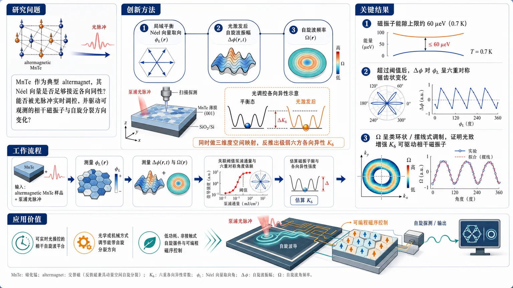
研究问题MnTe 作为典型 altermagnet，其 Néel 向量是否足够接近各向同性，能否被光脉冲实时调控，并由此驱动可观测的相干磁振子与自旋分裂方向变化？创新方法同时做三维度空间映射：局域平衡 Néel 向量取向、光激发后自旋波振幅、以及自旋波频率；用这些联动数据反推出极弱的六方各向异性 K6，并捕捉光致增强各向异性引发的相干磁振子响应。Aha 点在于：不是单纯“打出磁振子”，而是用光去改写磁各向异性势阱本身。工作流程输入：altermagnetic MnTe 样品与泵浦光脉冲。过程：先测局域平衡 Néel 向量角度 φL(r)，再测光激发后的振幅 Δφ(r,t) 和频率 Ω(r)；将空间分布与阈值泵浦通量关联，分析六重对称的角度依赖与频率调制；据此估算磁振子隙和各向异性强度。输出：相干磁振子图样、极弱 K6 结论，以及光调控自旋分裂方向的可行性。关键结果给出约 60 μeV（0.7 K）的磁振子能隙上限，说明 MnTe 的内禀各向异性极弱；观察到超过阈值后，Δφ 对 φL 呈六重对称的锯齿状变化，Ω 呈类环状/摆线式调制；证明光致增强 K6 足以驱动相干磁振子，材料对光学调控高度敏感。应用价值为 altermagnetic spintronics 提供一个可被光实时操控的相干自旋波平台；可通过光学或机械方式调节能带自旋分裂方向，为低功耗、非接触式自旋器件和可编程磁序控制打开路径。第一部分：核心概览
这项工作把 altermagnetic MnTe 从静态磁序材料推进为可被光学实时操控的相干自旋波平台。核心贡献是同时测得 Néel 向量的平衡取向、光激发后振幅与频率，并据此给出约 60 μeV 的超低磁振子能隙上限，证明其 六方各向异性 K6 极弱、对光致调制极敏感。由此打开了通过 光调各向异性 来驱动相干磁振子、并进一步控制能带自旋分裂方向的路径，在 altermagnetic spintronics 中具有方法学与概念双重推进意义。
---
第二部分：结构化快速回顾
《Coherent Magnons Driven by Photomodulated Anisotropy in Altermagnetic MnTe》（None，）
- 背景：MnTe 是典型的 g-wave altermagnet，适合研究 altermagnetic 有序的非平衡激发；关键问题是其 Néel 向量是否足够接近各向同性，以支持光学调控。
- 方法：并行获取局域平衡取向 (ǎrphi_L(mathbf r))、光激发自旋波振幅 (Δǎrphi(mathbf r,t)) 与频率 (Ømega(mathbf r)) 的空间映射。
- 结果：得到自旋波隙上限约 60 μeV（0.7 K）；发现 六重对称的 sawtooth 形振幅依赖和 cycloid-like 频率调制。
- 讨论：极弱的 hexagonal anisotropy (K₆) 使 altermagnetic 序对光照高度敏感，光致增强 (K₆) 可驱动相干磁振子。
- 局限：可见信息仅限摘要，缺少全文中的实验条件、样本参数、拟合细节与统计误差。
- 结论：MnTe 的近各向同性 Néel 向量使 光学与机械方式控制能带自旋分裂方向成为可能。
---
第三部分：逐章节冷凝解析
> 说明：未提供全文 PDF，原始章节标题不可见。以下仅依据可见题录与摘要内容进行“最小失真”重构；只能严格提取摘要中可证实的信息。
Abstract
Altermagnetic MnTe 的平台地位
MnTe 被明确定位为 “a prototypical (g)-wave altermagnet”，其价值在于可作为研究 altermagnetic 有序非平衡激发的模型体系。这里的关键不只是“具有 altermagnetism”，而是其对称性类型被归类为 g-wave，意味着其动量空间自旋分裂图样具有高阶角向结构，适合检验光学调控与对称性耦合机制。原文直接写明：*“Manganese telluride (MnTe) has recently emerged as a prototypical g-wave altermagnet”*。
同时测量静态取向与动态自旋波
实验的核心信息是把三个量放在同一空间框架内测量：局域平衡 Néel 向量取向 (ǎrphi_L(mathbf r))、光激发自旋波的振幅 (Δǎrphi(mathbf r,t))、以及频率 (Ømega(mathbf r))。这种同步映射使静态磁各向异性与动态响应之间能被一一对应。原文表述为：*“simultaneous spatial mapping of the local equilibrium orientation of the Néel vector, (ǎrphi_L(r)), alongside the amplitude, (Δǎrphi(r,t)), and frequency, (Ømega(r)), of photoexcited spin waves”*。
自旋波隙的极低上限
基于这些测量，给出了由内禀各向异性导致的磁振子隙上限约 (60~μeV)，换算为 0.7 K。这不是“测得精确值”，而是“上限”——说明实验分辨率与分析共同约束出一个极小能隙，直接支持 近各向同性 的结论。原文对应为：*“we place a remarkably low upper bound of (approx 60~μeV) (0.7 K) on the spin-wave gap arising from intrinsic anisotropy”*。
极弱六方各向异性 (K₆)
摘要把这一低能隙归因于 exceptionally weak hexagonal anisotropy ((K₆))。这里的重点在于：不是一般的“各向异性弱”，而是 六方晶格允许的六次项各向异性 极弱，因此 Néel 向量几乎可视为自由转动。原文是：*“This exceptionally weak hexagonal anisotropy ((K₆)) renders the altermagnetic order highly susceptible to optical tuning”*。
光致调制驱动相干磁振子
最关键的机制结论是：光不是简单加热，而是通过 photoinduced enhancement of (K₆) 改变各向异性势垒，从而驱动 coherent spin waves。这意味着动力学不是纯阻尼回复，而是受外场注入后形成有相位关联的相干振荡。原文明确写出：*“allowing coherent spin waves to be driven by a photoinduced enhancement of (K₆)”*。
阈值以上出现六重对称的振幅“锯齿”图样
一旦泵浦通量超过阈值，空间图谱显示 (Δǎrphi) 对 (ǎrphi_L) 呈现 six-fold symmetric sawtooth dependence。这说明动态响应并非均匀线性增长，而是强烈受晶体对称性约束，并在某些角度出现突变式重排。原文对应：*“Above a threshold pump fluence, our spatial maps reveal that this photomodulation manifests as a six-fold symmetric sawtooth dependence of (Δǎrphi) on (ǎrphi_L)”*。
频率出现类环带式调制
同一阈值区间内，自旋波频率 (Ømega) 呈现 cycloid-like modulation。这表明光致各向异性改变了局域有效场，从而不仅影响振幅，也影响本征频率，符合受调谐磁各向异性控制的相干进动图景。原文写为：*“and a cycloid-like modulation of (Ømega)”*。
对 altermagnetic 自旋电子学的意义
结论层面，MnTe 的 near-isotropy of the Néel vector 使 electronic band structure 中的 spin-splitting 方向可以通过 optical and mechanical control 调节。这把磁序操控直接映射到能带自旋纹理控制，属于 altermagnetic spintronics 的核心问题。原文为：*“the near-isotropy of the Néel vector in MnTe enables optical and mechanical control over the orientation of spin-splitting in the electronic band structure”*。
---
第四部分：深度理解与语言支持
1. 术语解析
Altermagnet
- 指一种既非传统铁磁也非反铁磁的磁序类别，具有零净磁化但仍可出现动量依赖的自旋劈裂。
- 与普通反铁磁的关键差别在于：反铁磁常因联合对称性导致能带自旋简并，而 altermagnet 能在无净磁矩下保留类似铁磁的自旋分裂。
Néel vector
- 反铁磁/altermagnetic 有序的方向变量，表示两子晶格磁矩的差向量方向。
- 这里的 (ǎrphi_L(mathbf r)) 是其平衡取向角，后续的 (Δǎrphi(mathbf r,t)) 则是受激发后的角位移。
Hexagonal anisotropy (K₆)
- 六方晶体中允许的六重角向各向异性能项。
- “exceptionally weak” 表明这个项几乎不足以锁定 Néel 向量方向，因此光脉冲足以重塑其有效势能面。
Spin-wave gap
- 磁振子在 (k→ 0) 处的最低激发能量。
- 若能隙极小，说明系统接近旋转对称，低能磁动力学更容易被外部脉冲驱动。
Photomodulated anisotropy
- 光照不仅激发载流子或热效应，还改变磁各向异性参数本身。
- 这里的关键不是“光激发了磁振子”，而是“光改变了产生磁振子的势能地形”。
2. 疑难查证
为什么“增强 (K₆)”会驱动相干磁振子？
- 把 Néel 向量想成在一个浅而六重起伏的势阱里运动。
- 平衡时它停在某个角度；光脉冲到来后，(K₆) 突然改变，相当于把势阱形状瞬间改写。
- 向量来不及立刻跟着新势阱静止，于是围绕新平衡位置发生进动，这就是相干磁振子。
- 若 (K₆) 极弱，势阱很浅，微小光致变化就足以引起明显的动力学响应，这正对应摘要中的“highly susceptible to optical tuning”。
为什么会出现“sawtooth dependence”？
- 六重对称意味着角度响应不是单调光滑旋转，而可能在某些对称轴附近发生“跳变式”切换。
- “sawtooth” 暗示系统在局域最小值之间切换，类似被晶体各向异性钉扎后再被脉冲拉过势垒。
- 这类图样通常是非线性动力学和多稳态势能面的标志。
“cycloid-like modulation” 的物理含义是什么？
- “cycloid-like” 强调频率随空间位置或取向变化呈现周期性但非纯正弦的轨迹。
- 这通常意味着频率被一个角度依赖的各向异性项调制，而不是简单的均匀偏移。
---
第五部分：创新评估与关联
1. 创新性判断
过去 2–5 年与 altermagnet 相关的工作，核心多集中在三类问题：
1) 概念确认：证明某些材料具备 altermagnetic band splitting；
2) 静态表征：通过 ARPES、输运或对称性分析识别自旋分裂；
3) 外场调控：尝试用应变、磁场或电流调节磁序。
这项工作的新颖性集中在三点：
第一，直接进入非平衡磁动力学。
重点不是再次证明 MnTe 是 altermagnet，而是把它推进到 photoexcited spin waves 层面，回答“altermagnetic 序能否被光相干驱动”。
第二，把“极弱各向异性”提升为可利用资源。
过去弱各向异性常被视为不稳定或扰动源；这里则表明它是实现 optical tuning 的关键前提。约 60 μeV 的上限说明系统几乎自由转动，因此光致改变量能显著重塑磁序。
第三，把磁序调控直接连接到能带自旋分裂方向。
这一步超出常规磁振子物理，进入 altermagnetic spintronics 的器件语境：通过光学或机械方式改写 spin-splitting orientation，等于对自旋纹理进行非接触式编程。
2. 相对前人未解决的问题
- 以往工作常停留在“altermagnet 是否存在”或“能否在静态下观测到自旋分裂”。
- 这里解决的是更难的一层：altermagnetic 有序能否在极弱各向异性背景下被相干、空间分辨地驱动与读出。
- 进一步还指出：若 Néel 向量近各向同性，则 optical and mechanical control 不仅可行，而且可直接影响 band spin-splitting，这在器件层面更接近可操作的控制变量。
---
重要限制说明
当前仅有 标题、题录和摘要，没有全文 PDF。
因此以下内容无法可靠展开：
- 原始章节标题与逐章逻辑
- 实验样本量、泵浦参数、探测波长、温度区间、统计检验
- 具体模型方程、拟合误差、图中全部数据点
- 参考文献链与与前人工作的逐项对比
如果补充全文 PDF，我可以继续按真实章节标题做逐段精读，并补齐所有数值、图表和定量证据。
-
14
📖 展开分析 + 配图
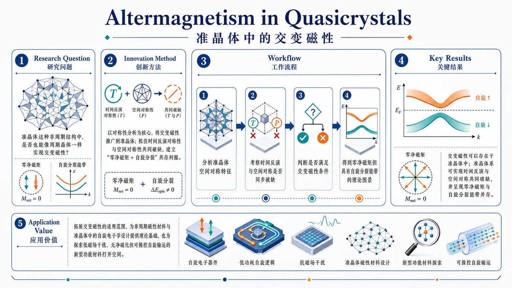
研究问题准晶体这种非周期结构中，是否也能像周期晶体一样实现交变磁性，即在保持零净磁矩的同时出现自旋分裂能带？创新方法以对称性分析为核心，把原本主要定义于周期晶体的交变磁性推广到准晶体；抓住时间反演对称性与空间对称性的共同破缺这一关键点，建立非周期体系中“零净磁矩+自旋分裂”共存的判据。工作流程先分析准晶体的空间对称特征，再考察时间反演与空间对称是否同步破缺，进而判断是否满足交变磁性的对称条件，最终得到准晶体中零净磁矩但具有自旋分裂能带的理论图景。关键结果论文指出交变磁性可以存在于准晶体中，证明这一概念不局限于周期晶格；同时明确了准晶体系可实现时间反演与空间对称共同破缺，并呈现零净磁矩与自旋分裂能带并存的特征。应用价值拓展了交变磁性的适用范围，为非周期磁性材料与准晶体中的自旋电子学设计提供理论基础，也为探索低磁场干扰、无净磁化但可操控自旋输运的新型功能材料打开空间。核心概览
提出并讨论准晶体中的交变磁性（altermagnetism），将“零净磁矩但具有自旋分裂能带”的交变磁概念推广到非周期体系，属于凝聚态磁性/对称性物理方向。
方法要点
- 以对称性分析为核心，将交变磁性的概念从周期晶体推广到准晶体。
- 强调时间反演对称性与空间对称性的共同破缺在准晶中的实现。
- 从理论概念上刻画准晶中“零净磁矩”与“自旋分裂能带”可同时存在的条件。
- 具体模型、计算方法或实验验证细节，摘要未详述。
关键结果
- 报道了准晶体中的交变磁性。
- 说明交变磁性这一概念可推广到非周期体系。
- 指出准晶体中可以实现时间反演与空间对称共同破缺。
- 明确强调该类体系可呈现零净磁矩但存在自旋分裂能带的特征。
创新性判断
- 可能的新颖点在于：把原本主要讨论于周期晶体的交变磁性，首次/首次之一地扩展到准晶体这一非周期结构。
- 这意味着交变磁性不再局限于传统晶格周期性框架，而是进入准周期/非周期对称性语境。
- 若摘要所述属理论推广，则其创新性主要在概念与对称性框架的拓展；若文中还含具体材料或实证，摘要未详述，无法判断。
-
15
📊 含图深析
📖 展开分析 + 配图
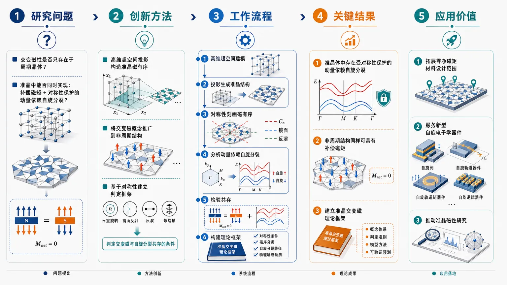
研究问题交变磁性是否只存在于周期晶体？准晶这种非周期结构中，能否同时实现补偿磁矩与对称性保护的动量依赖自旋分裂？创新方法采用高维超空间投影构造描述准晶磁有序，把原本面向周期晶体的交变磁概念推广到准晶；并从对称性出发，建立非周期体系中自旋分裂与补偿磁矩的判定框架。工作流程高维超空间建模 → 投影生成准晶结构 → 用对称性刻画磁有序 → 分析动量依赖自旋分裂 → 检验补偿磁矩与自旋分裂共存 → 构建准晶交变磁理论框架。关键结果证明准晶体中也能出现受对称性保护的动量依赖自旋分裂；证明非周期结构同样可以具有补偿磁矩；建立了准晶交变磁理论框架，说明交变磁并不局限于传统周期晶体。应用价值为非周期磁性材料提供新的理论基底，拓展“零净磁矩但存在自旋分裂”的材料设计范围，可服务于新型自旋电子学器件与准晶磁性研究。核心概览
本文用高维投影构造将交变磁性推广到准晶体，建立了非周期体系中的准晶交变磁理论框架。
方法要点
- 采用高维空间的投影构造来描述准晶体中的磁有序。
- 将交变磁（altermagnetism）的概念从周期晶体推广到非周期结构。
- 从对称性出发分析准晶中是否可能出现动量依赖的自旋分裂。
- 讨论补偿磁矩与自旋分裂可否在准晶体系中同时存在。
关键结果
- 证明准晶体中也可以出现受对称性保护的动量依赖自旋分裂。
- 证明非周期结构中也能实现补偿磁矩。
- 建立了准晶交变磁的理论框架。
- 表明交变磁并不局限于传统周期晶体。
创新性判断
- 可能的新颖点在于：把原本主要讨论于周期晶体的交变磁，系统推广到准晶这种非周期体系。
- 其方法上可能具有创新性：借助“高维投影/超空间”构造，把准晶中的对称性与磁性关联起来。
- 若与同方向工作相比，摘要显示其核心贡献是“理论概念扩展 + 对称性证明”，而非具体材料发现；但具体技术细节与适用范围摘要未详述。
-
16
📊 含图深析
📖 展开分析 + 配图
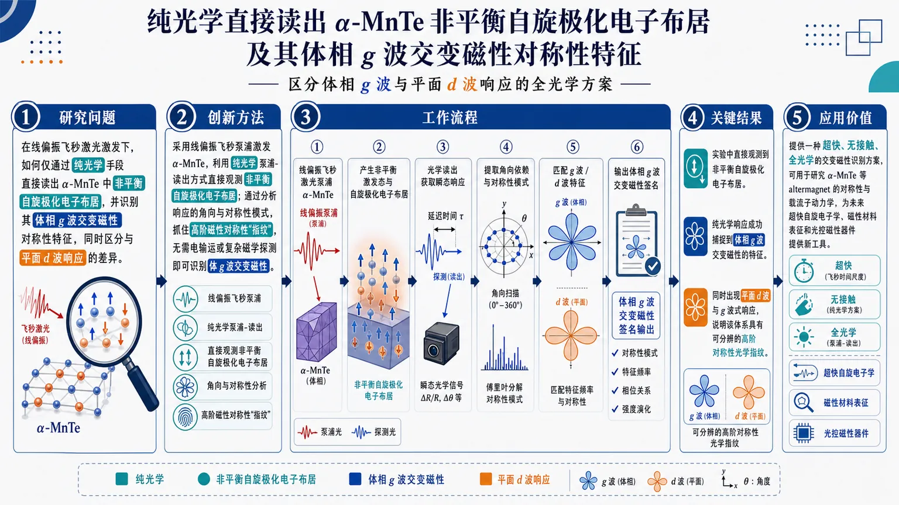
研究问题在线偏振飞秒激光激发下，如何仅通过纯光学手段直接读出 α-MnTe 中非平衡自旋极化电子布居，并识别其体相 g 波交变磁性的对称性特征，同时区分与平面 d 波响应的差异。创新方法采用线偏振飞秒泵浦激发 α-MnTe，利用纯光学的泵浦-读出方式直接观测非平衡自旋极化电子布居；通过分析响应的角向与对称性模式，抓住高阶磁性对称性“指纹”，无需电输运或复杂磁学探测即可识别体 g 波交变磁性。工作流程线偏振飞秒激光泵浦 α-MnTe → 产生非平衡激发态与自旋极化电子布居 → 采用光学读出获取瞬态响应 → 提取角向依赖与对称性模式 → 匹配 g 波 / d 波特征 → 输出体相 g 波交变磁性签名。关键结果实验中直接观测到非平衡自旋极化电子布居；纯光学响应成功捕捉到体 g 波交变磁性的特征；同时出现平面 d 波与 g 波式响应，说明该体系具有可分辨的高阶对称性光学指纹。应用价值提供一种超快、无接触、全光学的交变磁性识别方案，可用于研究 α-MnTe 等 altermagnet 的对称性与载流子动力学，为未来超快自旋电子学、磁性材料表征和光控磁性器件提供新工具。核心概览
研究线偏振飞秒激光泵浦下 α-MnTe 的非平衡光学响应，借由自旋极化电子布居的直接读出，识别体 g 波交变磁性特征，属超快光学与交变磁性研究方向。
方法要点
- 采用线偏振飞秒激光对 α-MnTe 进行泵浦激发。
- 通过光学手段直接读出非平衡自旋极化电子布居。
- 利用纯光学实验来探测磁性对称性特征。
- 关注泵浦后出现的角向/对称性响应模式，用以区分 g 波、d 波式信号。
关键结果
- 线偏振飞秒泵浦后，可直接观测到非平衡自旋极化电子布居。
- 该纯光学响应能够捕捉到体 g 波交变磁性的特征。
- 同时出现平面 d 波与 g 波式响应。
创新性判断
- 可能的新颖点在于：无需电输运或复杂磁学探测，仅用纯光学泵浦-读出即可识别交变磁性的高阶对称性特征。
- 另一可能创新是：首次/直接把 α-MnTe 中的体 g 波交变磁性与超快光学非平衡自旋布居联系起来。
- 不确定性：摘要未详述具体测量方案、对照实验和理论判据，因此“首次”“直接识别”的严格程度需以全文为准。
-
17
📖 展开分析 + 配图
核心概览
针对受驱-耗散的磁振子-量子比特系统，建立全量子区磁振子激射的解析计算框架，并与主方程数值结果对照，属于量子磁振子学/磁振子激射方向。
方法要点
- 研究对象是受驱-耗散的磁振子-量子比特耦合系统。
- 建立了稳态正序磁振子矩的解析方法。
- 计算并对照平均磁振子数与二阶强度相关函数 (g⁽²⁾)。
- 结合全量子主方程模拟，验证或比较解析框架在全量子区的适用性。
关键结果
- 给出了全量子区磁振子激射的可计算框架。
- 解析的稳态正序矩方法可与全量子主方程模拟结果进行对照。
- 论文明确关注平均磁振子数和二阶强度相关函数，用于刻画激射行为。
创新性判断
- 可能的新颖点在于：把磁振子激射从常见的半经典描述推进到全量子区，并给出可直接计算稳态正序矩的解析方法。
- 另一潜在创新是：在受驱-耗散磁振子-量子比特系统中，同时处理平均占据数与二阶关联，从而更完整地描述量子激射特性。
- 但具体是否优于已有方法、以及相较前人工作的技术突破幅度，摘要未详述。
-
18
📊 含图深析
📖 展开分析 + 配图
研究问题如何在纯水中高效制备H2O2，并通过调控Ca2B3O6Cl的局域压电极化场来提升反应效率？创新方法将碳量子点修饰到Ca2B3O6Cl表面，并利用尖端效应对局域压电极化场进行聚焦放大，用局部强电场驱动H2O2生成。工作流程制备CQDs修饰的Ca2B3O6Cl复合材料 → 引入探针/尖端效应增强材料表面的局域极化压电场 → 在纯水体系中进行压电催化反应 → 生成H2O2。关键结果成功实现了纯水中H2O2生产；同时证明局域极化压电场被有效增强，并与H2O2生成直接关联。应用价值为绿色、无额外化学试剂的H2O2制备提供新方案，也为通过局域场工程提升压电催化性能提供可视化设计思路。核心概览
这篇论文属于压电催化/电荷极化调控的 H2O2 生成方向，核心是用碳量子点修饰 Ca2B3O6Cl，并借助探针/尖端效应增强局域压电极化场，从而在纯水中制备过氧化氢。
方法要点
- 采用碳量子点（CQDs）修饰 Ca2B3O6Cl，构建复合材料。
- 利用tip effect（探针/尖端效应）放大材料表面的局域极化压电场。
- 将该增强极化场用于纯水体系中的 H2O2 生成。
- 摘要未详述具体表征手段、反应条件和催化路径细节。
关键结果
- 该工作实现了纯水中 H2O2 生产这一目标。
- 论文强调：局域极化压电场被成功增强，并与 H2O2 生成相关联。
- 摘要未详述具体产率、选择性、稳定性或能量输入数据。
创新性判断
- 可能的新颖点在于：
- 把 CQDs 修饰与Ca2B3O6Cl 压电材料结合，利用界面调控提升性能；
- 引入 tip effect 来强化局域极化压电场，这比常规整体压电增强更具局部放大特征；
- 面向纯水体系制 H2O2，体现出较强的绿色制备导向。
- 但由于摘要信息极少，以上“新颖点”仅为基于题目与摘要的合理判断，具体机制与优势幅度摘要未详述。
-
19
📊 含图深析
📖 展开分析 + 配图
研究问题如何在输入特征不完整的情况下，突破传统“配比向量”对混凝土多尺度结构表达不足的问题，实现对混凝土多项性能的准确、可解释联合预测？创新方法提出 HiCon-GNN：将混凝土表示为“浆体-砂浆-ITZ-混凝土”的分层图结构，用图神经网络替代扁平特征；再加入物理引导的 soft prior 和 mask-aware 编码，使模型既能利用材料机理约束，又能处理缺失特征，形成可解释的多尺度建模框架。工作流程输入混凝土配比与材料特征 → 对缺失信息进行 mask-aware 编码 → 构建浆体、砂浆、ITZ 到混凝土的分层图 → 注入物理/材料软先验 → 通过 GNN 进行多层信息传递与融合 → 联合输出抗压强度、抗拉强度等多项性能预测结果。关键结果在 13,170 条混凝土数据上完成训练与验证，模型可联合预测多项性能，覆盖抗压强度和抗拉强度等关键指标；论文强调该方法相比传统配比向量建模，更能体现混凝土内部层级关系与可解释的多尺度表达。应用价值可用于混凝土配合比设计、性能快速评估和材料筛选，减少反复试验成本；对缺失数据更鲁棒，适合真实工程场景；同时提升对材料内部结构-性能关系的解释能力，为智能建材设计提供决策支持。核心概览
提出 HiCon-GNN，以浆体-砂浆-ITZ-混凝土的分层图替代传统配比向量，结合物理引导与掩码感知编码，在 13,170 条数据上联合预测混凝土多项性能，属于混凝土材料性质建模与可解释多尺度图学习方向。
方法要点
- 用分层图表示混凝土多尺度结构：浆体、砂浆、ITZ 与混凝土层级关联。
- 以图神经网络进行性质预测，而非仅用扁平配比特征。
- 引入 mask-aware 编码，以处理输入缺失或不完整特征。
- 融合 soft prior（软先验），体现物理/材料知识约束。
- 进行多任务/联合预测，覆盖混凝土多项性质。
- 强调模型的可解释性与多尺度建模能力。
关键结果
- 在 13,170 条记录上完成训练/验证，说明该方法面向较大规模混凝土数据集。
- 可联合预测混凝土多项性质；摘要明确提到覆盖抗压强度与抗拉强度。
- 论文主张该框架实现了更具解释性的多尺度建模。
- 具体性能提升幅度、对比基线与统计显著性：摘要未详述。
创新性判断
- 可能的新颖点在于：把“配比向量”升级为“材料层级图”，更贴近混凝土内部多尺度结构。
- 将物理先验与 GNN 结合，可能比纯数据驱动方法更易解释。
- mask-aware 编码提示其对缺失信息更鲁棒，适合真实材料数据场景。
- 但这些创新强度仍需结合全文与对比实验确认；仅据摘要，无法判断是否显著优于同方向最新工作。
-
20
📊 含图深析
📖 展开分析 + 配图
研究问题如何以更低能耗、可逆且可循环的方式从海水中移除碳，同时在处理后恢复海水碱度，解决海洋碳移除中“取碳”与“保碱”难以兼顾的问题。创新方法提出可逆菲嗪-碳纳米管电极体系，利用质子耦合电子转移（PCET）驱动海水 pH 摆动，把溶解无机碳推向可提取 CO2，并在同一循环中回补海水碱度；同时结合实验、建模和机器学习进行机制解析与参数优化。工作流程海水进入电化学体系后，功能电极发生可逆氧化还原并触发 pH 上下摆动；酸碱变化推动溶解无机碳转化并释放为 CO2；随后切换循环恢复海水碱度；最后用实验数据、模型和机器学习共同评估与优化过程。关键结果实现了海水中溶解无机碳向可提取 CO2 的转化，并能在单循环内恢复海水碱度；建立了实验、模型与机器学习联动的研究框架，验证了该电化学海水碳移除路径的可行性。应用价值为海洋碳移除提供一种可逆、可控、可与可再生电力耦合的电化学方案，可用于海水直接碳捕集、海洋负排放技术和海水碱度调控。核心概览
该研究提出一种基于可逆菲嗪-碳纳米管电极的电化学海水碳移除方法，通过PCET 介导的 pH 摆动将海水中的溶解无机碳转化为可提取 CO2，并在单循环内恢复海水碱度，属于海洋碳移除/电化学碳捕集方向。
方法要点
- 采用可逆菲嗪（phenazine）-碳纳米管电极作为功能电极体系。
- 利用PCET（质子耦合电子转移）驱动海水体系发生 pH 摆动。
- 通过 pH 变化推动溶解无机碳向可提取 CO2 转化。
- 在同一循环中实现海水碱度恢复。
- 结合了实验、建模与机器学习进行分析与优化。
关键结果
- 该体系能够将海水中的溶解无机碳转化为可提取 CO2。
- 该过程可在一个循环内恢复海水碱度。
- 论文明确采用了实验、模型和机器学习的联合研究框架。
- 关于具体性能指标、能耗、循环稳定性等，摘要未详述。
创新性判断
- 可能的新颖点在于：将可逆菲嗪分子体系与碳纳米管电极结合，用 PCET 驱动的 pH 摆动实现海水碳转化与碱度回补的耦合。
- 另一潜在创新是：不仅做实验验证，还引入建模与机器学习，可能用于解释机制或优化操作参数。
- 但具体相较同类工作的优势幅度、是否显著降低能耗等，摘要未详述，因此只能作保守判断。
- 21
- 22
- 23
- 24
- 25
- 26
- 27
- 28
- 29
- 30
- 31
- 32
- 33
- 34
- 35
- 36
- 37
- 38
- 39
- 40
- 41
- 42
- 43
- 44
- 45
- 46
- 47
- 48
- 49
- 50
- 51
- 52
- 53
- 54
- 55
- 56
- 57
- 58
- 59
- 60